| 8月10日を楽しみに 守護天使（巨乳でチビ）と王子（イヤミで口が悪い） (ティアラ文庫) | |
| 野梨原 花南 | |
| フランス書院 (2012) | |
【ティアラ文庫】
８月10日を楽しみに 守護天使（巨乳でチビ）と王子（イヤミで口が悪い）
野梨原花南
イラスト／椎名咲月
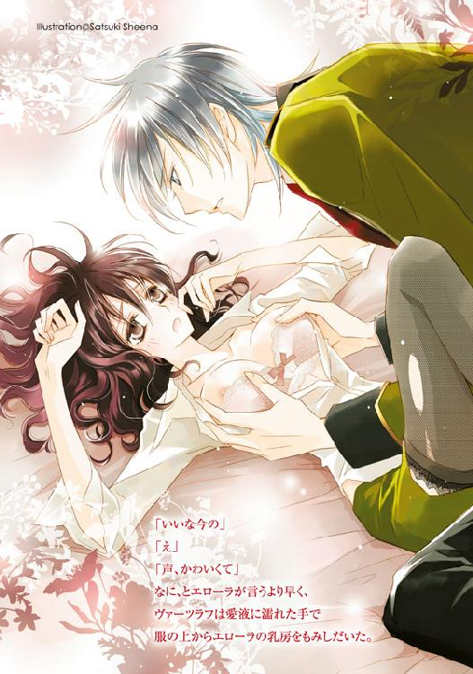
序章
愛する気持ちを隠さずにする口接けは、今までのこともこれからの不安も全て溶かしてしまった。
自分の名も立場も地位も、お互いの困難な状況も、全てだ。
ずっとこうしたかった。
思うがままに、あなたを。
こんなことをしている場合じゃない。
分かってはいるが止められるわけがない。
だったら、いつだったらよかった。この先いつならこの人に優しくキスができるんだ。
相手の唇を、思い焦がれて頭の中で何度も犯した唇を、いつ現実にこうして好きなように蹂躙できるというんだ。
ヴァーツラフはそう思いながら、意識をなくしてぐったりと力のない相手の身体を抱きしめた。
「愛してる、大好きです。愛してる、エローラ......！」
自覚なく声は零れた。
腕の中の柔らかい肉体が身もだえる。小柄で、胸と腰の張った、くびれた腰の黒髪の。
「......ヴァーツラフ......？」
ヴァーツラフはたまらずきつく抱きしめる。
「黙って」
「ヴァーツラフ......」
エローラは思う。
人形の様に整ったヴァーツラフの顔が微笑むと、なんて素敵なんだろう。
まっすぐな銀髪は月の光からとったようで、それを耳の下で切りそろえているから綺麗な額がスッキリ見えている。青い瞳は日にすかしたマンディラ河の氷のかけら。この国の次代の王、またはその補佐としてふさわしい美貌。
エローラはうっとりと相手の顔を見あげる。
なんて綺麗なひとなんだろう。
若々しい美しさに満ちて輝いている。
「ここで抱きます。いいですね？」
「......え？」
ぼんやりしていたエローラの視線に生気が戻る。
そういえばここはどこだったっけ、私なにしてたっけと見まわすエローラは見知らぬ寝台の上で半裸だった。
制服のボタンは外され、ネクタイもどこかに消えている。
豊満な乳房は下着のレースの上からはみ出してしまいそうで、ガーターで留めていたストッキングは大きく穴が開いていた。
「あっ、や、ぁあ、なにこれやだぁはずかしいいい」
真っ赤になるエローラの唇をヴァーツラフは吸い上げる。
何度も。
何度も。
「んっ......ぁ」
その心地よさにエローラは視線をとろりと溶かす。
「だめ......ぇ......」
「どうして」
「だって、そんなことしてる場合じゃ、あん」
スカートの奥に指が入り込み、下着の上からエローラのそこを、線を描くように上から下に何度も何度も撫で上げる。
「や、やだっ、いじらないで、はずかしい、やだ」
「いいんです」
「だって、ミロシュが見てるかもしれないんだよ？」
その言葉と、真っ赤になって本気で困っている顔を見て、ヴァーツラフは微笑んだまま下着の横から指をエローラの中に入れた。濡れていて、熱かった。
「あああああ！」
エローラの甘い声が上がる。
ヴァーツラフはあっという間に興奮した。欲情と、独占欲の混ざった目に、エローラは背筋にゾクゾクしたものが駆け上がるのを感じる。
「だったら、見せつけてやります。あなたを今抱いていいのは僕なんだって」
「ひッ、いや、あ、ああっ、だめ、みられ、ちゃ、したぎ、よごれひゃ、ああっ」
「ああ、中熱い......」
下着の中から濡れた音が響く。その度にエローラの形のいい脚がビクビクと動いた。
「だめっ、いや......！」
「好きです」
エローラはその言葉で、唇を引き結んだ。
何も言えなくなる。
ずっと聞きたかった言葉だ。
けれど聞いてはいけない言葉だった。
私もよと心が叫んだけれどそれは言ってはいけない言葉だった。
「好きです、エローラ」
「......っ......ずるい......ずるい......ずるい......」
涙でにじんだ声でエローラが言う。
「それ、言ったら、私が、あんっ、許すと思ってる、ずるい」
「......だって、そうでしょ......」
エローラがその言葉にぱっと顔を上げて何か言い返そうとしたとき、ヴァーツラフがエローラの淫核を親指で押した。
「きゃぁああああッ！」
エローラの全身に甘くしびれる快感が走り、それが強すぎて身体が痙攣する。
「くひ、あああ」
「本当のことですし。ああ、エローラ、かわいい......愛してます。ああ、ようやく言える」
ヴァーツラフは片腕でエローラを深く抱きしめ、中で指を動かして派手に水音を立て、祈りを捧げるように敬虔な調子で言った。
「愛してますエローラ。僕にあなたを滅茶苦茶にさせてください」
第一話 守護天使（巨乳でチビ）と王子（イヤミで口が悪い）
尖塔と石畳、大河を擁する市街。
冬になればその河は凍り付いて歩いて往き来ができる。
北の小国ヴァライ。
大国三つに囲まれて、地図で見るとまるで三枚のパンの角に挟まれたコインの様に見えることから、コイン・ヴァライという俗称を持つ。
市街はガス灯がともり緩く明るい。
街は寝静まった深夜だ。
一台の馬車が往来のない道を全速力で走り、轍が石畳に乗り上げて車体は何度も派手に跳ねた。他に道行くものはない。
やがてその馬車は一軒の家の前で停まった。
「あいたたおしり痛い」
不均等に分割された二色のハートの紋章が描かれた、白地に青と黒と黄色のラインのデザインの扉が開いて、ヴァライの軍服を着た女性が馬車から降りてきた。
草色のジャケット、同色の膝上のスカート、ワイシャツに赤いネクタイ。その上に上着とおなじ色のコート。略帽を被って、髪はまとめずに下ろしている。その髪は真っ黒で、つやつやと輝いている。巻き毛で、肩をすぎるくらいの長さだ。
「はい持って！」
馬車の中から若い声がして、女性の太ももの高さくらいの黒い革張りのスーツケースが突き出された。
「エローラさん、キャスターは直しましたけど、もう壊さないでくださいって修理部が」
「知らないよーわたしはこわしてないもん。こわれたんだもん」
エローラと呼ばれた女性は少しむくれた。
「修理部はもっと壊してませんよ。ホラ急いで」
中からエローラと同じデザインのコートを翻して飛び出してきたのは金髪の少年だ。
ふわふわとしたくせ毛でまるで教会の壁画の天使のようだ。
身長はエローラとあまり変わらないが、まだ伸びそうな感じがあった。
やはり草色の軍服とコートで、ズボンとブーツだ。
整った顔立ちではあったが、表情がどこかおとなしくない。緑の大きな目の光が強い。
「僕持ちますってば」
「エルンストにはムリよ。ふん。扱い難しいんだから」
エローラは意地になったように顎を上げる。
「もう身長ちょっとしか変わらないから平気ですよチビ」
「ヤダーなに食べたの怖い。最近の若い子怖い」
「巨乳でチビのおばさんがなんかゆってる」
淡々と返された言葉にエローラが答える。
「うるさいうるさい！ あんたが若すぎるんだって！ いくつになったー？」
「十五歳です。知ってるでしょ、寝ぼけてんですか。先に防衛隊が到着してます。家人は避難が済んでるって」
「助かるわ、有能ね」
エローラはエルンストの頭をぐりぐり撫でた。
「巨乳でチビのおばさんが、おっぱいに栄養とられて脳にまわってないから僕ががんばるしか」
「失礼ね！ 失礼ね！」
がらがらとキャスターを鳴らし、石畳で跳ねさせながら、エローラとエルンストは家に到着した。
エローラは呼び鈴を鳴らす。
「王室直属正教会実行監査部対不把握敵流動体第二課、エローラ・バララーエルオヴァです！」
「家人待避済んでるって言ったでしょ。開けて開けて」
「あそっか」
「バカなおばさんだな」
「うぐ」
言ってエローラは少しだけドアを開けた。
家の中のエントランスには、床から五センチくらいの厚さで、桃色と紫色の中間くらいの色彩の半透明のゲルがゆっくりと蠢いていた。所々にビーズのような物が散らばって発光している。
よく見えないが家の中は全てこうなのだろう。
まるで趣味の悪い新しい絨毯みたいだ。
「新世紀のインテリアをお楽しみ下さい」
新聞広告のうたい文句を思い出してエローラは口を歪めて呟いてみる。
エローラの立っているアルコーヴ部分には札が貼ってあって、それは先に来た防衛隊が使う札だ。
それが結界の役目をして、半透明のゲルを封じているとエローラは知っている。だが、扉を開けて時間が経つと結界は破れる。
エローラはそっと扉を閉める。
真剣な顔で、いかにも秘密を告げるようにエルンストに言う。
「すごいいっぱいいた」
「でしょうよ」
「うー」
「デービッド、最近量増えてますね」
「デービッドってさ、今更だけどさ、ピンクでどろどろしちゃって、見た目いやらしいよねアッハッハ」
「会話しろよ」
「あーめんどい。なんでこんなどろどろにデービッドなんて人っぽい名前ついてんだろ」
「つけたのあんたでしょ」
「あーそうだ、九年前の大災厄の時、国境封鎖手続きに来た隣の国の大臣が、デービッドなんちゃらって名前で、もめて腹立ったからつけてやったんだ。やだひどいことしたな」
「ひどいな！」
エローラは立てたままのスーツケースを開いて、中にセットされた細長い棒を取り出し組み立てる。エローラの肩ほどの高さになった黒地に金色で魔法文字の塗装がされた杖をエルンストに渡し、それから蓋をした試験管を何本も取り出す。
杖を持ったエルンストは早足で扉のノブを摑む。エルンストが言う。
「トゥリーン、ドヴァー、アイ、開始」
扉を開ける。
同時にエローラは試験管を家の中に放り投げた。中に薬液の入った試験管が、ゲル状のものに沈む。その中にあるビーズに触れて試験管は割れ、ビーズが連鎖して弾けていく。火が紙を舐めるようにゲルが消えて床が見えた。
「聖典」
エローラが手を出すと、エルンストが分厚い手帳のようなものをエローラに渡した。革の表紙で使い込んでぼろぼろだ。
エローラは杖と聖典を手にして家の中に入る。
かつかつと小気味いい靴音を立てて、エローラはエントランスに入り、ゲルとゲルのない場所の境に立つと、ゲルのある場所に杖を思い切り突き立てた。
杖は床板を破って突き刺さる。
エローラは聖典を開き、開いたページを読み上げる。
「ここに至って彼は言った。
お前の道は前になく後ろにあり、やがて横に広がって大きな通りになるだろう。
イーガーの恵みたれ、ロンドの災厄たれ。これは呪いであり祝福である。燃えよ燃えよ集え集え。今星はここにあり、お前たちはこれほどまでに渇しているのだ。何を迷うことがある。我の星の下に燃えよ燃えよ集い来たれ立ち上がり歩みは遅くとも、いや、疾く来よ、疾風迅雷、それほどの速さでなくては私の恵みを受けるのに足りぬ」
ゲルは言葉のリズムに合わせて震える。
だが大きな変化はない。
エローラはす、と息を吸う。
ひどく大きな者になった気がする。
そう、支配者に。
その傲慢さで矮小な者を睥睨し、当然の権利として号した。
「来よ、ものども」
杖に人差し指で触れる。
その瞬間、一気にゲルが杖に自ら集まって吸い上げられた。
明らかに収まらない質量が杖の中に入り、杖の周りでビーズが弾ける光が舞い散った。紫と桃色の火花がバチバチと音を立てて弾け、エローラを彩った。
やがて全てのゲルが吸い込まれると杖の上に、歪んだハートの形の、金属の輝きを持つ物体が現れた。
それは鞄や財布につけるチャームのようで、けれどどこかぬるりとした不思議なものだった。形は、馬車についている紋章と同一だった。
エローラはそれを摘んで小さくキスする。杖が力を失ってがくりと傾いたのを、見もせず受け止める。
あたりにはもうゲルの気配すら残っていない。
「こうなっちゃえばかわいいわデービッド」
間髪容れずにエルンストが言う。
「ハイ次！」
「え!?」
「噴水広場です！」
「つかれた！」
「いいからほら行きますよ！」
エルンストはチャームをひったくると、鞄の中の同じ形になっている型にはめ込んだ。中は紫のビロード生地が貼られている。
鞄を閉めて走り出す。
「こっち！ すぐだから徒歩です、走って！」
「じゃあもう鞄頼むわよ！ 体力心配だから、わたし、自分の。次でおわりだといいなー」
「いいですけど、石畳が、くそ」
不揃いな石畳に阻まれて、鞄のキャスターが跳ねる。
「ううっ！」
「もー！ 貸して！」
鞄の取っ手をひったくるようにしてエローラは摑み、エルンストは悔しげに唇を引き結ぶ。
「......ああ、年下なんかいやだ！」
「なんか言った!?」
「いいえなんにもー！」
角を曲がった先には噴水広場がある。
家々の鎧戸は下ろされ、そこには退魔の紋章が一つ一つ刻印されていた。ヴァライの全ての家、全ての窓、全ての通風口、全ての下水管にそれは施されているのだ。
噴水は今は止まり、彫刻だけが噴水の周りを華やかに彩っている。外灯があたりを照らしている。その広場いっぱいにデービッドは溢れ、石畳に描かれた線からはみ出ることができずに膝丈ほどの高さで蠢いていた。まるで透明な容れ物にいれられたようにだ。
だからこそ、その中に、忘我の顔で浮かぶ男たちの姿も見えた。市警の制服を着ているものたちと、防衛隊の制服を着ているものたちがいた。
エローラは鼻に皺を寄せると唇を曲げ、杖を握り直してがつッと足音を立てて前に足を踏み出した。
「聖典ッ！」
「そのまえに試薬いるでしょ」
と、エルンストは試験管を渡す。エローラはそれを投げ入れて、反応ビーズが弾けるのを見つめながら呟いた。
「......早く助けなくちゃ」
エローラはデービッドの中に杖を突き立てる。デービッドは杖に触れた部分だけぬるぬると動いた。
エルンストは鞄から聖典を取り出してエローラに渡して、呟く。
「トゥリーン、ドヴァー、アイ、開始」
エローラは聖典を開く。
「この時は待たれていたのだ、と彼女は泣く。彼は泣き、彼も泣く。ただ、知っていただけなのだ誰も彼も。忘れていただけなのだ誰も彼も。バラの露に虹の影に空の輝きに、おまえの微笑みに満たされて、流されていく日々の中、ただ忘れていただけなのだ。知っていたことを。この時は待たれていたのだ。暗闇の、深淵の、遠い夜の、一粒の黒真珠。その中で鳴り響く太鼓のことを、死という名の、再生という名の約束のことをだれもただ忘れていただけなのだ」
言葉が響く度に、反応ビーズが強い結合を示して火花のように弾けデービッドが波打つ。それはまるで身もだえるといったほうがいいような動きで、おぞましい。
その変化でデービッドの中から男の顔が現れた。防衛隊の草色の制服を着ている。がは、と息をしてぼんやりとエローラを見つめた。エローラは息を呑んだ。男は泣きそうな声で言う。
「エローラ、さま、たすけ、て」
エローラはぎゅっと唇を引き結び、泣きそうな顔になる。
王室直属正教会実行監査部対不把握敵流動体第一課、通称『防衛隊』は国内各所に詰め所があり、通報があれば迅速に対応できるようになっている。
だから、エローラたちが到着するより早く現場に到着し、結界を張って被害を食い止め、拡散するのに少々の時間を要する反応ビーズを撒いておくのが彼らの役割なのだが、デービッドのスピードに負けてとらえられてしまうことがあった。
もう少し早く来られたら。
それより、デービッドなんかそもそもいなければ。
わたし一人だけでなんとかできたら。
そんな思いがエローラの中に渦巻く。
こらえて、叫んだ。
「......おいで、私の呼び声に従い、ここへ！」
ずる、とデービッドが杖に吸い込まれていくが、その動きは余りに急激だった。
「え」
杖がガタガタと暴れ、エローラは聖典を手放して両手で杖を握りしめる。聖典は床に落ちる。
「鎮まれ、来よ、鎮まれ」
エローラは言葉に力を込めるが杖はますます跳ね、暴れる。
エローラはかあっと顔を赤くし、腹の底から怒鳴った。
「───私はおまえ共の女王なるものぞ!!」
だが杖は、びき、という音と共に割れ、亀裂が一気に何本も走って、黒と金の塗装が割れた。
握り込んだ手の中で杖が崩れていくのが分かる。
デービッドの力が強くはあるが、自分の力が今弱いのだと痛感させられる。
こんなはずは。
まだ。
「っ」
エローラは茫然とその光景を見る。
信じられない。
こんな。
こんなの。
こんなのって。
ああ。
支配の杖を失って、禍ものたちが反逆する。
私自身の力だけで、屈服させ得るものだろうか？
けれど、そうしないと。
そうしないと。
わたしは、わたしたちは、この国は。
ミロシュ、あなたは。
暴れるデービッドが一筋伸びてエローラの足に絡みついた。
「きゃ......」
するするとツタのように巻き付いて、どくりと蠢動する。
その部分からエローラは、熱く、痛いようなそうではないような強烈に甘い感覚を覚える。思考が散りそうだ。意思を手放してしまいたくなる。
「......いや......ぁ」
くらりと視線を散らしたとき、エローラを抱き込むように後ろから手が伸びてきた。
背中に、胸板が、誰かの身体がどん、と当たる。大きい。包みこまれる。紛れもない成年の男の身体だ。力強い。頼もしい、人の感触。
黒の革手袋をした指の長い大きな両手が、力を失って放れそうになったエローラの両手ごと、割れた杖をまとめて握り込んだ。
はっと意識が戻った。
エローラもその杖を摑む。強い力と、確かな意思で。
やめてよデービッド。
私は、あなたになんか、あなたたちになんか負けないのよ。
男の声がする。
耳の横で。
心地のよい、チェロの音色のような声音だ。
「暗闇の、深淵の」
エローラも声を乗せる。
「遠い夜の、一粒の黒真珠」
二人の声が合う。
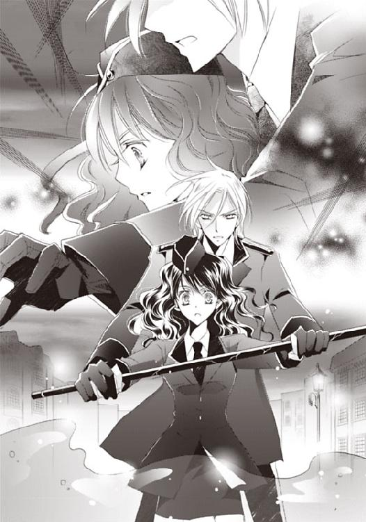
手の中の杖が鎮まっていく。
「その中で鳴り響く太鼓のことを、死という名の、再生という名の約束のことを」
水が、穴に吸い落ちるように。
デービッドたち、半透明のゲルが、杖に自ら集まっていく。
もはや抵抗はない。
心地よい。
「だれもただ忘れていただけなのだ」
すう、と呼吸を合わせる。
「おいで、我らの呼び声に従い、ここへ！」
杖の中の密度が高まる。見た目以上の質量が集まっているような。
ぎりぎりと集まり、密集して、そして歪んだハートのチャームが現れる。透明な紫色だ。
美しかった。
夜空の星明かり、ガス灯の明かりの中で静かに浮いている。
エローラは一瞬それに見とれてから、手を伸ばして取ろうとしたが、革手袋の手が先にチャームを取った。
「これ、お願いします」
彼は平然とエルンストに差し出す。
エルンストはいやそうな顔をしてからひったくるように受け取った。
それを気にした様子もなく、彼は笑った。
エローラは気にくわない。
別にそんなのどっちでもいいっちゃいいけど。
なんだそれ。
なんだか一気に醒めた。
デービッドが消えて、噴水広場には市警や防衛隊の隊員やらが力なく蠢いている。
外灯が白い。
終わった気配を感じてか家の中から覗く気配がしている。
エローラはやっぱり腹が立ったので怒鳴った。
「......なにすんのよ！ わたしが取ろうとしてたのに。失礼じゃない？ 普通に！」
彼は笑った。
「あなたは捕獲に失敗したのにそれはないでしょ。僕は初出動で初手柄なんだから、いいとこ取ったっていいじゃないですか」
エローラは頭に血が上るのを感じた。
「───はァ？ なっ、何よ！」
握り込んだエローラの手の中で、杖がボロリと崩れる。
「あっ、あ」
「うわ、ちょっと！ 破片でもなにかにはなるんだから！」
言ってエルンストがしゃがんで杖の欠片を集める。
「代わりの杖は僕が持ってますけど、お使いになります？」
その男は美青年、と一言で形容して終わってしまってもいいような男だった。
直毛の銀髪で、貴族の若者の流行で耳の下あたりで切りそろえ、瞳は真っ青だ。
秀麗な額も、そこからの鼻も、すらりとした緩い曲線が優美だ。
眉は細すぎず太すぎず、睫毛は生えそろって長い。今は引き結ばれた唇は男性的にふくよかだ。
知っている顔だった。
エローラは思い至って叫んだ。
「......なんであんたがここにいんの!?」
「僕をご存じなんですか」
「あッたりま」
エルンストが咳払いをした。エローラははっとして言った。
「し、新聞とかで。だって王子様じゃない......」
エローラは一瞬視線を下げ、それから上げて言った。
「ヴァーツラフ・ツインマーマン・ハース殿下。だよね」
ヴァーツラフは目許を和らげてエローラに言った。
「僕も存じてます。エローラ・バララーエルオヴァ。デービッドに対するこの九年間唯一の戦力だそうですね。敬服いたします」
エローラは照れて肩をモジモジさせた。
「やだーえへへ」
「そして、今日から唯一ではなくなりました」
「へ」
ヴァーツラフが偉そうに見下して笑う。
「僕が参戦しますので、戦力が二つになった訳です。よろしくご指導の程を」
「はあああ!? 何、そのエラソーなかお。王室じゃどういう教育してんのよ！」
言われてヴァーツラフはふむ、と考える。
「......そういえば、僕はなんでこんなに自分に素直にふるまっているんでしょうね」
「は？」
「宮廷では、周りに合わせてそつなく振る舞うべしと、まぁそんなような教育を受けているのです」
考えながら、ヴァーツラフは人差し指で顎を撫で、それから、エローラに向かってにこりと笑った。
「あなたがあんまりバカっぽいのがいけないのかな」
「───はぁあああ!?」
エローラが顔を真っ赤にして震える。
「なっ、なによそれ！」
「そう、さっきの戦いぶりは勉強になりました。ドジは踏んでましたが見事で。失敗はしてましたけど」
「ドジとか失礼じゃない!?」
「ちょっと巨乳バカ！ あんたまだやることあるでしょ！」
ずっと杖の欠片を集め、備品の袋にいれていたエルンストが怒鳴って、エローラがはっとする。
「あっそだそだ」
エローラはアタフタと教典をスーツケースにしまう。
「やることってなんですか」
ヴァーツラフが訊いて、エローラは視線を上げずに答えた。
「あんたには関係ないわ」
エローラが音を立ててスーツケースを閉めたところで、軍服の男たちがやってきた。
「あっ三課さん。おねがいねー」
「ヤーハイディア！」
了解しました、と全員が言って、びしりとエローラに敬礼した。
「よろしくーいつもありがとー」
「エローラ様には及びません！」
リーダーらしい者がそう言って、白い歯を見せた。
「ここは冷えます、本部に戻って御休息ください！ 防衛隊のためにも」
エローラは、少し苦くへらっと笑うとちいさく敬礼をした。
「ヤーハイディーアーん」
「ほら急いで」
エルンストに言われ、エローラとヴァーツラフは馬車に向かった。
「僕がスーツケースを持ちますよ」
がらがらと音を立ててエローラはスーツケースを牽いている。
嚙みつくようにエローラは答える。
「なッんでよ」
「合理的でしょ。持ち上げた方が喧しくない」
ヴァーツラフは肩をすくめ、あからさまに作ったと分かる笑顔を浮かべた。
青い花が咲きまくる春が来たような笑顔。
エローラは思わず目を瞠って顔を赤くした。
「うッわぁ。すっごいね作り笑顔。あなた今ちっとも笑いたくないでしょ」
「円滑な人間関係のために、これくらいはしますよ。どんなバカっぽい人に対しても」
エローラは足を止めてしまう。
「なによやんの!?」
「急いでバカチビ！」
エルンストが馬車に乗って身を乗り出して言う。
「あっはい！ じゃない、バカとかチビとかいうなチビ！ チビ！ ガキ！」
エローラが言いながら馬車に乗り込む。
ヴァーツラフが軽々とスーツケースを持って馬車に載せ、自分もエローラの横に座って扉を閉める。と、同時に馬車の扉が閉まって走り出した。
跳ね回る車内では話どころではなくなった。
王室直属正教会実行監査部対不把握敵流動体実働対策課は、市内の中心の、壮麗な大伽藍を擁する正教会の敷地の一部にある。
三重に開く鉄柵を門番が開けて、馬車は中に入る。
広大な敷地を馬車は走って、やがて扉の前に停まった。
エローラとエルンストは身軽に馬車から降りたが、エローラは降りるときに氷の塊を踏んでしまい、足をよろめかせた。
「うわ」
「！」
ヴァーツラフが反射的に手を差し出し、エローラはその手を反射的に取る。勢いで抱き留める。
息が近くなる距離でお互いはなんとなく視線が合い、お互いの頰が赤くなる。
ううわー。
すっごいきれいな子だわーこれ。
王子様だもんねすっごーい。
思ってエローラは瞬きも忘れてヴァーツラフの顔を見つめる。いくらでも見ていられそうだ。
だって、すっごい目がきらきらしててまっさおで、人形みたいにきれいなのにほっぺとかやわらかいんでしょ？ ありえないじゃないすごすごい。
そんでこっち見てほっぺあかいとかもう、えっなんで、あかいのほっぺ。
「あの」
おおしゃべったすごいすごいどういう作りだすごい。
「ちゃんと、立って下さい」
「おっごめん」
顔が綺麗ってすごいな。
エローラはつくづくそう思う。
中身に問題があるのはもうわかっている。
でも元気そうでよかった。
「バカチビ巨乳!! 殿下になにやってんですか！」
エルンストの声で二人とも我に返って、エローラはばっと離れた。勢い余って後ろに何歩か歩いてしまい、そこで氷を踏んで後ろに転げた。
「いった！」
「もー！ バカ！」
エルンストが尻をさするエローラに手を差し出す。
「あはは、ごめん」
エローラはその手を取って立ち上がり、脱げそうになったブーツをはき直そうとエルンストの肩に摑まった。
「ごめんちょっと」
「いいですよ」
エルンストはその間大人しく立っていて、エローラの髪が自分の鼻先を掠めるのにも身を引かなかった。
そしてふい、とヴァーツラフを見ると、エルンストは僅かに優越の笑いを見せて告げる。
「殿下、お怪我はございませんか」
「......ない、が」
ヴァーツラフは立ち上がり、コートに着いた氷を払う。
「もはや僕はここの新人なので、そのように」
「おれはあなたより年下ですよ」
「経歴としては上でしょう」
フッとエルンストは肩を上げる。
「じゃ、おいこら新人。とっとと鞄を持って、本部に入り、そこのバカを休ませてやってくれ。そのあとで反省と説明の時間だから」
「バカっていわないよ？ いい子はそんなことぽんぽんいわないよ？ エルンスト？ ね？ ヒーおしり痛い」
「まず医務室行ってくださいね。そのあとまたすぐ......しごとですから」
本心心配そうな視線と素直な声音でエルンストがエローラの瞳を見つめながら言う。
エローラが少し苦笑して言った。
「わかってる。ごはんつくってまってて」
エローラはさらりとエルンストの髪を撫で、エルンストはうなずく。だがヴァーツラフに気がついて顔を赤くして言った。
「新人、本部に入れ」
「すみません、入り口がわかりません。教えてください、先輩」
ヴァーツラフは小首を傾げ、軽く両手を開いて言った。完璧な作り笑いで。
歴史ある教会の一翼に、対策課員が寝起きする棟がある。
当然そこで会議もやれば食事もし、鍛錬も行う。
「新入課員のヴァーツラフ・ツインマーマン・ハースだよ。諸君よろしく指導するように」
背が小さくて猫背の課長が言い、その横でヴァーツラフが敬礼をして言った。
「ヤーハイディア！ よろしくお願いします！」
全員あっけに取られた顔をしていた。
「そ、そいつ、ごほっ失礼、その方、王家の兄弟の弟の方じゃないですか」
誰かが言った。
「そうだねー」
課長がうなずく。
「第一継承者争いの当事者がなんでこんな危険なところに」
「現場知らないとダメでしょってんで、王家の方針だってさ。お兄さんのほうは？」
問われてヴァーツラフは答えた。
「軍に」
「だそうよー。まぁ殺さない程度にフォロー頼むね。ある程度使えるから」
誰かが言った。
「ホントにですか？」
ざらりと笑いが起こったが、課長がうなずく。
「うんホント。僕がぎっちり特訓したから。でエローラにつけるから」
その言葉に今度こそざわめきが起こった。しかも怒り混じりだ。
ヴァーツラフは思わず唇を引き結んでその様子を見ていたが、課長が溜息を吐くと同時にそれは収まり、課員たちは浮かした腰を下ろした。
「まぁいいじゃない。エローラに近い能力持ってるよ」
「......そうなんですか？ まぁ......そうか」
その誰かの呟きに、ヴァーツラフが不審に眉を顰める。
どういうことだろう。
自分の知らない自分の条件があるのか。
「あと国王陛下の御施為だから」
「そうなんですか」
「彼に責任というものを学んでほしいとさ」
今度は水を打ったように静かになった。
全員の視線がヴァーツラフに向けられ、ヴァーツラフは意味が分からない。
「君さ、七年前に死にかけたでしょ」
「はい、病弱で」
「うん」
話は続かなかった。
時計の振り子の音だけが響く。
十二回ベルが鳴って、文字盤の下のプレートが変わった。
「一七六」
あれは、なんの数字だろうとヴァーツラフは思う。
「あれはね」
課長が心を読んだように言った。
「ここが解散する日までのカウントダウンだよ。ヴァライの人ならみんなしってる。僕らの敵は、今年八月十日をもって消滅すると。そのカウントダウンさ。さて、遅くなってしまったね。みんなおやすみ。誰か、この子案内したげて。エローラの棟だから」
案内役の課員が、ランプを手に氷を踏んで、お前の宿舎はこっちだと案内した。
「エルンスト先輩の言うことを全部聞くんだぞ」
「ヤーハイディア。......質問よろしいですか」
「どうぞ」
体重をかけても足下の氷は割れない。岩の様に固いから、厚い靴底でバランスをとって歩くしかない。背後では鐘楼がのっそりと、満天の星を切り裂いて黒い。吐く息が真っ白だ。
「エルンスト先輩は、随分と年若に見えるのですが」
「エローラさんの世話係だ。ここの食堂の下働きの子だったんだけど、大災厄のときエローラさんと一緒にいた。それからずっとエローラさんの助手だ。年には関係なく、みんな尊敬してる」
「今いくつなんです」
「十四だったかな」
「大災厄のとき......」
「五歳だ」
ヴァーツラフは思わず黙る。
「......あー......」
言葉を探して口を開くが、見つからない。
「殿下」
「え、あ」
「あんたになにも、言われたいと思ってねぇよ。誰も」
課員はつめたく言って、ヴァーツラフを見もしない。
「ずっとやってるからかわかんねぇけど、エルンスト先輩はデービッドの影響を受けにくくて、それでもエローラさんは助かってるなぁ」
「......影響？」
「聞いてるだろ」
いかにも、口に出したくないという様子で課員は言う。
「ほら、エルンスト先輩がまだ起きてるから中に入って挨拶しろ。じゃあ俺はここまでだ。おやすみ」
「ありがとうございます」
「お前がエローラさんの助けになることを心から祈ってるよ」
課員が去って、ヴァーツラフは一人で別棟の扉の前に立つ。窓からは薄く灯りがもれている。
風が吹いて庭の木々が揺れ、耳がビリ、と寒さで痛む。
雲の間から見える星が光を四方に針のように投げかけている。
ノブを摑んで回すと中から暖かく湿った空気がもれた。
柔らかく明るい光が中に満ちている。
皮膚がゆるんで、ほっと息を吐く。
ヴァーツラフは中に入り、扉を閉める。
暖かい、木の家。
清潔に磨かれた廊下と壁。
ブーツの氷を入口のマットで落として木の廊下を踏んで進む。
人の生活の気配がするとヴァーツラフは思う。
王宮で暮らしていた彼にはなじみがないほど、濃密な気配だ。
暖かさでかゆくなった鼻の頭を擦る。
並ぶ扉の一つが開いてレードルを持ったエルンストが顔を出した。
「おっ来たか」
「はい」
扉は開けられたままエルンストが引っ込む。
その部屋にヴァーツラフは行く。
台所付きの食堂だった。
調理の香りと湯気が暖かく密集している。
庶民の家の様で、ヴァーツラフはときめいた。
知らない空間だ。
王宮の厨房ともまた違う。
小さく纏まっていて、機能的だ。
石炭のストーブがあって、ガスのコンロがあって、オーブンがあって、水道があって流し台があって、壁に向かって直角にそれらは曲がって整列している。
調理台があって、食器棚がある。鍋や釜やザルも整頓されて棚に並び、食料を入れておく箱があって、磨き込まれた木の食卓と椅子がある。
コンロではなにかがぐつぐつ煮えていて、オーブンは赤く焼けている。
「ようこそ新入り。ちょっと今あく取りで手が放せなくてな」
「いえ」
「二つ隣の扉がおまえの部屋だ。突き当たりが風呂だから、入って室内着に着替えて来い。あんまりゆっくりしてるとエロさん戻ってくるから急げ」
「ヤーハイディア」
廊下を歩いて部屋に入る。
灯りのスイッチを入れると、ベッドと机と椅子があるだけの部屋だった。宿舎としては充分だろう。絵のひとつもないのはさすがに殺風景だからなにか飾ろうと思う。
荷物を置いてコートを脱ぎ洋服簞笥の中にかける。荷物の中から配給の室内着を持って風呂場に行く。
脱衣所で服を脱いで籠に入れ、磨りガラスが嵌められた木のドアを開ける。
中には今は空のバスタブが置いてあり、シャワーと蛇口がある。
「......なんだこれ」
隅には陶器の物置があって、そこには色とりどりの何に使うのか分からないものがぎゅうぎゅうに置いてあった。壁にはかわいらしいハートや星の飾りさえしてある。
まるで一般の女性の風呂場のようだ。
「こ、公私混同もいいところじゃないのか。彼女一人の風呂場じゃないだろう」
つい呟いてしまうが、女性の気配のする風呂場というのは初めてでヴァーツラフはドキドキしながらシャワーを出し、持ち込んだ支給品のシャンプーで髪を洗い、石鹼で身体を流す。
先刻のエローラの戦いぶりを思い出す。
あのゲルはデービッドと名付けられている。
人を襲う。包み込んで溶かしてしまう。ゲルだからどこからも入り込む。火も水も薬も刃も効かない。
大災厄と今は呼ばれているそれは、九年前の十月十八日に起こった。
デービッドは突然現れ、結果から言うとコイン・ヴァライの国民の半分を溶かしてしまった。
ヴァライ側がデービッドを全滅させるまでに五日かかった。
国民全てにとって長い五日間だった。対抗手段は二日目に現れたたったひとりの少女だった。
彼女は四日間不眠不休で戦って、デービッドを殲滅した。
デービッドの正体はあきらかでなく、なぜエローラ・バララーエルオヴァ一人が対抗手段を持ち得ているのかも発表されていない。
他に分かっているのはいずれデービッドが消え去るということ。今年の八月十日に。
それと同時に王室直属正教会実行監査部対不把握敵流動体実働対策課は解散するということ。
個人的にはそのころには兄か自分、どちらが王位に就くのか決定されるということ。
ヴァーツラフ自身は兄が王位に就くなら自分は補佐をしようと決めてはいたが、周りはそうではなかった。
「生命の危険はあるが、国民に認められる王に、補佐にそれぞれなるために」
と父王が言ってくれたのは正直ありがたかった。宮廷を離れたかった。
ヴァーツラフは生まれつき身体が弱く、子供の頃はとこから離れることができなかった。
だが大災厄を境に、なぜか健康を得たのだ。
母の喜びようと来たら尋常ではなかったが、それは母の愛情故のことではないとヴァーツラフには分かっていた。
ただ、自分の地位の駒として。
兄は亡くなった先の王妃の子だったからだ。兄と自分は腹違いだ。
母の利己的な事情で王宮に囲い込まれるのはもう嫌だったし、自分は自分としてヴァライの現状が辛かった。
だから、課長が王宮にやってきて、
「殿下のお力をお借りしたい。殿下には、エローラ・バララーエルオヴァと同程度の能力があるかもしれないのです」
と言われた時は嬉しかった。
母は半狂乱で激怒したが、父は重く頷いた。
そして二年の特訓の後に、今日ここにいるのだ。
八月十日まで残り一年もないが、今日からここで僕は、一介の職員として命をはって働くのだと思うと誇らしかった。
今までは守られるばかりで、誰かが命の危機にさらされていたとしても手を伸ばすことを許されなかった。
それは将来全ての国民を救う為、自分の身を守り次代を担う為なのだと言われても、歯がゆく悔しかった。
今日からはもうそうではないのが、とても嬉しかった。
「ふふ」
髪を流しながらつい笑ってしまう。
戦っているエローラは美しくて神秘的だった。けれど戦いの済んだエローラはちっとも神秘的ではなかった。普通の女性のようだった。
変わった人だな。
ドジだし。
いいことではないかも知れないけど、なぜかものが言いやすい。こんなことは初めてで、少し愉快だ。
そう思った。
彼女より僕の方が、あるいは力が強いのかもしれないと、彼女の手を外側から包んだときに思って、高揚した。
なんだ。
救国の守護天使より僕はできるじゃないか！
なんてことだ、僕はすごい！
笑い出したくなる。
突然扉が開いて寒くなった。
なんだ？ と振り向いたら全裸のエローラがいた。
ヴァーツラフは凍り付く。
「そこ、つめてよ。狭いじゃない」
目が半分も開いていない。げっそり疲れて頰や目の下が黒い。声も嗄れて張りがない。
「っ、え」
とはいえ全裸だ。
一糸まとわぬ姿で浴室に入ってくると、エローラはヴァーツラフを見ずにシャワーヘッドをひったくって自分の身体に湯を浴びせた。全身が濡れたところで湯を止め溜息を吐いた。
そして出ていこうとする。
「えっ！ あっ、あらわ、ないと！」
「疲れた。もういい」
「シャンプーとかあるじゃないですか！」
「あるわよそりゃ。わたし買ったんだもん。あーつかれた」
「洗ってください！ なんだ女性がだらしない！」
「ヤだもん。めんどくさいもん」
押し問答をしているとまた扉が開いた。エルンストだ。
「エロさん、ちゃんと洗わないと出たらだめですよ。出たらミートパイがあります。ヴァーツラフは出てこい」
「ヤーハイディア！」
助かった、とばかり、ヴァーツラフはざっと湯を浴びて出た。
そして扉を閉める。
身体を拭くヴァーツラフを見守りながらエルンストが言う。
「我らが守護天使はたまにああいうことするから、適当にフォローしてやって」
「ヤーハイディア。彼女随分お疲れですね」
「......まぁね。昔はなかった」
鼻に皺を寄せて忌々しそうにエルンストは言う。
「え」
「ま、激務さ」
ああ、誤魔化した、と分かる口調でエルンストは言った。
「風邪ひくぞ。立派なもんはお隠し下さい、殿下」
エルンストはソースのついた指を舐めてにやりと笑った。
「下品な冗談です」
感心しない、とヴアーツラフは息を吐く。
「別に上品である必要もないからな」
肩を竦めてエルンストは笑う。
「下ネタ大好き。話につきあえなんて言わないさ、安心しろ殿下」
ヴァーツラフが何か言い返そうとしたとき、浴室の扉が勢いよく開けられて、エローラが真っ赤になって震えながらヴァーツラフを指差した。
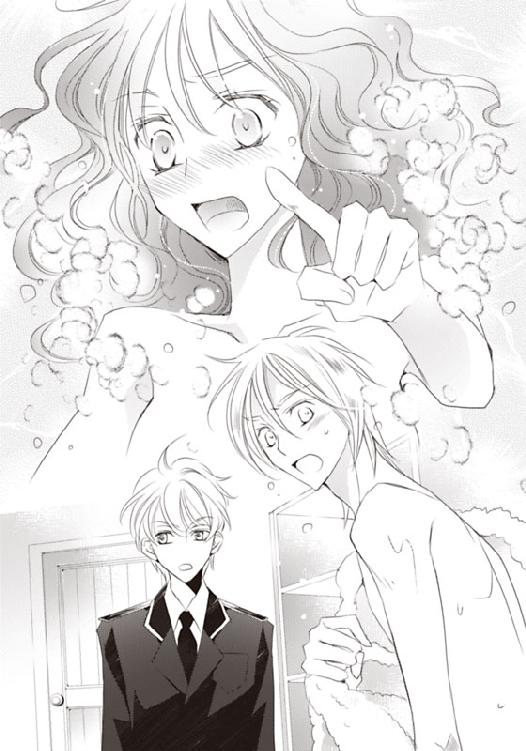
「きゃ」
「う」
まだエローラは全裸だ。泡が沢山ついていたけれど。
エルンストが言う。
「巨乳見せびらかすなバカ！」
「ぎゃああああああ」
扉が勢いよく閉められた。そして中でキャーキャー言う声とシャワーの音が響いた。
「......どうしたんですか」
「疲れすぎておまえが認識できてなかったんだろ。で、今認識したんだろ」
「......なるほど、大きいですね」
「何が」
「胸」
素直に感想を漏らすとエルンストが顔を手で覆って溜息を吐いた。
「かわいそうだから忘れてやってくれ」
「えっ、す、すみません」
「来い、来い、食事だ。腹に詰めとけ」
やれやれとエルンストはヴァーツラフを食堂に案内した。
少し遅れてエローラが濡れたままの髪をタオルに巻いて、バスローブ姿で食卓に着いた。
「あの、さっきは」
ヴァーツラフの顔を見ずにエローラが言う。ヴァーツラフもエローラの顔を見ずに言う。
「忘れますから」
「二人とも赤カブみたーい」
エルンストがエローラの前に赤カブのスープを置き、その上にサワークリームをどっさり載せてハーブ入りの塩を振りかけ、小麦粉を練ってゆでたヴァラーシュという主食を置いた。更に鹿肉の塊の香草焼きを取り分ける。
「あはああああおいしそうう」
エローラが顔を輝かせる。エルンストも座って、全員で食事をはじめた。
二人の食べる速度は速く、ヴァーツラフは驚く。
「おかわり」
「はい」
エルンストがスプーンを置いて手早くスープを盛りつける。
エローラはよく食べた。全ての皿をからにして、注がれたエールを飲む。
「ああああ！ よくはたらいたあああ！ おいしいいい！」
唇の泡を親指でぬぐって立ち上がる。
「じゃ、おやすみなさい」
「歯磨いて」
「ハイハイ」
あっさりそれだけでエローラは部屋に去った。
「......じゃ、僕も......」
「うん、おやすみ」
エルンストに送られて、ヴァーツラフは歯を磨いて部屋に行く。部屋の暖房はつけてあった。寝間着に着替え疲れたなとベッドに横になる。
ふっと眠りに落ちたら、その途端にベルが鳴り響いた。
「!?」
驚いて飛び起きると、ベルが鳴り止んだ。ほんの少しして、すぐにエルンストが呼びに来た。
「出動だ！ 行くぞ！」
「えっ」
「服は持って馬車で着ろ」
エローラはすでに装備を調え、濡れた髪のままで玄関外につけられた馬車に乗り込んでいた。
「髪凍るなーコレ」
タオルでごしごしと髪を乱暴にぬぐいながらエローラは言う。
エルンストに押されてヴァーツラフは馬車に乗った。
「乗って乗って乗ってネクタイあとでいいから」
「はい」
ヴァーツラフが乗ると、エルンストが乗り込んで扉を閉め、それと同時に馬車は出た。
「寝るね」
言ってエローラはヴァーツラフの腕に寄りかかって眠った。
「......！」
無防備に眠るエローラの身体の感触と、全裸を思い出してヴァーツラフは身体が熱くなるのを感じてしまう。がたがたと馬車は跳ねるので、エローラを押さえていなくてはならない。抱きしめるような形になってしまって、自分の鼓動が喧しい。
いい香りがした。
何日か経ったころ、エローラが言った。
デービッド退治の現場で、時間は夜だ。場所は街中の公園だった。
「だいたいわかってきたようね」
エローラの髪は少し焦げていて、服にも髪にも煤も炭も着いていた。
デービッドの中に巻き込まれていた黒色火薬が爆発したのだ。どうやら誰かが携帯していたものらしい。デービッドには効かないのに、護身用に物騒なものを携帯する市民はあとを絶たない。
ヴァーツラフとエルンストは離れていたので無傷だ。
目の前のデービッドはまだ回収できていない。防衛隊が張った結界の中で、ぐにぐにと動いているピンク色のゲルのプール。
「この事件だけ一人でやってごらんなさい」
偉そうにエローラは言って、後ろに下がった。
「はい」
ヴァーツラフは悠然と、前に出た。
支給されたヴァーツラフの杖は黒に銀だ。
エローラはエルンストが差し出したタオルで顔を拭く。
「怪我はないですか」
「ないと思う」
「どうして新人に任せるの」
エルンストがちらりと横目でヴァーツラフを見る。
「まあいいじゃん。けっこうできてきてるしさ。......ちょっとしんどい」
その言葉にエルンストは唇を引き結ぶ。
エローラはベンチに座ると夜空を見あげた。
「ああ、星が綺麗ね」
びゅるっと、一筋のデービッドが蛇の様に這ってエローラの足下に近づく。エローラはそれを見もせず、そのデービッドの先端に杖を突き立てた。
「無粋よ。人が星座を探してるのに」
「お見事、先輩」
いつの間にかヴァーツラフがいた。
デービッドのチャームを手にしていて、キン、と指ではじいてエローラに渡し、エローラはそれを受け取ろうとして外した。チャームがぽとりと膝の上に落ちてから地面に落ちた。
「ださ」
エルンストが言って、ヴァーツラフが笑った。
「なによ！」
エローラは顔を赤くしてチャームを拾うとエルンストに渡す。
「どうですか、及第点かな」
ヴァーツラフの言葉に、エローラは微笑む。
「まぁまぁね」
なんだかエローラは嬉しい。ヴァーツラフが誇らしそうだ。まるで初めてお使いを成功させた子供みたい。
「これくらい、いつでもできますよ。僕、一人でも大丈夫です」
その、偉そうな言い方とかも。
「あはは」
「なんで笑うんですか」
「言うと怒るから」
「なんなんですか」
「いや、げんきそうでよかったなーって」
「......は？」
ヴァーツラフは意味が分からず顔を曇らせる。
チャームをしまったエルンストが言う。
「はい次行くからね。旧市街の墓地です」
「はーい」
そう言ったエローラにヴァーツラフは自然に、貴婦人にするように手を差し出した。
「どうぞ」
エローラは驚いて目を見開き、それから手を取ってぴょんと立ち上がる。
「ありがと！」
えへ、と笑ったらヴァーツラフが変な顔をした。
「貴婦人ではないな」
「エローラちゃんだもーん貴婦人じゃないもーん」
「馬車乗って早く」
エルンストに促されて二人は馬車に乗る。
エローラとエルンスト、ヴァーツラフはそうやって、結構上手くやっていた。
そんな日々が二週間続いた。
ケンカもしたし言い合いにもなったが、致命的な仲違いも失言もなく、三人でのチームに連帯感や絆、それぞれの居心地のよさが、全員に届き始めた頃。
「最近どうよ新入り」
エルンストがシチューのおかわりを皿に盛りつけながらヴァーツラフに言った。
エローラはいない。
「......はい、死にそうです」
ヴァーツラフはこの二週間で四キロ痩せた。なにしろ眠る暇も怪しい。一番まとめて眠れたのは四時間だ。その分昼寝たが、昼は昼で色々雑務があった。
「肉食え」
「いただきます」
オーブンから取り出した熊肉をエルンストは切り分ける。そのころには皿のシチューはほとんどなくなっていた。
「よくこんなのでもちますねエローラさん。凄いドジなのそのせいなんですか」
「防衛隊も走り回ってるじゃん。僕らが到着するより早く着いて、外に漏らさないように結界張って、反応ビーズぶちまかして。デービッドが獲物を溶かしはじめるまで時間かせいでさ......」
エルンストはそこで黙り込み、ヴァーツラフに言った。
「おい、絶対デービッドにはとりこまれるな」
「......はい」
「誰がよくてもおまえはダメだ」
「え」
「エローラさんを守ってあげて」
エルンストの表情が悔しげに歪んだ。
「僕にはできないから」
ばん、とドアが開かれ、バスローブ姿で髪にタオルを巻き、げっそりしてやはり目が半分も開いていないエローラが現れた。
尻を椅子に叩きつけるように座って、
「ビールちょうだい」
と弱い声で言う。
出された瓶のビールを分厚いガラスのコップに注いで、エローラは喉を鳴らして飲み干す。その表情が不機嫌だ。
「どうしたんです」
「何がよ」
ヴァーツラフの顔を見ずにエローラが言う。
「不機嫌じゃないですか。何かドジでもふんだんですか？ いつものことでしょ？」
ふー、と息を吐いてエローラは苦笑する。
「まぁ、そんなとこかな」
乱暴にもう一杯コップにビールを注いで飲み干す。
「殿下さぁ、どうしてわたしだけにドジとか言うの」
「別にあなただけにじゃないですよ。思えば言います」
あれ、なんだ。僕絡まれてるのか。ヴァーツラフはそう思いながら、少し悪い気はしない。今までなかったことだし、甘えられている気がしたからだ。
「エルンストにはクソガキって言わないじゃない」
「思ってませんから」
「だいたい、帝王学受けてて人に悪口言うとかさァ。わたし深く傷ついてんだからやめてよね」
ヴァーツラフは少し考える。
確かにエローラ以外にこういう物言いはしないし、したいとも思わない。
横目でエローラを見ると、唇を尖らせ、つまらなそうにぶすくれている。
むらっと悪戯心が湧いて、口端を上げる。
「親愛の情ですよ」
「へえ」
意外に熱のない返事がきた。
「初対面からそうだったじゃない。あんたの親愛の情って簡単なのね」
ヴァーツラフはなぜか傷ついた。
気持ちに衝撃があって当惑する。
動揺した。
「あなたこそ、恋人でもない男の前でそんな格好で。ふしだらとは思いませんか。僕が恋人ならこんな人いやだな」
あっ、言い過ぎた。
と思った瞬間エローラにビールをぶっかけられた。
ガン、と音高く銅のコップが机に置かれる。
エルンストがなぜか心配そうな表情でヴァーツラフに言った。
「謝れ」
どうしていいか当惑したヴァーツラフだったが、横にいたエローラは立ち上がり怒鳴った。
「けっこうよ！ わたしだってあんたなんかとは恋人になんかならないもん！ 恋人なら昔いたしね」
その言葉にヴァーツラフはぽかんとしてしまった。
恋人。
このひとに？
なんだろう。
なにがこんなに。
「す」
「なに」
「すき、だった、ん、です、か」
「───はァ？」
「いや、その人のこと」
エローラの顔が驚きを浮かべて、それから、真っ赤になってぐしゃっと歪んだ。
「......あたりまえじゃん......」
「ふられたんですか」
「う、う、う、うぇええええ、うぇええん。もうヤダ、何こいつ」
な、泣かせた。
どうしよう。
あ、肩細い。
抱いて、引き寄せて、胸にしまって、頭を撫でて、抱きしめて、しまいたい。
その衝動のままに腰を浮かせたヴァーツラフに、エルンストが言った。
「ヴァーァアアツラフ。部屋行ってろ」
今度の声は氷の様だった。
「え」
だってこれから僕はこの人をだっこ。
と思うヴァーツラフに、エルンストが重ねて言った。
「部屋に行ってろ」
ひゅ、とレードルが空を切って、ヴァーツラフの鼻面に向けられた。
でも、と向けられたヴァーツラフの視線の先にふと止まったもの。
エローラの首元と胸元に、鬱血痕と歯形がいくつかあった。
心臓が止まりそうになる。
エローラはめそめそ泣いている。
動悸が激しい。
なんだ。
これは。
まさか。
「それ」
何を指しているのか、エローラは分からない風だったが、視線を追って理解すると、凄まじい速さでそれを隠した。
そして口元を押さえるとガタガタ震える。
「う」
「部屋に行ってろヴァーツラフ!!」
霹靂の様な声でエルンストが言って、ヴァーツラフは今度こそ駆け出した。
ビールがベタベタする。
着替えなくては。
シャワーを。
浴びて。
心臓がドキドキする。頭が痛い。不安で、ショックだ。
あれは情交の痕だろう。
しかもエルンストも詳細を知っている様子だ。
ヴァーツラフは風呂場に行って服を脱ぎ、シャワーを浴びる。
誰だ。
恋人か。
いや違うだろう。
今恋人がいるという口ぶりでもなかった。
そうでないなら誰だ。
なんなんだあれは。
そして自分はどうしてこんなに混乱しているんだ。
ドジで、ヘラヘラしてて、でも必死で働いていて、自分が登場するまで唯一無二だったコイン・ヴァライの守護天使。
行儀がわるくて、沢山食べて、ビールばっかり飲んで、ちっとも天使っぽくない。
口悪いし、すぐ怒るし、自分が好き放題言っても、本気で怒ったりなんかしていない。
誰に。
あれを。
誰が。
あの人の首筋に口をつけて吸って嚙んで舐めて触れて触って
考えたら目が眩むほど腹が立った。
恋人なら昔いたもの。
その恋人も、きっと。
「......」
シャワーの雨の中、ヴァーツラフは目を見開く。
なんだ。
どうして僕はこんなに腹がたって。
あのひとの。
首筋に。
身体に。
唇に髪に胸に肩に背中に、足に爪先にもっと奥に奥に奥に。
誰かが触れたことがある、だと。
今も？
頭の芯が燃えるようだ。
臓腑が煮えたぎる。
なんだ、コレは。
シャワーを止めて、外に出ると乱暴に身体を拭く。
持って来た服に着替えて、両手で顔を覆って息を吐く。
（あんなに、屈託のない、いきいきと笑うおんなのひとは僕にとってはじめてだ。やすらかな楽しい気持ちで言葉を交わせるのも）
宮廷では誰も彼も澄まして、品よく、腹と口に毒針を忍ばせて、遠回しな嫌みと地位への魂胆と。
褒められても、好意を示されても、嬉しくもなかったし、こちらが思ってることを言おうとも思わなかった。
女なんか穢らわしい。
男はもっとだ。
何人かの信頼する人間は居る。
何人かには裏切られた。
何人かは裏切っていない。まだ。覚悟はしている。
......だって、自分はそういう立場の人間なのだからもうしかたがない。
この先誰かとつきあって、結婚するとして、その女だってきっとそうだ。
でも、どうしてエローラは違うんだろう。
そして、どうしてその人が、自分がつける以外のあとをつけているんだろう。
誰が。
どうして。
外に出る。
食堂で電話が鳴って、話し声がする。
扉が開いて、肩を落としたエローラが出ていく。バスローブのままで。その姿は酷く小さかった。落とした細い肩。
エルンストは食堂に残って洗い物をしている。
エローラはとても、とても小さくて頼りなく見えた。
なにかあったら大変じゃないか。
一人で行かせるわけにはいかないだろう。
あとで考えたらそれは紛れもなく言い訳だった。
声をかけようとした瞬間に、エローラは今までヴァーツラフが気にもしていなかった扉を開けて中に入って、閉めてしまった。
ヴァーツラフは慌ててあとを追い、そっと扉を開けた。
中にエローラはいなかった。地下への階段があって、そこから薄く灯りが漏れて遠ざかる足音が聞こえた。
ヴァーツラフは足音を忍ばせて階段を下りた。
壁はつめたく湿気ていて、灯りは壁に埋め込まれた電球だった。
長く伸びる黒い影が濃かった。
暫く歩くと、声が聞こえた。ヴァーツラフは壁に張りつき、耳に神経を集中する。
「......申し訳ありません......」
「......いいのよ、もちろん......わたしがやんないでどうすんのよ」
「一人、護衛隊の搬送が遅れて......」
「いいって。あは。それより、さっきのみたいなのはごめん、ちょっと......しんどいんで......お願いします......」
「はい、それは」
「じゃ、はじめよう。みんなも疲れてるでしょ。連れて来て」
ヴァーツラフはじり、と進んで部屋の中を見る。
部屋は、壁中にマットレスが張り巡らされ、床には毛足の長いラグが敷いてある。部屋の真ん中に丸い天蓋付きの大きな椅子がある。天蓋からは繊細なレースが垂れ下がっていた。天蓋を囲むように電球がつけられて、レースの模様を影にして部屋を彩っていた。
椅子は白くて大きく、背もたれがついていて、そこに座ったエローラが埋まってしまいそうだった。
エローラはうすいドレスに着替えて、布を一枚肩からかけただけの格好で椅子に座っている。
部屋はあたたかい。
エローラの身体には傷痕があって、戦いの日々を示していた。靴も履いていない。
子供のように足をブラブラさせて何かを待っている。
周囲には制服を着た男たちが並んで微動だにしない。
やがて、制服を着た男たちに連れられて、防衛隊の制服を着た男たちがふらふらとやってきた。五人ほどだ。
全身が震えていて浅く息を吐いている。そのままラグの上に座らされ、おお、と苦しそうな息をもらした。
ヴァーツラフも知っているし聞いている。
デービッドの能力のひとつに催淫がある。
デービッドに取り込まれると、淫らな気分になってそれしか考えられなくなるという。
当然戦闘能力も落ちるし、逃げることも叶わなくなる。
なんて趣味の悪い、とヴァーツラフは思うが、実際そうなので仕方がない。
男たちの様子を見てぞっとする。
なんてみっともないんだ。
エローラは椅子から下りると、防衛隊の男の前に座って、手を両手で取った。
「おつかれさま。ありがとう」
男の手を、エローラは自分の胸元に押しつけた。
男はびくんと身体を震わせ、やがて呼吸が落ちついていく。
全身から力が抜けて、楽そうになった。
「よく休んでね」
「エローラ様、......ありがとう......ございます......」
感涙にむせびながら男は立ち上がり、別人のようにしっかりとした足取りで去って行く。
次の男の前に座って、エローラは同じようにした。
なるほど、エローラにはデービッドを封印する力があるのと同じように、デービッドの毒を人から取り去る力があるのかと納得する。それはどうやら肌と肌を合わせることで叶うようだ。
異変が起こったのは四人目だった。
男はがたがたと震えていたと思ったら、突然エローラに飛びかかった。
「きゃああ！」
エローラはなすすべなく押し倒され、脚を身体で割り開かされた。
男は獣のような咆吼を上げエローラにのしかかったが、周りの男たちがよってたかって引き離し、部屋は怒号に満ちた。
エローラは床に座り、ガタガタと震えていた。女性隊員が駆け寄る。
「エローラ様！」
「だいじょうぶ！」
エローラは顔を上げられないまま叫んだ。
「大丈夫だから！」
それは自分に言い聞かせているような痛々しい言葉だった。
「お、お、お、落ちついたら、あのひとだって、ふ、ふ、ふつうだもん。いいひとだもん。大丈夫だもん」
なんとか笑みを作ろうとして、エローラは失敗していた。
ヴァーツラフは見てはいけないものを見てしまった気がして、そっと後退した。
足音を立てないように階段を上がって、もとの小部屋に戻る。
扉を開けると、そこにレードルを持ったエルンストがいて、心臓が止まりそうに驚いた。
「説明が必要か？ 覗き野郎」
「......すみません」
エルンストは返事をせずに、食堂へ向かった。
「ホットビールをつくってあるから」
大人しくついていき、食卓に着いたヴァーツラフに、エルンストはホットビールを出した。
ビールを温めて、シナモンや果実、砂糖を入れて煮たものだ。
飲みながらヴァーツラフは言う。
「エローラさんは、いつもあんなことを？」
「他にできるひとがいないから」
「僕は」
「できても、させられないでしょ、王子様には」
エルンストが肩をすくめた。
「知ってるだろ、デービッドに取り込まれたらどうなるか」
「はい」
伊達にいやらしい色してるわけじゃないんだよね。
指導役のあの課長は言った。
催淫効果があるんだ、デービッド。
とりこまれたらだめだよ、強姦魔になりたくないでしょ？ 自制がまるできかなくなるわけでもないんだけどさ。個人差はあるんだけど。
苦しいもんだよ。
本能だもんねぇ。
「......エローラさんが触ってあげると落ちつくんだけど。時々、......なんていうか。止めきれないことも、あって」
エルンストが苦々しく言う。
「......エローラさんは、イヤじゃないんですか」
「イヤだろうけど仕方ないじゃんよ」
ヴァーツラフは思い出す。
微笑もうとして微笑めていなかった顔。
大丈夫だもん。
真っ青になって。
がたがた震えて。
大丈夫だもん。
ヴァーツラフは椅子を蹴倒す勢いで立ち上がると、扉に向かって走りだした。
「おい、新入り！」
エルンストの声を背中に聞いたが振り返らない。ヴァーツラフは扉を開け、もはや足音が響くのも構わず階段を駆け下り、天蓋の小部屋へとたどり着いた。
そこにいた全員があっけにとられてヴァーツラフを見た。
エローラもだった。
ヴァーツラフは足を止め、憤りか怒りか、それとも別のなにかでか鼻息を漏らすと、全員の顔を見ながら歩いて、レースの天蓋が飾る椅子にどっかと座った。
エローラは床に座っていて、男の手を取り、胸に当てていた。黒い瞳が見あげている。
「それ、やめてくださいエローラさん」
鼻に皺を寄せ、行儀悪く脚を組んでヴァーツラフが言う。
「......な、何いってんの......っていうか何しにきたのあんた」
エローラが茫然と言う。
ヴァーツラフが笑う。青い花の様に。
「あなたに出来ることは、きっと僕にだってできます。あなたみたいなドジでマヌケは、部屋に帰って湯たんぽ抱いて寝ててください。ホットビールがあるそうです」
「.........お、おっ、王族の、ひ、ひとに、こんなことさせるわけには、いかないでしょ、さすがに」
ヴァーツラフはエローラを見下ろした。
「同じことができる僕がいる以上、女性にこんなことをさせるわけにはいきません。これは差別ではなくて、いいですか。女性を大事にしたいと、細やかで、やさしくて、温かく包んでくれる、女性というものを、」
エローラのいつもの笑顔を、ヴァーツラフは思い出す。
屈託がなくて子供みたいで親しみやすくて可愛らしくて愛らしい、エローラの。
「あなたの笑顔を守りたいと僕が思うからするんです。そしてそうしなくてはならない！ 必ず。男としての矜持に関わることです」
王族として？
あいつらが言いそうだ。
宮廷の。親族ども。取り巻きども。母親。
あなたのなさることではありません、王子。
「王族にこんなことをさせられない？」
腹が立つ。
「生まれて初めてこの言葉を遣います」
怒ってはなりません憤ってはなりません、下賤のものと同じことをしてはなりません。
なにを言うか。
女性ひとりにこんなことを押しつけてふんぞりかえって、何が王族か。それは王族でも男でも人でもなく、下衆か馬鹿というのだ。
「クソくらえだ」
壁際に並んでいた職員たちが驚いて息を呑んで、それから笑った。
ヴァーツラフも愉快になった。
「ほら、エローラさん。甘いホットビールを飲むんですよ。そんなヒラヒラした服じゃなくて、いつものあなたのだッさいパジャマを着て、胸元までボタンをしめて、室内マフラーをして、ラベンダー入りのクリームを手足にすり込んで寝るんです」
エローラは真っ赤になって、ヴァーツラフを見ていた。
ヴァーツラフは脚を組むのをやめ、手を差し出した。
「今日はお疲れ様でした。明日もがんばりましょう」
エローラが動かないので、手を取って立たせる。
女神を崇めるように見あげてヴァーツラフは誇らしく、有無を言わせず言う。
「おやすみなさいエローラさん。あとは僕がやります」
エローラは子供の様な顔で立ちつくしていた。
ああ、泣きそうなんだな、とヴァーツラフは思う。
いいのに。
あなたを助けてあげるんだ、僕が。
それはなんてうれしいこと。
いつの間にかいたエルンストが言った。
「ホットビールが冷めるよ、エロさん。蜂蜜入りだよ」
それを聞いて、エローラは頷く。
それからぴょこっと頭を下げて小走りに部屋から出て行った。
エローラの気配が消えてから、ヴァーツラフはまた脚を組んで、指を動かして骨を鳴らす。
そして口の端を上げて言った。
「じゃんじゃん連れてきてください。片っ端から浄化します」
「......よろしいんですか殿下」
誰かが言った。
「はい」
ヴァーツラフはうっそり微笑む。
「何しろ僕は有能ですので」
部屋の中にしばしの間、柔らかな笑いが満ちて、それから声がひとつになった。
「ヤーハイディア！」
その次の日は幸い朝まで出動はなかった。
よく晴れた、気持ちのいい朝だった。
ヴァーツラフは、ぼんやりとベッドから抜ける。
「た、たしか、に」
しんどいなこれは......。
と一人で呟く。
身体の芯に毒が残っているようにずしんと重い。
だが、動けないわけではない。
昨夜はあのあと結局六人連れてこられた。両手でごしごしさわってやって、男同士のハグをしてやり、スッキリした顔の防衛隊の一人が、
「ありがとう王子。でもなんでエローラさんじゃないんだよ！」
と言ったので、なんだか腹が立って軽く殴ってしまった。
「まあ、これでエローラさんの負担が減って、怖い思いさせないんなら助かるよ」
頭をさすりながらそう言われて、苦笑する。
「まかせといてください。案外僕は腕力もあるので、不埒な人は叩きのめせますから」
浄化が終わったあとは、そこにいた全員に肩を叩かれ、礼を言われた。
正直とてもいい気分だった。
だが、今朝の体調は最悪だ。
「あのひとこれ一人でやってたのか」
溜息を吐く。
凄まじいだろう、これを、九年？
夜昼なくかけまわってデービッドを退治して回って。
「......すごいひとだな」
心から感心して言う。
ノックの音がする。
エルンストかなと思って、ぼさぼさの頭を搔きながら返事をする。
「はい」
「あのぅ」
もじ、と入ってきたのはエローラだった。
ぶっと吹き出しそうになった。自分は寝起きでパジャマだし髪はぐしゃぐしゃだし顔も洗っていないし。
エローラは室内着らしい膝丈の黒のワンピースを着ていて、その上からフリル付きの白のエプロンを着ている。髪をまとめていた。そんな格好を見るのははじめてだったので、ヴァーツラフは凝視してしまう。
なんだかわいいぞ。
「あの、ヴァーツラフ、ありがとう。きのう。久しぶりにわたしゆっくり休めた......で、ほら、私わかってるから、しんどいの。あさごはんもってきたのね」
言うとエローラは慌てて外に出て、ワゴンを押して、中に入ってくる。
「毎朝じゃないからね！ たまにだからね！」
そしてワゴンをベッドの横に置くと、自分もベッドの上に座り、スプーンを取ると皿のオートミールを掬って、ふーふーと息をかけて、
「はい、あーん」
と口元に差しだしてきた。
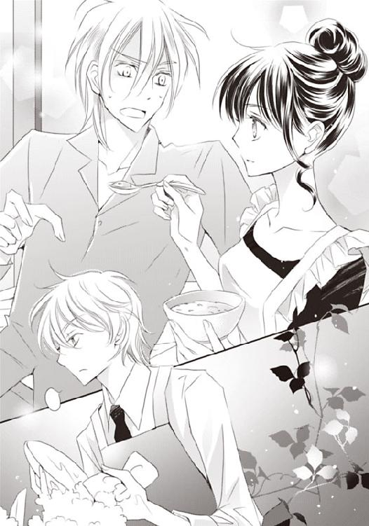
なっ。
なんの。
なんのつもりだ。
なんのつもりだ。
「どうしたの？ 顔赤いぞ？ 熱でもある？」
言ってエローラはヴァーツラフの額に自分の額を当てた。
「ギァアアアア!! 先輩!! 先輩助けて!! エルンスト先輩イイイイ！」
ヴァーツラフはなぜ自分が叫んでいるのか、なぜ全身が熱いのか、鼓動が激しくて心臓が口から出そうなのかわからないまま叫び続けた。
食堂のエルンストは、皿を洗いながら半目でつぶやいた。
「あいつもバカだな。あーあー年下なんてつまんないなー」
窓の外に小鳥がいて小枝に止まったら雪が落ちた。
第二話 エローラの元カレ
マンディラ河の氷がぎしぎしと鳴り出して、昼が長く、晴れの日が多くなる。
まだ春ではなかったが、予感がしはじめる。それはヴァライの者にとって、心ときめくことだ。
その光の入る食堂で、エルンストがぼそりと言う。
「......なんか最近」
食堂には寝椅子がある。
大抵はエローラが寝っ転がって足を放り出してファッション雑誌を読んでいる。
雑誌から目を離さずに呟かれたエルンストの言葉に、ヴァーツラフが山になった各国語の新聞を読みながらちらりと視線だけを向けた。
エルンストは続きをなかなか言わず、エローラはつま先で逆の足のすねをぼりぼりかきながら雑誌をめくった。
ヴァーツラフも先を促す訳でもなく新聞をめくっていく。
「なんか最近、なんであんたたちずっと食堂にいるの」
ジャガイモの皮をむきながらエルンストが言う。
「暖房が壊れたんですよ。寒いからです」
そういうヴァーツラフが座っているのも一人がけのソファだ。
本部で不要になったのをもらって、食堂の壁に背をつけるようにして起き、最近は寝る以外、出動の時以外、エルンストが火を落として部屋にこもる時以外、ヴァーツラフは食堂にいるようになっていた。
「わたしは別に、便利だから」
エローラが耳たぶをもみながら言う。
「便利？」
エルンストが嫌そうに言う。
「のどかわいた。なんかない？」
「......ビールでも飲めば」
「ヤだーエルンストもってきてよぅー」
「そういう便利かよ。そのでかいケツたたくよ？」
「えへへ、なんて、じょうだ......」
ヴァーツラフがするっと立ち上がり、戸棚からビールを取ると栓を抜いて、銅のコップに注いで渡した。
「どうぞ」
「......あっ......どうも」
エローラが起き上がり、照れくさそうに受け取って、ソファの座面に足を乗せたまま受け取って口をつける。
ヴァーツラフも少し照れくさそうに何か口の中で言って、また座って新聞を読み始めた。
エルンストが手元も見ずにナイフをさばいてジャガイモをむく。
視線はなにかぎこちない二人に向けられている。下唇を突き出して言う。
「ね、出かけてきて」
「え？」
エローラは雑誌から目を離して驚いて言うが少し考えてまたソファに沈んで、雑誌を読むふりをして顔を隠して言う。
「やだ寒い」
「二人で」
びたっとエローラとヴァーツラフの動きがとまった。
部屋の中はストーブの燃える音と、ジャガイモの皮むきの音しかしない。
今なら二人の雑誌と新聞が逆さまでも二人とも気がつかないだろうな、とエルンストは思いながら言う。
「教会横の市場に行ってきて。カルダモンがもうないの。あれば果物。なければ干したの。ナツメがいいな。玄関横のかごにお金入れてあるから行ってきて。呼び出しかかったら鐘鳴らすから」
「え、えっ、でっで、も、寒い......」
完全にもじもじしながらエローラが言って、ヴァーツラフは固まったままだ。しょうがねぇなぁとエルンストは思う。
「あんたのアザラシみたいな皮下脂肪は何のためについてるんだよ」
「そんなにデブじゃないわよ!! 失礼ね!! 失礼ね!!」
「じゃなんで寒いのに、そんな膝から下出した服着てられるんだよ」
「いーじゃない、ひらひらしたスカートぐらいはきたいわよわたしだって！」
「じゃあひらひらしたスカートはいて買い物行ってきたら」
エローラはぐっと詰まった。
「そ」
「そ？」
「外に出られるような服もってないもん......昔のばっかだもん。ずっと、忙しかったからさあ」
ごそりとつま先を重ねてエローラは言い、ヴァーツラフの目は相変わらず紙面を追っていない。
エルンストはあえて黙り込んでみた。
しばらく経って、なにか言おうとした二人よりわずかに先にヴァーツラフが言う。
「買いに行きましょう」
その言葉にエルンストが驚いて目をむき、手の中からジャガイモが転げた。
「っえーひとりだとめんどいー」
言葉の意味に気がついていないエローラが雑誌を放り出してソファに寝そべる。
「友達と連絡とるったって、わたし友達いないしー。全然街に出てないからわかんないしー。せいぜい雑誌見てそんな気になってるだけのがお似合いよ。ふんだふんだ。なによ、つまんない人生ね。ふんだふんだ」
「何のための情報雑誌なんですか。せっかくの情報がかわいそうだ。なんでもいいから服を着て町に出て、最初の店で上から下まで揃えたらいいじゃないですか。金は」
「あるわよ。使う暇ないもん」
「では問題ないじゃないですか。三十分で出ましょう、僕も支度しますんで」
「へ」
ようやくそこでエローラも理解した。ヴァーツラフは新聞をたたんで立ち上がり、新聞を抱えると部屋に戻る。
「先輩、洗面所使います」
廊下から声がして、エルンストは答える。
「あっ、あ、うん」
なんとなくエルンストとエローラは顔を見合わせる。
二人とも大きく目を見開いたままで。
「なんだ」
とエローラ。
「なんだなんだ」
とエルンスト。
「なんだなんだなんだ」
とエローラ。
「いや、一緒に買い物行くって」
二人とも黙り込んでから、エローラが言った。
「ええええええ」
エローラはソファに倒れた。
ハッ、と肩を揺らしてエルンストが笑う。
「デート？」
「はぁぁああ!? まっさっか！ つまんない冗談だそれ」
「まぁねぇー。でもまあ確かに、服ないから云々っていって、小金ため込んでるだけでもしかたないぜ」
「まぁね。ましてやわたしなんか老後とか」
エローラの鼻先をかすめてジャガイモが飛んで、壁に当たって砕けた。
「うわ何するかな！」
エルンストはナイフをジャガイモに刺すと憤然と立ち上がり、水道を出して頭を突っ込んで何か叫んだ。
エローラは止めようとしたが、やめた。
刺すようにつめたい水流の中でエルンストは叫び続け、エローラはすっと立って脱衣所に行くと、棚からバスタオルを取った。脱衣所の隣の洗面所で、髪を整えていたヴァーツラフが訊く。
「どうしたんですか」
エローラは平然と答えた。
「まぁ、気にしないであげて。ああ、すぐ行くから私も」
エローラは食堂に戻り、エルンストの横に立って待ち、やがて切れるようにつめたい水の栓を止めてやる。
エルンストはがちがちと震える歯を食いしばる。
「お湯にしなよ、こういうの」
言って、エローラはバスタオルでエルンストの頭を包んで抱きしめた。
「巨乳が当たってきもちわるい」
くぐもった声がした。エローラはもっと抱きしめて頰をよせる。
「ごめんね」
「きもちわるいっていってんだよ」
「......あんたが泣き止むまで離れないから」
「泣いてないから」
「悪かった」
「そんなこと言ってんじゃない」
「わかってる」
エローラはエルンストを抱きしめる。きつく。
少ししてから、エルンストは息を吐いた。
「......もう大丈夫」
エローラは力を緩めて離れた。
エルンストは自分でごしごしと頭を拭いて、真っ赤な目で笑った。
「あなたには、桃色や赤の、鮮やかな色が似合うよ。買ってきて、おれに見せて」
そう言ってエルンストは子供のように少し恥ずかしそうに肩をすくめた。
「いってらっしゃい」
重たいコートに身を包み、マフラーに埋もれ、防寒用の毛皮の帽子をかぶったエローラは、なるほどいかにも野暮ったかった。
対するヴァーツラフは今年流行のウールのすっきりとしたコートとマフラーで、帽子も洗練された形で縁には刺繡飾りがしてあった。
「こくみんの！ けつぜいで！ おしゃれして！ 何よ！」
きぃ、とエローラは言ったが
「流行遅れの野暮ったい服着た王子を擁するよりましでしょ」
と言われ、
「そらそうだわね」
とあっさり矛を納めた。
重い雲の切れ間から青空がのぞき、先週よりつめたくはない風が枯れ枝をしゃらしゃら揺らして過ぎる。足下を子供たちが笑いながらかけていく。
ヴァライの町は煉瓦と石の建築で、古い時代からの壮麗な建物が多く残る。常緑の垣根には、奥方たちの作った飾りがつけられている。色の少ない冬に、それは目を楽しませる嬉しさだ。
少し歩くと市街地に出る。
大きな通りを馬車が行き交い、自動車も少々走っている。馬が落としていく糞を、制服を着た市の職員が片付ける。
彼らは治安の維持にも一役かっていて、その目の覚めるような青い服は、人通りの中で頼もしい。
ヴァライにはやたらと彫刻がある。
モチーフは様々だ。
植物、神話、人物、自然、幾何学、抽象、何でもござれだ。
高級な商店の並ぶ通りの一番目の店には、真珠と海と貝と人魚のレリーフが、大きな柱に刻まれている。
「えっここ入るの」
足を止めるエローラに、ヴァーツラフは唇を尖らせる。
「最初の店はここでしょ」
「イヤ、わたし来るときたいていしまってるからさ......入ったことないからさ......なんか、えっ場違いって言うかびびるんだけど......」
「......デービッドは？」
「は？」
「こわいですか」
「いえぜんぜん」
「洋服屋は人を溶かしたりしませんよ」
「そりゃそうだろうけど」
「めんどうくさいな」
ヴァーツラフはそう言うと、エローラの身体をひょいと抱き上げて小脇に抱えた。
「ちょっとヴァル、なにやってんのよやめて降ろしてこら」
「ヴァル？」
「あんた名前長いよ」
「......まぁいいですけど」
エローラは諦めて脱力する。
帽子が道に落ちた。
「降ろして」
「まぁついでですから」
「帽子」
「新しいの買ってあげます」
言ってヴァーツラフはエローラを抱えたまま店内に入った。
店内は静かで、穏やかな光に満ちていた。
塵ひとつ落ちていない幾何学模様の絨毯を踏んで、ヴァーツラフはエローラを降ろした。
「ひどい顔」
ヴァーツラフは笑いながら指でエローラの髪を払ってやる。
「ひどくしたのあんたじゃん」
店の奥からスーツ姿の男がやってきて微笑む。
「ようこそ。どんなものが必要でしょう。または、ごらんになるだけで楽しみますか？ どちらでもごゆっくり！」
ヴァーツラフは男に言う。
「彼女に、季節にあった美しい服をいくつかお願いしたい」
「おや！ これは、救国の守護天使殿ではないですか！ そしてこちらはヴァーツラフ殿下だ。光栄ですな、ようこそ！」
青い目を大きく見開いて、店員は嬉しそうに声を上げる。
「やーはは、すみません、なんか」
エローラが言い、店員はなにも言わずに上から下までエローラを見て、両手をぽんと合わせた。
「お任せ下さい。ヴァーツラフ殿下は少々お待ちを」
「ええ」
店員はエローラをエスコートして店の奥に行き、やがて戻ってきてヴァーツラフに椅子を勧めた。
店内はいくつかのマネキンが飾られているだけで、商品は奥に在るらしい。
ヴァーツラフは椅子にかけると、女性店員が持ってきた紅茶を香りから楽しんで口に運んだ。
「女性を待つ間、話を聞かせてもらってもかまいませんか」
「はい、殿下」
「報道でご存じかと思いますが」
「はい、殿下。あなたが救国の守護天使の片翼とおなりなのは存じております。ですが、殿下は殿下ですので」
面倒だな、と内心思いながらヴァーツラフは言う。
「......市井に下りたと言っても、ずっとデービッド退治ばかりで、市民の生活に触れられていないのです。国境封鎖以来如何です、暮らしは」
「ええ、殿下。我らヴァライの者たちは、ヴァライ国外に出ることができません。デービッドの贄となれとの大国共の仰せです。国境の物々しい封印陣ときたら滑稽きわまりないですな。まぁ代わりに物資は潤沢に流れ込んできますがね。おかげで生活は豊かです。いつデービッドに襲われるかという恐怖と引き替えに」
店員はそう言うと、ふ、と息を吐いて続けた。
「けれどそれとて、仕事を失うという恐怖と比べていかほどのものかとも思うのですよ。もう一年も経たずにデービッドが消える。そうしたら私たちは自由にどこにでも行けて、そしてすべての経済的な支援を失う。正直不安ではありますが......」
店員は言葉を切って微笑む。
「......救国の天使を、一人の女性に戻して差し上げるというなら、それはそれでよろしいのかなと。個人的には思っております」
ヴァーツラフは視線を落とし、瞬きをして言った。
「なるほど。聞かせてくださってありがとうございます。......これ以上国民を欠けさせることなく、その日を迎えることができるよう、力を尽くします。八月十日を楽しみに」
「八月十日を楽しみに」
それはヴァライの民の合言葉の様になっていた。
デービッドが消える日だ。
「さて、そんなわけで殿下。最高級のツイードのコートが入荷しております。よく合うヘリンボーンの上下も。それにカシミアの薄手のセーターなどいかがでしょう。高襟で温かいですよ。それに、紫色の手袋。この紫色がなんともすばらしいのです。鹿革製でして。更に、少し変わった形の靴と、端にぶどう蔓の模様がある美しい灰色のマフラーは？」
言われてヴァーツラフは興味をそそられ、眉を上げる。
「......拝見しましょう？」
結局ヴァーツラフが新しい服を一式着込んで、簡単に髪を整えた頃、ようやくエローラが出てきた。
「ゲッなんであんたまで服買ってんの」
「給料が余ってますから」
振り返ってみて、ヴァーツラフはほう、と息をもらす。
黒のベルベットに赤い花の刺繡された、襟の詰まった長袖のドレス。重い生地の赤いフリルがそこここにあしらわれ、動くたびに揺れる。足下は膝丈のブーツで、コートはモーヴピンクに黒のリボンがあしらわれた今年流行のゆったりしたケープのついた形だ。薄いアンゴラのマフラーは真っ白だ。
それらはよくエローラに似合い、エローラはとてもかわいらしかった。
かわいい。
と言おうとして何となく唇をひき結ぶ。
顔が熱くなるのが分かった。
とてもかわいらしいですよ、と言おうとした瞬間にエローラがヴァーツラフに向かって歩き、そして転んだ。
「いだっ」
「......なにやってんですか」
「ヒールが、ヒールが」
「いっつもブーツで飛んだり跳ねたりしてるじゃないですか」
「そうなんだけど」
若い男性の店員が慌てて駆け寄り、しゃがんでエローラを助け起こす。
「大丈夫ですか、救国の天使」
「やだぁその言い方やめてくださいな」
エローラは転んだままえへへと笑う。
「え、では」
「エローラって呼んで」
照れくさそうにエローラは笑い、店員が目を瞬かせて、真っ赤になった。
「え、えっ、エローラ、さん」
「はい」
「どうぞ、お手を。......あ、肩に、お摑まり下さい。失礼でなければ補助をして」
「あら、ありがとう」
エローラが手を伸ばして肩に摑まろうとする。店員がその脇腹を抱えて立たせようとする。
それを見たヴァーツラフがエローラの手を強引に取って無理矢理立たせた。
「ギャッ」
「そんな、毎日転んでるんだから平気でしょう！ 支払いをします、おいくらですか！」
店員は名残惜しげに伸ばした手を無理にひっこめて微笑んだ。
「お代はけっこうです」
「えっ」
二人一緒に声が出た。
「守っていただいておりますので。お二人からお代などいただけません」
その言葉に、エローラの視線が下がり、苦笑する。
「......えー......いや......そんな......」
そして呟く。
「ごめんなさい」
ヴァーツラフはその言葉に違和感を覚える。
守りきれていない、という気持ちなのだろうか。
だから謝るのだろうか。
なんだか、そうでもないような気がした。
店員全員の見送りを受けて、二人は外に出る。荷物は教会に届けてくれるそうだ。
ぽかんとしたような昼の街の空気に慣れなくて、二人はなんだかぼんやりする。
「ああ、あの」
エローラが言う。
「なんですか」
「それかっこいいわよ」
「......はぁ」
エローラは少し歩いてから言う。
「わたしは？」
ヴァーツラフは何を言われたか分からない。
「え？」
「かわいいとか」
「え」
「きれいとかないのかな......」
言いながらエローラの視線が落ちていく。
「......まぁいいんだけどさ」
かわいいと、さっき心底思ったのに。言おうとしたのに。あなたが転がるから。それで、あの店員を近くに寄らせるから。
だから言ってやれないんじゃないか。
あなたのせいじゃないか。
「あーあー。彼氏でも作ろうかなちやほやしてくれるひと！ 私のことかわいいね偉いね美人だねステキだね愛してる大好きだって言ってぎゅってしたりちゅってしたりしてくれるひと！」
それを聞いてヴァーツラフの足が止まる。
あまい言葉を言って。
抱きしめて。
キスをして。
その先まで。
エローラの身体のことなら知ってる。
見た。
あの身体の全部に触れて、全部にキスして。
誰かが？
腹の底がぐらっと沸いて頭の奥が白くなる。
「い」
「ん？」
「いないよ、そんなひと」
エローラの足が止まる。
振り向かない。
ヴァーツラフはどうして自分がそんなことを言ったのか分からない。
少ししてから、エローラは歩き出した。
「知ってるもん」
強がったその言葉が痛々しくて、ヴァーツラフはしまったと思う。
エローラは振り向かないで歩いて行く。
その小さな背中。
僕は何を言ってるんだ？
ヴァーツラフは立ちすくむ。
エローラはどんどん歩いて行く。多くはない通行人に紛れそうになる。
どんどん離れていく。
焦るような気持ちが突然襲ってきて、ヴァーツラフは言った。
「エローラさん！ あの！」
こんな往来で大きな声を上げるとか。そんな行為は王室の一員として。
頭の中で誰かの声がした。
うるさい知るか、傷つけてしまった。
すみませんでした、あなたはきれいです、でも、
そのあとの言葉が形になる前に猛スピードで馬車が走ってきて、止まった。
そのやかましい車輪の音に気を散らされる。
「ヴァル！ エロさん！」
バカッと扉が開いて、乗っていたのはエルンストだ。
エローラが駆け戻ってきた。
「どうした!? 鐘鳴ってないよ!?」
「どうしました」
「緊急事態だ。急いで馬車に乗ってくれ」
エルンストが険しい顔で言った。
三人を乗せた馬車は、王宮へと向かった。
出動の時とは違い、車輪が外れる勢いで走らない馬車は、中で話ができる。
「王宮から電話があってさ。今夜舞踏会やるからヴァルとエロさんで来てほしいって。っていうか来いって」
「ヴァル呼び定着なんですか」
「エロさん定着なの？」
ヴァーツラフとエローラにそれぞれ言われたがエルンストは無視をした。
「なんだか急な決定で申し訳ないけどとか言われたけど、まぁ、ねぇ王宮のやることってたいてい上からで交渉の余地ないしね」
「ヴァル？」
「エロ？」
「それで、エロさんのドレスとかね、大急ぎで用意するから今から来てくれって。ヴァルのはなんかすでにあんでしょ実家だし」
「ヴァル？」
「エロ？」
「せっかくの休日だけど、なに？ あんたたちケンカしたの？ 険悪じゃない」
顎をあげてニヤニヤ言われ、二人は同じように鼻に皺を寄せて言った。
「別にっ」
フン、とエルンストは鼻を鳴らす。
「仲のいいことで」
「どこが」
また二人同時に言ってしまう。
片眉だけ上げてやれやれとエルンストは手を振る。
そしてエローラを見て嬉しそうに微笑んだ。
「エロさん。その服すごくすてきだね。よく似合うよ」
「えっ、あっ、ありがとう......少し、恥ずかしかったの。自信なくて......新しい服久しぶりだしさ」
「忙しいもんね。あなたはえらいよ」
「エルンストだって！」
「おれたちは偉いよ実際。うん。まぁそんなわけで王宮に行ってもびびる必要もないからね」
そう言うエルンストの指が震えている。
ヴァーツラフがそれを見て言う。
「......王宮、初めてですか」
「任命式とかは行ったかな、一回。忙しいもんおれたち」
「え、ちょ、ちょっと。舞踏会に出るんですよね、エロさんも、エルンスト先輩も」
軽く身を乗り出して、ヴァーツラフが言う。その表情が焦っている。
「いきなり言われたってさ」
エローラは不安そうに眉をよせた。
「踊れますか、二人とも」
二人は身を乗り出して首を横に振った。
ヴァーツラフはぐっと息を詰まらせ、動揺を抑えようと曖昧に手を動かしてから口元を撫でた。
「よし、こうしましょう。まず王宮に行ったらステップを教えます。いいですか、死に物狂いで覚えてください。身支度には特にエロさんが時間がかかると思いますが、早くするように言っておきます。舞踏会は一曲踊れればなんとかなりますから。いいですか、ばんばん誘われるとは思いますがこう言うんですよ、踊りたい曲がありまして、その曲がかかりましたらお相手いたします。一曲だけ！ 一番簡単なのを教えます、いいですね」
「踊れないとそんなにヤバイの」
エローラが声を潜める。ヴァーツラフも声を潜める。
「ヤバイです。周り中誰もなにも言いませんが、ものすごいつめたい空気になりますよ」
「......え」
「教えますからがんばってください。恥をかかせたくない」
「はい先生！」
エローラとエルンストの声が合う。ヴァーツラフはうなずいてから言う。
「それで、どうして今日舞踏会なんですか」
エルンストが答えた。
「なんか、客の希望だって」
エローラが呟く。
「......外国から誰か来たのかな」
「ハッ。来るわけないじゃん。デービッドに溶かされる可能性あるのに。万が一来たとしたらおれたちがガードにつくでしょ」
エルンストが肩をすくめて言い、エローラが答える。
「じゃあどうしてこんなに急に舞踏会なのかなぁ。ちょっとあんた実家でしょ。なんかわかんないの」
急にふられてヴァーツラフが眉を寄せる。
「わかりませんよ」
「役立たずッ」
「ひどいな」
「......だから、エロさんとヴァルなんで軽く険悪なんだよ。なんかあったのかよって」
「なんにもないわよ」
「ないですよ」
そうしているうちに馬車は王宮に着いた。
王宮は市街地を見下ろす小高い丘の上にある。
城壁に囲まれた堅牢な城は、小国のものとはいえなかなか豪華だ。中庭は広く設えられ、今は花こそ咲いてはいないが常緑の蔓が中庭を彩り、中央には植物的なデザインの円形の噴水がある。灰青色に塗られた壁と金の装飾のついた屋根付きの馬車寄せに、三人の乗る馬車は着いた。
外から城の者が扉を開けて三人は馬車から降り、エルンストはスーツケースを降ろす。
「やだそれ持ってきたの？」
「一応ね」
襟の高い制服を着た城の者が彼らを迎え、頭を下げる。
「いきなりのお呼び立て失礼いたしました」
答えたのはヴァーツラフだ。
「マルケル。時間がない。僕はこの平民二人にダンスをたたき込まなくてはならない。レッスン室を開けてくれ。ダンスシューズとピアノの弾けるやつも」
「で、殿下、ご自身のお支度などございますよ」
ふっと笑ってヴァーツラフは言う。
「クロゼットの中からひとそろい見繕えば、僕の支度はそれで終わりだ。それとも僕の容色に陰りでも見えるか？」
城の者は直立不動の姿勢を取って答えた。
「いいえ！ たくましくおなりです！」
「ならばよろしい。平民二人に関しては、一時間で済ませてくれ。皆の働きに期待している」
そのやりとりに、エローラとエルンストは、無表情で呟く。
「あーねー、自分で言うのね容色とかね。自信あんのね。反感持つわあ」
「平民平民って。平民だけどよ」
「行くぞ平民共！」
はははと笑ってヴァーツラフは城の中を歩く。
「エロさん、おれあいつあとで泣かすね」
「よろしく頼むわ」
二人は言い合ってヴァーツラフを追った。
夕刻になり、招待客たちが集まり出す。
城には照明が入れられ、楽隊が調律をはじめ、調理場は火を噴くほどの忙しさだ。
夜会服に身を包んで、ヴァーツラフは招待客たちを迎える。今回は呼ばれた側だが、それでも王家の一員だ。客として振る舞うことなど許されない。
「あら、ヴァーツラフ殿下！」
高い、華やかな声がする。
この女性は苦手だ。
そう思う気持ちを横に置いて、ヴァーツラフは微笑む。
有力者のひとり、ヴァーツラフを駒として見ているひとりだ。
香水の香りのする手を取って甲に口づける。
「お久しぶりです公爵夫人」
「活躍は耳にしておりましてよ。救国の天使殿と大活躍だそうですわね」
「いえ、私などなにも」
「ま、ご謙遜」
ほほ、と扇の陰で夫人は笑う。
「でも、いかが？ 天使殿は。まぁどれほどの方でも平民は平民ですものね」
「......どういう」
「身分違いも甚だしいということですよ。万が一殿下と恋仲になったりしたら、困るのはあちらですからね。気をつけて差し上げて？」
「......いらぬ気遣いです」
「ほほ、お節介でしたわね、失礼しますわ」
ひらひらと扇を動かして、夫人はホールに消えていく。
ヴァーツラフは横目で見送る。
そんなことには、ならない。
あの人は僕のことなど視界に入っていない。そういう対象ではない。仕事仲間だ、ただの。
僕だって。
思ったとたん、ヴァーツラフの頭の中にエローラのあれこれがよみがえる。
全裸とか。
転んだ時に見えた下着とか。
だらだらしてる時の胸元とか。
戦ってる時の太ももとか。
案外身体に傷があって、案外鍛えた身体をしている。
疲れたら疲れた顔をして、楽しかったら笑う。
恋人になったら楽しいだろうな。
でも、あんな人をこんな面倒な場所に連れ込むことなんかできるわけがない。
権謀術策おべっか嘘。
全て、彼女に似合わない。
音楽が鳴って、宴が始まる。
ヴァーツラフはホールに移動する。
司会役の首相が、段の上で挨拶をはじめ、音楽はすぐに鳴り止んだ。城の者がヴァーツラフを呼びに来た。
「殿下、こちらからご登壇ください。バララーエルオヴァ様と一緒に。新聞の記者も来ております。写真もとられますので」
導かれるままに移動する。段の端には夜会服姿のエルンストがいた。
「よう」
「似合うじゃないですか」
「お前ほどじゃないよ。やっぱ板についてんな」
「年季が違いますよ。生まれたときから王子ですから」
「ご苦労さんと思うわ。本気で」
「エロさんは」
「さっき服に飲み物こぼして」
「ああ」
「来るだろ」
「はい」
首相の挨拶が終わる。
「では、ご登場頂きましょう。我らが救国の守護天使と、その補佐役、更に、新しい守護者を」
拍手が起こって、エルンストとヴァーツラフは登壇する。
「エロさんは」
「僕に訊くなよ」
拍手の中ほほえみを浮かべながらこっそりと会話する。
「来ないとまずいですよね」
「おれが仕切ってるんじゃないからしーらない」
「おはちが回ってきますよ」
「勘弁してくれ」
「皆様、こちらが、長年補佐役を務めてくださっているエルンスト・ムハ君。そして我らが第二王子、ヴァーツラフ殿下です」
拍手。
さてどうする？
とヴァーツラフが思った時、人波をかき分けてエローラが現れた。
正確に言うとかき分けるまでもなく、人々は道を空けた。
黒い長い髪は空気を含ませて豊かに巻かれ、桃色に同色のビーズがこれでもかと縫い止められた膝丈のドレスのシフォン生地の裾がふわふわと揺れる。肩にかけた赤の毛皮のショールは動く度に光をはじき、おなじ色の毛皮の飾りのついた靴は高いピンヒールだ。
完璧に化粧をされ、耳には大粒のダイヤのイヤリングが輝く。
エローラは堂々とした足取りで登壇する。
拍手を受け、優雅に頭を下げ、首相と握手をした。
首相が何かを言い、ヴァーツラフは耳に入らない。
なんだ。
なんだ。
なんだこのきれいなの。
挨拶が終わったらしく、音楽が鳴る。
エローラはエルンストの前に来て言った。
「ど？」
「エロさん綺麗だ!!」
エルンストが顔を赤くして言う。
「私もコレは思うわー私綺麗だわーちょっくら会場あるきまわってくるわー」
そしてヴァーツラフをちらりと見て、ケッと言って歩き出した。
「ヴァル、あれは綺麗だろいくらなんでも。なぁ、エロさん綺麗だな、綺麗だな」
エルンストが興奮して言う。
ヴァーツラフは感嘆しつつも面白くない。
会場を観賞用の回遊魚みたいに歩き回るエローラ。
男共が感嘆と賞賛と、そして好色な目で見ている。
ほら、ああ、そいつの手が腰に回る。
何をにこやかに話しているんだ。
逃げろよ。
そんな服を着て、魅力を晒して、どうする気なんだ。
イライラする。
「僕は面白くはないですけど」
へえーと、全て分かったような目でエルンストはヴァーツラフを見る。
「殿下」
「ああ、ヤン」
なじみの侍従に声をかけられる。
「王妃様がお呼びです」
「母上が？」
考える。なんだ？
「......エルンスト先輩をお連れしてもいいかな。でなければ行かない」
「えっ何でおれ？」
「どうせデービッドがらみでしょ」
「かーちゃんと仲悪いの」
その質問に、ヴァーツラフは苦笑する。
「まあ、はい。好きな人じゃないです」
エルンストはちょっと考えてヴァーツラフに言った。
「ちょっとかがめ」
「はい」
言われたとおり軽く頭を下げたらふわふわ撫でられた。
「なんです」
「まあ、いいじゃんか。いいよ、一緒に行くよ。緊張するけど、エロさんの代わりで」
そして二人は王妃に会ったわけだが、決して愉快な会見ではなかった。
王妃の話題はヴァーツラフの結婚に関してだった。
危険すぎる今の仕事がおわったら結婚しなさい。
相手は身分あるものをこちらで考えるから。
身分、身分、身分、格式。
「すみません、ホールに戻ります」
言い捨ててヴァーツラフはホールに戻った。
「ね、ろくなひとじゃないでしょ。子供の頃からあればっかだ」
「お疲れ」
エルンストはヴァーツラフの背中をぽんぽんと叩いた。
「にーちゃんは今日は？」
「いるんじゃないかな」
「いようヴァーレイ！」
いきなり後ろからヴァーツラフを誰かが抱きしめた。驚いたヴァーツラフが見ると、ヴァーツラフによく似てはいるが髪が癖毛の男がいた。
第一王子のヴィルヘルムだ。
「ヴィリー！ 軍隊はどうだい!?」
ヴァーツラフが笑って兄に問い、兄も笑う。
「筋肉がついたぜ。そっちこそデロデロ野郎はどうだい」
「筋肉がついたよ」
よく似た兄弟は笑い、エルンストは何となくほっとする。
「見たぞ、救国の天使！ すばらしい美人じゃないか！」
「どこがさ」
「おいおい、お前のそういうところはよくないな。素直になるべきだ」
「素直だよ。ああ、ええとこちらは職場での先輩、エルンスト・ムハさん」
唐突に紹介され、エルンストはかしこまる。
「どっど、どうも」
ヴィルヘルムは敬意を持った態度で礼をする。
「弟が世話になっております。ヴィルヘルムと申します」
「はい、存じております。新聞などで」
「そりゃそうか！」
ヴィルヘルムはからからと笑った。
「おっちょうどいい」
通りかかったってそう言ったのは、いかにも豪勢な服を着込んだ壮年の男だった。
エルンストは今度こそ硬直した。
銀髪で痩身で青い目で。
国王だ。
「子供たち、話がある」
「なんですか父上」
兄弟は額を寄せる。
「急な催しで何かと思ったろうと」
「はい」
「ええ」
「......じつはこれから、デービッドの統括者と名乗る者が来るのだ。あっちから申し出があって」
それを聞いて、エルンストは息を呑んだ。
「そんなのいるんですか」
「初耳ですけど」
ヴァーツラフが不審げに言ったが、エルンストが一歩前に進み出た。
「えっ、えっエローラさんを隠して下さい！」
「おや、君は」
「職場の先輩です」
ヴァーツラフが言う。
「課長とか、何も言わなかったんですか!? そいつ、エローラさんの元彼ですよ！」
エルンストの様子と、その言葉にヴァーツラフは血が下がるのを感じた。
「課長は、事態の進展を願っているから相手の希望を通せと」
国王の言葉にエルンストは顔色を真っ白にして身体を震えさせた。
「エローラさんをなんだと思ってんだ！」
言って駆けだした。
「先輩！」
ヴァーツラフが後を追う。
「畜生、ちくしょう、ちくしょう」
エルンストは人波をかき分け、エローラを捜す。
「エローラさん帰りますよ！」
だが、その目に映ったのは、呆然と立ちすくむエローラと、その眼前で踊りを申し込んでいる男だった。
燕尾服が板についている。
厚い胸板と長身で、豊かな赤毛を後ろでリボンで一つにまとめた、美しい顔立ちだ。緑の目が深く輝く。
上等な酒を連想させる男だった。
対するエローラは蒼白な顔で立ち尽くしている。
そのエローラの状態にヴァーツラフは戦慄した。
デービッドに対した時だってこんな顔はしなかった。
杖が割れた時でも。
頭の中で何かがきれた音がした。
ヴァーツラフはつかつかと二人の間に割って入ると、エローラを背中に隠すようにして男に向かって言った。
「こちらのご婦人は踊りが不得手で」
男は微笑む。
「存じております。チャービルも苦手。果物が大好き。肉は羊。色は赤。背中の下にほくろがあって、首筋にキスをすると泣いてしまうんですよ」
唐突に言われた情報に、ヴァーツラフはぽかんとする。同時に、脳がぢりぢりと焼ける様な感覚。
どうして、こいつが、そんなことを知って。
「あ」
私にだって好きな人くらいいたもの。
「エロさん、この人」
「ミロシュっての」
「名前じゃなくて」
「もっ元彼っ」
震える声でそう言われる。
「......ですよね」
なにか猛烈に腹が立って、相手をにらみつける。
「あと、こいつがデービッドの統括者」
ぶふ、と吹き出してヴァーツラフは咳き込んでしまった。
「おやおや大丈夫かハンカチを使うかね？」
差し出されたハンカチをはねのけ、呼吸を整える。
「何のしかけもないんだがな」
ミロシュは少し傷付いたように微笑んだ。
ああ、くそ、こいつ色っぽい。
ヴァーツラフの目から見てもそうだった。
所作の一つ一つが優雅で、それでいて野生的だ。
「......何をしにきたんだ」
「はは！ 久しぶりにダンスを楽しみたくて！ なにしろデービッド共ではステップも踏めないからね」
「お引き取りねがいたいな」
「何だね、つまらない」
ミロシュは苦笑して両肩をあげる。
「まぁ、それもあるけれども、ルールの変更を伝えに来たのさ」
「......ルール？」
「これから、デービッドが現れるのは夕方から夜の三時間だけだ。せいぜい戸締まりに用心することです。けれど、その三時間はいつ起こるかわからないし、こちらは皆さんを溶解させるのに全力を傾けますよ」
ホールが静まりかえる。
ヴァーツラフが震える唇を一度強く引き結んで言う。
「お前の、目的、は、なんだ」
ミロシュは微笑む。
「時間の規制のことというなら、エローラの身体を慮ってのことだ。早くこちらに来ればいいのにやめないから。いくら鋼鉄の守護天使と言ってもそろそろきついだろう？」
エローラの笑顔が引きつる。
「あなたもでしょ」
「お互い年をとったなぁ」
「年をとって、壊れはじめたのは私たち自身ではないわ」
二人の会話の意味がヴァーツラフには分からない。
壊れる？ 何が？
ミロシュが微笑む。
「ねぇエローラ。俺は愛を守り、育みたいだけなんだ。君のことが心配だ」
ヴァーツラフの背後で、エローラが震える声で言う。
「私を、捨てたくせに」
「誤解だ。悲しいよエローラ。確かに今俺は人間ではないが、それもなりゆきだ。俺はお前がどんな目に遭おうが、俺にどんなことをしようが、愛しているよ」
二人の間に何があったのかは分からないが、ヴァーツラフは、自分の背後の、おそらく皺になるほど燕尾服の背中を摑んでいるエローラを守りたいと思った。
バチバチと慣れた音がして、エルンストがスーツケースを開けた。
「エロ！ ヴァル！ 杖！」
杖を取り出して、投げてよこす。
二人とも自然に手を伸ばしてそれを受け取ろうとする。美しい放物線。
けれどするりと、男が手を伸ばしてそれを二本ともまとめて受け取ってしまう。
「ほう。なかなかよくできている。美しいね」
指の間で杖をオモチャの様に回してミロシュは言い、ヴァーツラフとエローラを見ながら微笑む。
「俺には、意味はないけれども」
挟んだ指に、力を込める。
ただそれだけで杖はそこからぼろりと崩れた。
ヴァーツラフはそれが信じられなかった。
杖は武器だった。
デービッドに対応できる唯一の。
そう教わったし杖のない対応など、ヴァーツラフは知らない。
「さて、エローラ、おいで」
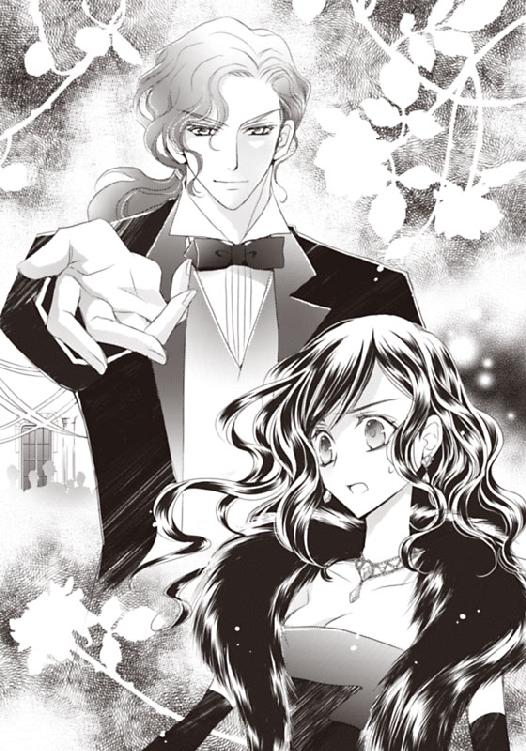
ミロシュは、手をさしのべた。
エローラがぎくんと息を呑む。
「いや」
「仕方がない」
ミロシュは優しく微笑む。
彼の周りが、暗くなる。その中に桃色の発光物が現れ、ヴァーツラフがそれに見とれている間に、ミロシュはヴァーツラフの横にいて、エローラの顎を取って目をのぞき込んでいた。
「では、行こう」
エローラの身体から力がなくなる。視線が動かせないらしく、頭部が動かない。
桃色の発光物が蛍のようだ。
見つめ合う二人をあっという間につつみこんで、二人ごとそれらは消えた。
ヴァーツラフは何もできずに突っ立ったままだった。
しばらくの間、ホールは静まりかえっていたが、誰かが悲鳴を上げて一気に混乱した。
「ヴァーレイ」
ヴィルヘルムが寄ってきて、呆然としているヴァーツラフの頰を両手で挟んで言った。
「しっかりしろ！ 同僚がさらわれたんだ、助けに行くんだろ!?」
ヴァーツラフはがたがたと震えて言う。
「つ、っ、杖がない」
「は!?」
「デービッドには杖がないと」
ヴァーツラフは今見た光景に、力の差を思い知っていた。まざまざと。
あの男に敵うわけがない。
杖をかるがる破壊した。あの桃色の光は、デービッドの力そのものだとヴァーツラフには分かった。
人を溶かし、どこからか現れて消える。催淫効果があって人の心を操って人生を壊す。
そんな者どもの力を簡単に操る。
今まで戦ってきたヴァーツラフだからこそ、その恐ろしさが肌身で感じられた。
第二課の課長が、王宮にやってきたのは三年前のことだ。
「ヴァーツラフ様。もしかしたら、あなたには特別な力があって、この国難に対処できるかもしれません」
課長はあの、緊張感のない様子でそう言って。厳重に封をしたシャーレを取り出して、テーブルの上に置く。
「これがデービッドです」
はじめて直に見る怪物に、ヴァーツラフはごくりと唾を飲んだ。
「そしてこれが杖」
渡された杖を受け取って、何となく床に立てる。
「そう。両手で持って。念じてみて下さい」
「......何を」
「我はお前たちの王なるものぞ。引け」
少し驚いて、課長の顔を見たら頷かれたので、よし、という気になる。
杖を両手で持って、心で念じる。
我はお前たちの王なるものぞ。引け。
シャーレの中のデービッドが、波のように壁に張り付いた。
驚くヴァーツラフに課長が言う。
「是非、訓練を受けていただたきい。よろしいですな殿下」
その時も杖だ。その時からずっと杖は必要だった。
何をしてもデービッドになど干渉されない杖だったのに、あのミロシュという男は。
今この場でくずおれてしまいそうだ。
そのヴァーツラフの腕を、同様に震える手で摑んだのはエルンストだった。
やはりエルンストも歯の根が合っておらず、顔が青い。
「ヴ、ヴ、ヴァル」
「先輩」
ああ、このひとはあの恐ろしさを分かってくれる。
そう思うだけで息がつけた。
思わず一度きつく抱き合う。
エルンストも息を漏らし、二人で少し落ち着いた。
「......教会に戻るよ」
「はい」
「杖がいる」
「はい」
「装備も」
「はい」
「職員は」
「僕等二人だけでいいです」
「だな」
「一刻も早く。エローラさんがきっと怖がっています」
「うん」
二人でそこまで話して、どちらからともなく思い切り手のひらを打ち付けた。
それで、何となく身体の中に力が戻ってくるような気になる。
ヴァーツラフの青い目と、エルンストの緑色の目に光が宿る。
「行くぞヴァル！」
「はい先輩！」
燕尾服のまま二人は駆け出した。
馬車の中で、あるいは装備を調えている最中にエルンストはヴァーツラフに語る。
彼の名は、ミロシュ・フサー。
話は九年前に遡る。
ミロシュはこの教会で、強靭な生命力を持つ亜生物の研究に当たっていた。
エローラはその助手で、二人は恋人だった。
亜生物は岩塩を掘り進んだ窟から出てきた未知のもので、生き物とも粘菌とも違った。
生命力が強靭で、何かに培養して使えないかと研究していたのだ。
エローラとミロシュは仲むつまじい若い恋人だった。
エルンストは幼い瞳でそれを見ていた。
木陰でのほほえみ合うキス。
並んで歩く時の、そっと触れあう指先。
見交わす目のやさしさ。
ある日を境に研究は加速を余儀なくされた。
王妃が直々にやってきて、何か研究の成果はないかと怒鳴り散らした。
ないのであればこの研究部は潰してしまうと。
そして全員を牢獄につないでしまうと。
前時代的な話だったが、王妃の言であるなら実行されるだろう。
ふらふらになりながら、ミロシュはエルンストに笑った。
エルンストは、ミロシュにとってはただの食堂の下働きの女性の子ではあったが、同時に顔見知りでもあった。
あまりにも顔色の悪いミロシュに水を出して、大丈夫？ と訊いたエルンストにミロシュは言った。
「お前までを牢屋に入れるわけにはいけないだろう。がんばるよ」
エルンストとミロシュはあまり接触はなかったが、エルンストには嬉しい言葉だった。
そしてその日何が起こったのか、結局今になっても誰にもわかっていない。
その日がコイン・ヴァライの国民を半分失う大災厄の始まりだった。
全てを飲み込む大量のデービッド。
エルンストはたまたま鐘楼の掃除を頼まれていて、デービッドはそこまでは来なかった。
生き残った職員たちが見つけてくれた。
生き残ったと言ってもその半数は、催淫に落ちて相手を見つけては誰彼なしに行為をしていた。
正気のうちに正気の人にとエルンストは渡されていき、最終的にエローラが抱き込んだ。
教会のシンボルだった司教の杖。飾られていたそれをとって、これは武器なのと自分に暗示をかけるようにぶつぶつ言っていたエローラをエルンストは忘れない。
ぼろぼろになって、服も半分失って、途方もない範囲のデービッドを駆除して。
あのとき、デービッドのチャームを麻袋に拾い集めたのは自分だ。
怖かったし、休みもなかった。
人の家に入ってパンを食べて、きちんと栓のされているものだけを選んでビールを飲んだ。
半分、あるいは一部溶けた人間がそこいら中にゴロゴロしていた。まだ生きているものもいた。動物もいた。
エローラは休まずに呪文を唱え、デービッドを大小様々なチャームにした。
救国の守護天使どころか悪鬼の顔をしていた。
一時間ごと、いや一分ごとにどんどん駆除がうまくなっていった。
結局今のデービッドの駆除システムを作ったのはエローラだ。
今も誰もその本質を理解してすらいないのだ。ましてや実践など。唯一、課長が理論立てに成功しているようだったが、それもエローラの存在あってこそだった。
大災厄発生から五日後、エローラの前にミロシュが現れた。
桃色に光る広場に、銀狐のコートを着て、磨き上げた革靴で。
「やぁ、エローラ。俺はこいつらの王になったよ。俺の中は、およそこいつらと同化してしまった。あまりいじめないであげてくれ。そして君はこいつらの女王だ。わかるだろう。君の中に、彼らがいる。だからこいつらは君の言うことを聞く。俺たちは選ばれたんだね。王と女王として。さぁ、エローラ、君臨しようじゃな......」
差し出された手をエローラははね除けた。
ぎらぎらと目だけが燃える。
「私は」
その時のエローラは、間違いなく神々しかったとエルンストは言った。
「人間として生まれたのだから人間として死にたい。あなたのように、誘惑に流されたりは、しない」
「......気は、変わるものさ。いつでも」
「さようなら。あなたは私を捨てたのよ」
「それは違うよエローラ。俺は」
「捨てたのよ」
かたくなな言葉に、ミロシュは軽く両手を広げた。
「ひどい有様だ。少しおやすみ。デービッド共はひきあげるよ」
「さようならミロシュ」
「愛しているよエローラ。いつまでも」
「愛してたわミロシュ。さようなら」
言葉どおり、デービッドたちはそのあとすぐに消えた。
エローラは教会に戻り、泥のように眠り、そして起きて語った。
デービッドたちは、決まった日に消えてしまうこと。そして効率のいいチャーム化のしかた。
教会組織はエローラの指導の下にできあがった。
ミロシュはエローラの前には現れなかった。
「九年前」
ヴァーツラフは移動の馬車の中、真っ青な顔で震えながら言う。
「僕は、昔身体が弱くて熱ばっかり出してた。九年前も高熱を出して」
「いいよその話は」
「......知らない薬を飲んだ」
「いいって」
「あれは結局デービッドから作った薬なんだろ。だから僕はデービッドが支配できるんだろ。飲んだのは大災厄のあとだ。作ったのはエローラさんか」
エルンストは呟く。
「うん。苦しんでる子がいるならって。ヘトヘトなのに作ってた」
「──大災厄は僕のせいだ」
「違うよ」
少しの間のあと、ヴァーツラフが言った。
「僕のせいだ」
「事故はお前のせいじゃねぇ」
ヴァーツラフは顔を歪め、強く目を閉じた。
涙をこらえ、真っ赤な目を開ける。
「僕のせいだ」
喉の奥から絞り出すような声だった。
これで分かった。
初めての日に向けられたつめたい沈黙。
父王が言ったという責任の正体。
他の人たちは知っていて、僕は知らなかった。助けられたことを。そしてそれがきっかけでたくさんの人が死んだことを。
「ど」
言葉が喉に詰まる。
「どうしたら、償える」
「おい」
「全ての災厄は僕のせいだ。どうしたら。たくさんの人の死が僕のせいだとしたら、エローラさんの人生が変わったのが、普通の人生を奪ってしまったのが僕だとしたら、どうしたら、どうしたら」
エローラとミロシュ。
何もなかったら今頃は普通の人生を。
朝起きて、働いて、楽しい夕刻を過ごして、眠って起きて、人生を歩んで。
今みたいに、寝る時間もなくかけずりまわって、服を買う暇もなく、友人を作る暇もなく、ただ怪物を退治する装置の様な存在でいるのではなく。
味方に襲われることを覚悟して、身を捧げるような真似もしなくてよくて。
ふと夢想する。
ヴァライの街を楽しそうに歩く、普通の生活をしているエローラ。
きっと自分とは出会わないだろう。
すれ違ってしまうだけだろう。
けれどエローラはきっとしあわせで、ミロシュが隣にいるかもしれなくて。
「首筋にキスをすると泣いてしまうんですよ」
下衆！
思い出して頭の中が真っ赤に焼ける。
エルンストは狭い馬車の車内で、ヴァーツラフの様子の変化を察知する。
エルンストが言う。
「ミロシュはダメだ」
「はい」
「アレはもう人間じゃない」
「わかってます」
強くうなずく。
「エロさんはアレには任せられない」
「はい」
ふ、と思いついてヴァーツラフは言う。
「......ぼ」
エルンストが真っ赤になって怒鳴った。
「お前もダメだバーカバーカ!!」
「僕まだ言ってませ、いや、なんでですか、僕王子だし顔もいいし」
「性格悪いじゃねぇかバーカバーカ!!」
「先輩なんか年下じゃないですか!!」
「お前だってそうじゃねーか!!」
「すっごい下って訳ではないですから。先輩すっごい下じゃないですか」
「別におれはエロさんがばばぁでも愛する自信があるんでね。あとおれいい男だし」
「否定はしません。口は悪いけど」
「だぁろ？ お前もまあまあだけどおれほどじゃないし、しかもおれはずっとエロさんのそばにいたんだ。もう誰よりも大事な家族みたいなもんさ。お前来たからゆずろうかなってちょっと思ってたけどやっぱりおれは」
「ダメじゃないですか」
「え」
「家族は恋人になれないでしょ」
少しの間があった。
エルンストが頭を抱えて叫ぶのとヴァーツラフが拳を握るのが同時だった。
「ギャアアアア!!」
「よしッ！ あーびくびくしたー。先輩が敵だと困るんですよね、勝ち目少ないから。若いけど全然かっこいいし頭もよくて色々できてすごい人！ そんなのが恋敵だなんて困るんだー......」
そこまで言って、ヴァーツラフは止まった。
エルンストは、目を半分にして口端を両方下げて肩を落とした。
「あのなヴァル」
「......」
「おれはいい男だし賢いから自分の気持ちぐらいは把握できてたんだけどね。まぁぶっちゃけ、お前が来てからはっきり自覚したんだけど、お前もそうなの？ エロさんが好」
「うわぁあああああ!! そんなはずは!! この僕があんなもっさりぼっさりしてるだらしない女性を好きになるだなんてありえない」
ぷっとエルンストが笑った。そして呟く。
「でもかわいくて」
「......」
「やさしいだろ」
思い出して、ヴァーツラフは赤くなる。
エローラのこと。
胸が温かくなる。
思うだけで身体の中に春が来て花が咲き乱れる。
「そうですね」
転んだり、怒ったり。
「嘘がなくて、一生懸命で」
戦ったり、笑ったり。
「がんばってて、前を見てて」
食べて飲んで歌って。行儀はあまりよくなくて、だらしなくて。
「かわいい」
「うん」
エルンストがうなずく。
「エロさんが好きならさ。まずはミロシュから奪わなくちゃ」
「違います先輩」
「え」
「取り戻すんです。エローラさんが、エローラさんらしく笑えるところに」
ミロシュの前で凍り付いていたエローラ。
あんなのはいけない。
あんなのはダメだ。
あんな顔を女性にさせてはいけない。
ましてや
好きなひとに。
「僕と、先輩のところに」
それを聞いてエルンストがにやりと笑って、手の甲でヴァーツラフの胸を叩いた。
「よう」
「なんですか」
「お前も結構いい男になってるぜ」
ヴァーツラフはそっぽを向いてエルンストの頭をぐしゃぐしゃ撫でた。顔と耳が熱い。
赤くなってるんだろうなとヴァーツラフは思った。
「褒められて嬉しいなら嬉しいって言うんだよバカ！」
「......褒められたことが」
「あ？」
「なくて」
「嘘だろ」
「王子だったので」
「......」
「僕自身というものが、あまり、見られず」
「......」
「ここに来てから、初めて......兄と父以外の......そういう......なんというか」
ふむ、とエルンストが息を漏らし、言った。
「慣れろ。これからたくさん来るぞ。お前はいい男だからな」
にかーと笑うその笑顔が太陽の様だ。
ヴァーツラフはほれぼれと見とれる。
「先輩はホントにかっこいいですね」
「そう、褒められたらこう言うんだ覚えろ」
「はい」
「知ってるよ」
二人で少し笑って、馬車が停まった。
エルンストが小窓を開けて御者に言う。
「どう？」
「......あー......特に何も......ないような」
馬車が止まったのは、町外れの岩塩の採掘抗跡だった。
塩をおおよそ採り尽くして今はもう使われていない。
周りの裸木がかさかさと揺れている。
「ま、たぶんここだろうさ。朝になったら迎えに来て。待機時は防御結界張ってな」
エルンストはヴァーツラフにスーツケースを持たせて自分も馬車から降りる。
お気をつけて、お気をつけてと御者が何遍も言って、馬車が離れる。
二人だけになってしまえば、風の音しかしない。
針の様な光を放つ星々の下で、二人は眼前の窟を見つめた。
「......ここが」
「うん。デービッドが一番初めにみつかったところ」
部屋は、快適に設えられていた。
暖炉は暖かく、いい香りがする木がくべられている。
絨毯は繊細で美しい花柄で、ソファも落ち着いた色合いの美しい家具だ。
美術館で見たことがある作家の絵。
棚に並べられたガラスの花瓶。
花を生けるためではなく、それ自体を鑑賞するためのものだ。
チューリップを彫り出した磨りガラスのシェードごしに、ランプが部屋を照らしている。
エローラは自分が大きなベッドに横たえられていることを知る。
どこにいるのか分からずに起き上がって、自分が裸なのを知る。
思い出して、顔を押さえてため息を吐く。
「起きたか、エローラ。紅茶をどうぞ」
「いらない」
手にカップを持って、ミロシュが入ってくる。
充分に暖められた大きな部屋は、裸でも寒くはない。エローラはするりとベッドを出て、一糸まとわぬ姿で堂々と立った。
「パンツ返してよこの変態」
「裸身を見せびらかして、誘ってる？」
「バカじゃないの」
「どうかな」
ミロシュは手に持った紅茶を飲む。いい香りが部屋に広がる。
彼が着ているのはへちま襟の濃い赤色のセーターで、下はコーデュロイのズボンだった。
「何よ若作りしちゃって」
「褒められた」
「違うわ。ねぇ、ちょっと、あのドレス王宮のなんだからさ。いや、まずはパンツ返して。あと、着替えなんかないの」
エローラは歩いて、どさりとソファに座った。
暖炉に近くて暖かい。
ミロシュはテーブルに紅茶を置くと、少し早足で歩きながら言った。
「待ってて。気にいると思う」
楽しげな雰囲気で歩き去る。
空々しいことこの上ないわ、とエローラは思う。
もう九年もたってるし。
ああ、でも、ずっとあなたのことを考えていたわミロシュ。
デービッド共と戦って、その間ずっと。
ミロシュ、とっとと死んでしまえと。
「どうかな？」
うきうきとミロシュは、若草色の室内着をエローラの前で広げてみせた。
そのあざやかさと、かわいらしいモチーフの彩りにエローラは目を見張る。
嬉しげなミロシュの視線に気がついて苛つき、服をもぎ取る。
「なんでもいいのよ！」
「そう？ 俺は何でもいいわけじゃない。君を飾るのには、ふさわしいものがある。でも」
ミロシュはエローラの手から服を奪うと暖炉に放り投げた。
「ちょっと！」
火に包まれる服を見て、エローラは目をむく。
ミロシュは楽しそうに笑っていた。
「君はそのままが一番綺麗だ」
ミロシュはエローラの足下に、するりとしゃがみ込んだ。
ぞくっとして身体が動かない。
ダメだそんなことじゃ。蹴飛ばそう、と脚を振ったら受け止められた。
目を合わせたままにやりと笑われ、見せつけるように足の甲に口づけられた。
「......やめて」
震える。
こわい。
このあとにおこることを知ってる。
抵抗できない。
ミロシュは舌を出して、足の内側、ふくらはぎまでを舐めた。
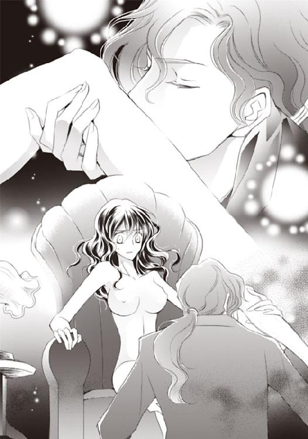
「ひっ、ぃ」
エローラが声を上げる。
全身がしびれる。脚の間が熱く、下腹が重くなる。乳房が張って、乳首が立つのがわかる。
デービッドには催淫効果がある。
自分の中にもデービッドが入っている。だから大抵の場合エローラには効かない。
自分が今人間の様であるのは、ただ精神の問題だ。
おそらく自分は一度死んだのだ、大災厄の時に。けれどデービッドが自分の中に入り、同化した。その同化したデービッドのおかげで、自分は生きているのだと何となく分かる。
どうしてそうなったのかはまだわからないけれど、ミロシュの言と行動によると、たぶん指導者を必要としたのだ。
と、いうことはデービッドには意思がある。
エローラの退魔に応じると言うこともその現れだ。
ではエローラとミロシュが対決したらどうか。
エローラは人間の味方であろうとしたので、結果デービッドを狩る立場だ。
一方ミロシュは自分の全てをデービッドに委ねていて、それが故の統括者なのだろう。
そして存在と行動に矛盾がない分自分よりも力は強い。
抵抗できない。
いや、いや、いや、こんなの。
ミロシュは楽しげにエローラの脚にキスをし、膝の内側をきつく吸い上げる。
「ひ」
エローラの身体ががくんと跳ねた。背筋が反って、手が肘掛けを摑む。
痕がついたのを確認して、ミロシュは同様に股の内側、脚の付け根へと同様にきつく痕をつけていく。
「あ、あっ、あ」
がくんがくんとそのたびに身体が跳ね、視線から力が抜けて息が浅く跳ねる。
「やだ、やだ、やだッあ」
ミロシュは下から見上げてエローラに微笑む。
「イヤなだけではないだろう？」
ぐい、と両脚を開かされて、秘所が明らかにされる。
「あ」
自分でもそこが濡れているのがわかる。体毛も濡れて張り付いて、襞も中もひくついている感触も。
視線を感じてぞくんぞくんと震える。
「あ、あっ、いや、いや、やめて、ミロシュ」
その声が泣き声でうわずっているのが恥ずかしい。
まるで求めているようだ。
「ふふ。可愛いな、俺のエローラ」
「いや、イヤなの、お願い、やめて、やめて」
ミロシュの指が秘所を開く。中から愛液が落ちるのが分かった。
「やだ、こんな」
「そうかな」
つるりとミロシュの指が一本、中に入った。
「は、ひ......」
鋭い快感に身がすくみ、情けない声が上がる。
「あ、あ、あ、っ、イヤ、ああ、いや」
「気持ちいい声を出して。溶けてしまいそうだね」
中で指が折れ曲がり、濡れた音がする。
「お、ぁ......」
見開いた目から涙が零れる。気持ちよくて頭の芯がキンキンする。
「た、助け、て」
「大丈夫、すぐ......くせになってしまうから」
そうじゃない、そうじゃない、こんなのいやなの、身体の奥でもっとほしいと何かが叫んで頭がおかしくなりそうだけど、こんなのいやなのこんなのいやなの。
だつてあなたは私のことなんか好きじゃないじゃない。
私はあなたきらいだもの。
どうしてそばにいてくれなかったの。
どうしてふみとどまってくれなかったの。
どうしてなの。
なのにどうして諦めてくれないの。
エローラはそう思って緩慢に頭を振る。
「おね、が、や、め、て」
「もっと、って言うなら考えてやる」
「いやなの」
「何が」
「おかしくなる」
ああ、蹴り飛ばしてしまいたい。
けれど身体は快感を求めて震えている。
「おかしくなっていいよ」
「いやなの！」
どうしてわかってくれないの。どうしてわかろうとしてくれないの。
あなたはもう人間じゃなくて。
でも人間の時からひょっとしたらこうだったかしら。
もうわからない。もうわからないわ。
「愛してるよ」
エローラは、なんだかおかしくなってしまう。
どうして、こんなに伝わらないの。
「......くっ」
下腹が震えた。
笑いに。
「エローラ？」
「私に触らないで」
全身が疼く。
身体の奥をえぐってほしくてたまらない。
けれどそれ以上にこれを言う喜びに、エローラは抗えない。
大きく脚を開いて、裸足でミロシュの顔をひたりと踏む。
ああ、私、コレを言えるわ。
あなたに、お前に、屈服なんかしたりしないわ!!
「だいっ嫌い」
愉快だ。
撲殺されても構わない。
「あなたにされるくらいなら、ゲスに輪姦される方がまだましよ」
頭がおかしくなりそうだ。
今すぐ抱かれたい。
腹の奥が熱くて疼いてたまらない。
何でもいいから突っ込んでほしい。狂いそうだ。
今なら誰の足下にひざまずいてでも懇願するかもしれない。
けれど。
「あっ、あなた、あなただけは、イヤよ!!」
ああ、痛快だ。
このあとどんな目に遭っても構わない。
後悔したって知るもんか!!
ミロシュは、エローラの足を取るとそっと自分の顔からどかした。
「ふぅん？」
「あは、は、は」
言ってやった、ざまみろと、エローラは笑う。
「言えたわ、よかった」
「......そうだね。そして君はこれから俺に抱かれて腰を振って入れて下さいと泣くわけだ」
「そうね、そうかもね」
考えただけで涙が出てきた。
悔しい。
イヤだ。
「死にたい」
「そんなに急ぐこともないだろう。どうせ」
「はは」
心臓がドキドキする。喉が渇く。欲情で。
「イヤだけど、それは受け入れるわ」
「私は受け入れがたいがね」
「ひ」
中に指を入れられてかき回される。
その感覚に腰がびくびく跳ねた。
「ああ、ああ、ああ」
水音が響き、全身がゾクゾクと甘く激しくしびれる。身体がいやらしくうねるのを止められない。
情けない、悔しい、何かが踏みにじられる。
いっそ苦痛なら。
いっそ痛みならまだいい。
言い訳もできるのに。
「エローラ。一人は寂しい。君が欲しい。そのためなら俺は何でもするよ」
「め、い、わくよ......ッ！ はひ、ぃッ！」
陰核を指でなぶられ、また一段身体の奥の熱が上がる。
全身の中で蛇がうねっているような。
「だ、ダメ、っ、だめ、ひょこ、そこ」
舌が回らなくなってくる。頭の中が熱い。
「音を聞くかい」
ミロシュの指が中に二本入ってくる。
「────」
声が出せない。
独特の深い快感に身体をつっぱらせる。
中を拡げられる音がして、空気混じりの水音が響く。
「すごいな。こんなにひくついて。......自分でしてたの？ それとも誰か相手がいた？」
「かん、け、な」
指を深く入れられ、親指で陰核をはじかれる。
「か、あ、はひ、ひっ、イヤ、ああああああ!!」
「答えろよ」
ミロシュの目が嫉妬に燃えている。
けれどどこか楽しそうだ。
ぞくりと精神のどこかが震える。
エローラは、くっ、と笑って口の端をあげる。
「誰。と、でも、寝てたわ」
嘘だ。
恋なんか、する暇もなかった。
浄化の中で襲われることはあっても、あんなので身体に火がついたりはしない。
ただこわいだけだった。
自分を慰めることはあったが、疲れて眠るだけの毎日の方が遙かに多かった。色欲より睡眠欲の方が遙かに強かった。
いつからか、日常生活でのあれこれをよく失敗して、ぼんやりするようになった。
駆除の間はすっきりしているのだが、そうでないときには身体の制御がうまくできない。
昼間の光が満ちて白く光る診察室で、初老の医師に訊いた。
「......わたし、こんなんで平気ですかね」
外で、緑の葉が揺れた。
聖歌隊の声がしていた。
エローラは丸椅子に座ってうなだれ、緩く椅子を回転させていた。
「ああ、いいのか、別に」
自分で納得して呟く。
医師は何も言わなかった。
「八月十日を楽しみに......」
課の人間以外が、合言葉の様に呟く言葉を零す。
椅子が小さくキィキィ言っていた。
「......だから、いいんだな......」
医師はそっとエローラの頭を撫でた。
「やだなー先生。別にいいんです」
言ってみたが動けなかった。
「いいんです、よー」
そんな風なのに恋なんか。
できるわけが。
手の中で崩れる杖。
一瞬どうしていいのか分からない。
崩れる。
壊れる。
武器がなくなる。
課のみんなが作ってくれた時間。課のみんなが作ってくれた杖。私のための。
あなたの力にすこしだけでもなれますように。
ひたむきなその気持ちが、エローラはとても嬉しかった。
その集中の杖。
だめ。
こわれちゃう。
わたしが、わたしでいる意味が。
わたしが人間でいる意味がなくなっちゃう。
後ろから伸びてきた
革手袋の
両手。
エローラの両手を外から包んで握らせてくれた。
そこをどけと排するのではなく。
ほら、手を添えるから。
ちゃんとするんだ。
できてたことをちゃんとするんだと励まされるような。
「......へぇ？」
ミロシュの目の奥に、いらついたような光が宿り、引きつった笑みが浮かぶ。
「では、お仕置きをしなくちゃな」
エローラの目は、ミロシュを見てはいなかった。
心はここになかった。
ただ、励まされて強くなれた気のするあの日に戻っていた。
革手袋の両手。
その持ち主がだれだか、今の自分には分かっている。
薄布の下がる天蓋の下、白い大きな椅子。
「それ、やめてくださいエローラさん」
鼻に皺を寄せ、行儀悪く脚を組んでヴァーツラフが言った。
あの空間が自分はだいきらいで、自分は生け贄みたいでだいきらいでだいきらいで。
それでもみんなを助けられるのは心の底から嬉しかったから、いやじゃなかったけれど大嫌いで。
銀髪で青い目で長い手足をして、配給の室内着を着て革靴で、白い薄布なんて似合うはずないのにまるで天使みたいに。
何もかもをぶちこわしてくれる破壊の天使みたいに。
ヴァーツラフが笑う。青い花の様に。
「あなたにできることは、きっと僕にだってできます。あなたみたいなドジでマヌケは」
失礼ね。失礼ね。
「おやすみなさいエローラさん。あとは僕がやります」
そう言ったヴァーツラフは、まるで勇猛果敢な男の子みたいで。
大岩の上から得意満面に、河に飛び込む夏の日の男の子みたいで。
「ヴァル」
口に出したら涙が出た。
「たすけて」
遠く振動がした。
すずん、すずんと腹に響く。
部屋の天井からぱらぱらと土埃が落ちてきて、大きな音と大量の粉塵とともに、天井が落ちて、その穴から顔に面をつけてマントの前を閉じ、防護帽を被った男が二人落ちてきた。
小柄なほうが、コートの中から試験管を取りだし、周り中に撒いて粉塵を落ち着かせる。
瓦礫を踏んで、二人はかけよってくる。
ひとりがマスクを取って放り投げた。
「エローラさん大丈夫ですか！」
銀の髪、青い瞳。ヴァーツラフ。
あなたどうしてそんな必死な顔をしているの。
どうしてそんなに泣きそうな顔をしているの。
第三話 普通のおんなのこ
「無粋だな」
ミロシュは立ち上がって言った。
「恋人の逢瀬を邪魔しないで欲しいものだ」
「やかましい」
鼻に皺を寄せてヴァーツラフが言い、腰の剣をすらりと抜いた。
「かかってこい。成敗してやる」
ミロシュはつめたい目でヴァーツラフを見ると、
「興が削がれたよ」
とつくづくため息を吐いて、ヴァーツラフとエルンストの横を通って出ていった。
至近距離を通られたのに、二人は身動きもとれなかった。
何か、威圧されたのだ。
ミロシュが部屋を出ていって、はじめて二人はエローラのそばに駆け寄れた。
屈辱的だったが、悔しがるよりやらなくてはならないことがある。
「エロさん」
ヴァーツラフは自分のマントを急いで外すと、エローラを包んで抱き上げた。
その感触にも感じて、エローラは身をすくめる。
「帰りましょう」
うなずくのが精一杯だ。
「急げ急げ。ぶっ壊しちゃったから崩れるかも」
エルンストがそう言って手振りで促す。
三人は階段を駆け上がる。細い長い、岩盤を削りだしたままの階段は不規則で歩きにくかったが気にしている暇はない。
階段を駆け上がりきると巨大な音と地響きがして、窟が崩落した。粉塵が追いかけてくる。
先を行くエルンストが振り向いて怒鳴る。
「走れ走れ走れ！ 高いとこ行け埃に巻かれると肺傷付くぞ！ 何でマスク捨てた！」
「す、みませ！」
抱かれているエローラが言う。
「......ごめん、ヴァル」
「黙っててエロさん！」
ぜっぜっと息が鳴っている。さすがに人ひとり抱いて階段を駆け上がり今も走るのは辛いのだろう。エローラは極力ヴァーツラフにしがみついて自分の身体を安定させるが、中が疼いて仕方ない。
股間から愛液がしみ出して流れるのが分かる。
イヤだ。
恥ずかしい。
ヴァーツラフの服をよごしてしまう。
だがどうしようもない。
息が浅く、甘くなる。
ヴァーツラフの匂い。ヴァーツラフの熱。走って流れる汗。こんなに寒いのに。こんなに危険な場面なのに。
ドキドキする。
寄り添って、腕を回す。
抱きしめられてる。
嬉しい。
頰を胸に寄せる。
ドキドキしてる。
走ってるからだけど。
男の人に抱かれるのってこんな感じなんだ。ミロシュとはどうだったか思い出したくもない。
胸にそっと唇を寄せる。服越しだけれどくちづけた。
そうか。
わたし、この人に恋をしたんだ。
そうか。
でも、
言っちゃいけないんだ。
かなえちゃいけない。
八月十日を楽しみに。
それにさ、こいつ王子様だしな。どっかの王女様とかと結婚すんでしょ？
八月十日が過ぎたらさ。
ああ、なんか悲しい。
なんか。
いいか。
いいかもう。
だってもう頭がおかしくなりそうだ。
身体が震えて、跳ねて仕方なくて。
エローラはヴァーツラフの身体に自分の身体をすりつける。
い、今だけ。今だけだから。
自分に言い訳をしつつ、エローラはこっそりしたいようにする。
聞こえないような小さない声で、
「好き、すきだよぅ」
と呟いてみたら幸せだった。
涙が出そうだ。ぐすっと鼻が鳴った。
「エロさん大丈夫ですか!?」
聞きつけたらしく、ヴァーツラフが顔をのぞき込んできた。
ああ、綺麗な顔。
思ってエローラは泣きたくなる。
「ばか」
「すみません、遅れて」
ぎゅっと抱きしめられた。
泣きそうな声だった。
違うんだけどな。そうじゃないんだけど。
「走れー！ もうちょいだ！」
丘の稜線に立ったエルンストが怒鳴り、試験管を取り出す。
ヴァーツラフがぜっぜっという声と共に歯を食いしばり、雪を踏み砕いて稜線に駆け上がる。
同時に、エルンストが試験管を投げた。
半円形に着地してはじけ、中身が立ち上がって透明な膜になって三人を包む。
粉塵は斜面を駆け上がって稜線を越したが三人には触れずに過ぎ去り、やがて収まった。
息を整えたエルンストが、何とか言う。
「僕マスクあるから馬車呼んでくる。待機してて」
「はい」
へたり込んでヴァーツラフは言う。
息が上がって苦しかった。
エルンストが駆け去り、二人きりになる。
ヴァーツラフはエローラをきつく抱いて、地面にあぐらをかいて座り、その膝の上にエローラを座らせた。
崩落はまだ収まっておらず、窟で音がしている。
「大丈夫ですかエローラさん。イヤな思いをさせてしまってごめんなさい」
ぎゅっと抱きしめられて、エローラは泣きそうに目を閉じた。うれしい。うれしい。きもちがいい。なんてしあわせなんだろう。
「先輩から聞きました。僕のせいだ。僕のせいで、僕の病気のせいで、母が薬を急かしたのであなたはこんなことになった。僕のせいで、ミロシュは」
「ヴァル、それはちがうよ」
ぼんやりする頭で、言う。
ずっと考えていたから言葉はすんなり出た。
「きっかけはそうだったのかもしれないけど、ホントはどこでだって止められたはずなんだ。それに、誰のせいだった、なんて考えたってもうしかたないでしょう。わたしはさぁ、いいんだよ。デービッドに溶かされちゃったひととかね、いっぱい見てきたの。それでね、やっぱりくやしかったの。なんかできることしたかったの。で」
エローラは涙の浮く顔で笑った。
「できてるの」
嬉しそうだった。
「救国の天使だって。やったぁ。みんなわたしに感謝してくれてる。失敗すると石投げられるけど。アレ痛くていやだなぁ。でもさ、わたしがさ、王宮で舞踏会だよ。なあにそれ、すごい。やったぁ」
「エロさん」
胸が痛い。
エローラが心底嬉しそうで胸が痛い。
ヴァーツラフは苦しくなって抱きしめ、涙をこらえる。
「デービッドがいなくて、わたしが普通のひとだったら、って、もう考えらんないよ。普通の生活ってどんなんなの。デービッド以前は普通にパパとママといたけど貧乏でさ。二人とも死んじゃってさ。教会にひきとられて。みんなやさしかったよ。ミロシュも」
思い出す。
ミロシュ。
髪を短くしてた。
銀狐のコートなんか着てなかった。
デートするときは少し恥ずかしそうに、
「ごめん、今度少しまともなコートを買うから」
と、裾の擦れたコートを着て、これだけは君のためにちゃんとしたかった！ と誇らしそうに買いたてのネクタイなんかしめて。
それでそこにビールを零して、落ち込んだ顔のかわいらしかったこと。
つい笑ってしまったら。唇を尖らせて、君に恥をかかせないかな、だらしない彼氏だなんて、と呟いて。
いいのよ、そんなの全然いいのよ。私だって綺麗な服なんてもってないもん。
今度給料が出たら、バザーでお客になってみましょうよ、綺麗な古着があったら買いましょうよ。形が古かったら私直すわ。それでいいわ。
「お金が入ったら結婚しよう。街に部屋を借りて！ 俺たちの好きな家具を選んで、作ったっていいけど。いいかい、子供ができたらうんとかわいがるんだ。きっと君に似ててかわいいぞ」
いきなりすぎない？ と笑って、エローラは幸せだった。
でももう昔のことだ。
けれど涙が零れた。
「あ、う、ごめ、だめだ」
息を詰まらせながらエローラは言った。
「し、幸せ、だったの、思い、だすと、なけて」
手のひらで涙をぬぐう。涙が止まらない。
「ごめ、なさ」
ヴァーツラフは強くエローラを抱き締めるとその頰に自分の頰をつよく寄せる。
「忘れて」
耳元でささやく。
「思い出はそのままでもいいけど、あいつと幸せだったことは忘れて。僕が幸せにするから」
思いがけない言葉に、エローラは目を見開く。
「身体、辛いんでしょ。すごく、いやらしい匂いがしてる。さっきからずっと」
ヴァーツラフは手袋を脱ぎ捨て、エローラの身体を撫でる。
それでもうだめだった。
「あああああ！」
全身がしびれた。
「きっ、い、いや、あっあ」
「......かわいい......」
両手で尻を摑まれ、体勢を変えられる。
「僕を両脚で挟み込んで」
「う、うっ、うん」
言うとおりにするしか思いつかない。
身体を動かしてそうすると、ヴァーツラフは片手を前にして、エローラの秘部に指を当てて中に滑り込ませた。
「ふひゃ、あああああ、あああああ」
つい声が出てしまう。全身が気持ちよくなる。とけてしまいそうだ。
「......すごい」
ゴクリと喉を鳴らして言われる。
ああ、この人もわたしに欲情してるんだわたしと同じように。
そう思ったらたまらなかった。
「んっ、ん」
エローラはヴァーツラフを両腕で抱き締める。自然と揺れてしまう腰を恥ずかしく思う。
ヴァーツラフの肩に額を押し当てて、顔が上げられない。
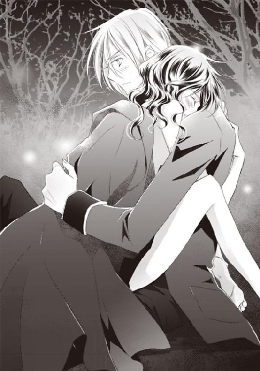
「エローラさん。顔、見せて」
「いや」
「見せて」
「やだ」
エローラは首を横に振る。
「言うこと聞いて」
言うなり中で指を動かされた。
「はひっ！ い、いや、やだ、やぁあああ」
びくんと背が反って顔が上がる。きつく目を閉じる。
「......どろどろ」
欲情に上ずった声が降ってくる。
その声が鞭のように身体を打った。
「あああ」
「指増やしましょうね」
「やあ！」
中に入って来る指が増えた。
「三本ですよ。すごい、あなたの中きゅうきゅう締めてきて最高だ」
「いやああああああ、い、い、いわないでばか、ぁあぁ」
「わかるかな......手首まであなたのいやらしいの、垂れてきて、あいててて、ちょっと髪引っ張らないで」
「意地悪、いうから！」
エローラは涙と熱の浮いた目でヴァーツラフをにらみつけた。
ヴァーツラフと視線がぶつかる。
ヴァーツラフはじっとその顔を見て、それから指を動かした。
「ふや、ああ、ああぅ」
「何ですかその顔！」
「顔、何、わかんな」
「かわいい」
「あ、やぁああああ、ダメ、だめぇええ」
「も、も、もう、いれます、からね」
「えっ、あ、なにを」
一瞬ヴァーツラフが黙り、そのあと真っ赤な顔で唇を尖らせた。
「ダメですか」
その顔が可愛くて、エローラは言った。
「いいよ」
「えっ」
「お願い、私を、あなたのものに、してください」
ヴァーツラフの思考も行動も止まった。
エローラはじっとヴァーツラフを見て、それからうなだれる。
「ヴァル。......ダメなら、いいの。ご、ごめんね......やだよね、うん、わかってる。ごめんなさい。でも、もう、くるし、......くて」
突然、ヴァーツラフが焦ったようにごそごそと着衣を乱し、それからエローラを持ち上げる。
「えっ、いいの、あ、あ」
ヴァーツラフの性器を感じて、愛液の滑りを借り、秘部を探してエローラはもどかしく腰を揺らす。
「あ、あっ、あん、は、早く、ほしい、あっ、あ、ヴァル、あ」
「ぼ、僕も、僕ももう」
ヴァーツラフは先端を揺らして入り口を探る。
今まで指で弄られた場所。熱くてひくついて濡れている。
ヴァーツラフの手が、エローラの腰を引き落とした。
みぢ、と入り口が張って、苦しかったが、腰を揺らして上下に動かすとゆっくりと入ってこられた。
「あ、あ、あ、あっ、ああああ、ああああ」
たまらない。
しびれるような充足感と快感と悦びにエローラは泣く。
「きっ、気持ち、いい、きもちいいよ、きもちいいよう、ヴァーツラフ、ごめんね、ごめんね、ごめんね、あんっ、あっ、あっ、おくっ、もっと、おく、来て、あっあっ、きもちいい、ごめんね」
「あやまらないで、ぼ、僕もきもちいいです、僕も、エローラさん」
ヴァーツラフの声がしてエローラはとてもしあわせだと思った。
ヴァーツラフが腰を揺らしてくれるのに合わせて自分も腰を揺らす。
「はっ、はひ、あっ、いい、いいよ、ヴァル、きもちいいよ、ごめんなさい、ヴァル、あああああ、も、ダメ、イッ、いっちゃ、ああ、ああああ！」
大きな快感の波に全身をさらわれ上も下もわからなくなって、光る渦の中で回転する。
全身が痙攣して息が詰まる。死にそうだ。
そんな感覚を味わってから、エローラはぜぇぜぇと息を吐いた。頭の芯がキンキンしていた。
ヴァーツラフは自分をきつく抱いて、肩口に額をつけて泣いていた。
「ご、ごめんなさいエローラさん」
「どうして？ わたしの方こそ、ごめんね。ごめんなさい」
「中で出しちゃった......」
「......し、し、し、仕方ない、よ」
「......できれば孕んで下さい」
「......え？」
突然、苦しいほど強く抱き締められる。
容赦なくヴァーツラフが抱き締めると、これくらいの力になるのだと思い知らされる。
肋骨が折れそうだ。
「ぐっ」
「僕だけのものになれよ」
「がっ、あっ、い、いた」
「もう、どこかに閉じ込めて、八月十日が過ぎても、外に出さないで、僕とだけいてよ」
「ヴァル、いた、くるっし、あ、あ」
「僕とあなただけでいいのに」
痛みと苦しさで気が遠くなる。
けれどどこかそれでもよかった。
それでもよかった。
このまま死ねたらいいのにと思った。
エルンストが馬車を連れて戻ってきた。
カンテラに火を入れて、土を踏んで歩く。
星明かりは鋭い。星座はさっきより低く傾いている。
ヴァーツラフはエローラを抱き締めて呆然としていた。
「よう」
ざくざくと歩きながらマスクを取って、エルンストが言う。
風が吹いて木々を揺らしていた。
「年下なんかホントにうんざりだ。譲ってやったんだぜ、感謝しろ」
「......エルンスト先輩」
涙に濡れた顔、傷付いた表情をヴァーツラフはエルンストに向けた。
エルンストは無表情でそれを見る。
「僕、どうしたら」
エルンストはカンテラを道にたたきつけて割った。
「知るかバカ野郎ッ!! お前はエロさんが好きで抱いたんだろ!? いざ手に入れたらどうしていいのかわかんねぇ自分に傷付くな!! おれの立場がない!! おれだってエロさん抱きたかったよ慰めたかったよおれの欲望だって満たしたかったよ!! 頭の中で何回だってエロさん犯してるさ、だけどおれが抱くわけにはいかないんだよ!!」
「......どうして」
「お前ふっざけんなよぉぉお！」
腹の底から身を震わせて、エルンストが叫んだ。遠い山に反射してこだまが返る。
「じゃぁ代わってよかったのかよ！」
「だ、だめ」
ヴァーツラフは首を横に振る。
その様がいかにも憐れでみっともなかった。
エルンストはどうしようもなく腹が立って、ヴァーツラフの顔を一発殴り飛ばした。
ヴァーツラフは口の中の血を吐き出して言う。
「だって、僕怖いんですよ。エロさんとして、怖くなっちゃったんですよ。エロさん、僕のこと嫌いじゃないみたいで」
エルンストはもう一発殴った。
「......でも僕これからどうしたらいいのかわかんないです。大事にするってどういうことですか。つきあうのってどうしたらいいんですか。エロさん幸せにしてあげたいのに僕どうしたらいいのかわかんないのに欲しいだけ欲しくてもてあましちゃって」
「クズがッ」
鼻に皺を寄せてエルンストが言う。
「おれの方がまだましな気がしてきたぜ」
「......どうして先輩じゃダメなんですか」
「いいのかよ」
「ダメですけど」
また一発。
「おれはエロさんの最後の砦なんだよ」
「......え」
「言ったろ、おれはエロさんの家族になる。お前とどうなっても、エロさんはおれのとこに帰ってくる。帰ってこられるって、帰る場所があるって、信じてもらうんだ。そのために僕はいるし、お前に恋人役も譲ったっていうのに、何だその様ァ！」
いらついてエルンストはヴァーツラフの背中を蹴った。
ヴァーツラフはエローラを抱き締めてかばう。
「だって僕だって恋なんかはじめてで」
「相談には乗ってやるから、しっかりしろ！」
「殴らないで下さいよ！」
「じゃぁキレさせんなよだッらしねぇなぁもう！」
ふうふうと二人で息を荒らげて、夜の中見つめ合って、そしてエルンストが言った。
「......馬車乗れよ」
「......はい」
二人は、眠るエローラを抱いて馬車に乗った。
「先輩」
「なんだよ」
「僕、かっこいいはずですよね」
「死ね」
「王子だし」
「死ね」
「なんで、こんな、悲惨な気持ちで好きな人抱いてるんですか僕」
「......」
「僕、どうしたらいいんですかこれから」
少し間があいてからエルンストは唇をとがらせ。沈痛な様子で言った。
「おれ、子供だからわかんねぇ」
朝が来る。
エローラは医務室の女性たちに預け、ヴァーツラフとエルンストは一言も交わさずそれぞれシャワーを浴びて、倒れるように眠って、朝。
エルンストは食堂で朝食を作り、ヴァーツラフは定刻通り起きて来て、椅子に座った。
手当は受けたが、ヴァーツラフの顔は無残に腫れ上がっていた。
エルンストは卵を炒める手を止めずに言う。
「寝てろよ」
「訓練ってこわいですね。起きちゃいました」
「寝てろよ、おれ今お前とあんま接触したくねぇんだよ」
すごい速度でキャベツを千切りにしながらエルンストは言う。ナイフがまな板にあたる軽快な音。
「僕はひとりでいたくなくて」
「他のやついるだろうがよ。本部に行って精神管理部の」
「僕は先輩がいいんで」
ざく、と音が乱れた。
エルンストは手を止める。
顔が熱い。
なんなんだこいつ。
思ってまたキャベツを切る。
ボウルに入れて、塩でもむ。
「先輩、あの、なんか、手伝うこと」
「うぜぇ」
「心細くて」
「部屋で寝てろ」
「おちつかないです」
とうとう後ろでうろうろされはじめ、エルンストは怒った。
「てめぇいい加減に」
玄関の戸が閉まる音がして二人は緊張する。
足音が響く。
ひょい、とエローラが顔をのぞかせた。
「おは、ようー」
「おおおおおはよう」
「おははははははようごー」
「ヴァル。ちょっと」
とエローラは手招きする。
「あっ、は、はい」
「ああ、やっぱいいや。エルンストにも聞いてもらおう」
食堂に入ってきたエローラは配給品のシャツとスカートと、裾と袖の長い灰色のカーディガンだ。
かわいい。
髪、耳の横のだけ結んでて、あっちこっちに絆創膏貼ってて。
エルンストとヴァーツラフはドキドキしながらエローラを見る。
「あの、あの、もしかしたら、エルンストはヴァルから聞いてるかもしれないんだけど、昨日」
「ハイハイハイハイハイハイハイハイ！ セックスしたんだよねハイハイハイハイ!!」
やけくそのようにエルンストが言う。
ヴァーツラフが両手で顔を覆って真っ赤になる。
「先輩ちょっと......」
「えっ」
エローラは当惑した顔で言う。
「あの、あ、そうなん、だけ、ど」
「別の話ですか？」
「ううん、別じゃないんだけど、その話なんだけど」
「......え」
エルンストも眉根を寄せる。
「何さ」
「イヤあの、なかったことにしようよ、って提案」
エルンストとヴァーツラフは大きく目を開けて息を呑む。
エローラは照れくさげにぼりぼり頭をかく。
「やっぱほらさー。ヴァーツラフって王子様じゃんー。筆おろしの相手がわたしじゃまずいでしょ」
えへへと笑ってみせる。
「緊急避難的な対処っていうことで、お互いおさめとかない？ っていうさ」
エルンストが半目になって、手の甲をヴァーツラフの胸に当てた。
「おれ、ちょっと五分出てくる」
「......すみません」
エルンストが外に出ていき、ヴァーツラフは一歩前に出た。
「......何の話ですかエローラさん」
「えっ。何おこられる筋合いなくない」
ヴァーツラフが怒っているとエローラにだってそれは分かるがどうしようもない。
だって。
エローラだってよく考えたのに。
「わたしじゃ、王子様に釣り合わないでしょ」
その言葉にヴァーツラフがかっとなったのが分かって、エローラは竦んだ。
逃げる間もなく手首を捕まれる。
息を呑む。
視線の先のヴァーツラフが強く目をつぶって歯を食いしばり、それから震えながら指を放した。
「......ゆうべ、みたいなことが、あったら......？」
「えっ」
「あなたが娼婦みたいに男をほしがる様な事になったらどうするんですか」
その言葉にエローラが今度は息を呑む。
「えっ......」
「誰でも、いいの」
はは、と自嘲するような笑顔。
ヴァーツラフは胸を押さえ、涙を浮かべて早口で言い捨てた。
「エルンスト先輩だけはやめてあげてください」
「え」
エローラは一人で呆然と立ち尽くす。
どうして。
玄関の扉が閉まる音がした。
「どうしてそうなっちゃうの」
呟いて、ソファに座る。
「全然わかんない」
わたし、我慢してるじゃない。
好きだって言ってないし。
いっぱい考えたのに。
どうしてこうなるの？
「......ふえ」
悲しくなって涙が落ちた。
エルンストを捕まえて食堂の隅で小声で話す。
ヴァーツラフはうつむいたままで、小さくごんごんと額をテーブルに打ち付ける。
エルンストは、牛乳で煮出した紅茶にバターを落として砂糖を入れた物を飲みながら、一応聞いている。
「ひどく、ないで、すか、あんなの」
「うんうん」
「そりゃ、緊急措置的にね、しましたよ。しましたけど。緊急措置ったって、そんな、ぼくだって、そんな」
ヴァーツラフがぶつぶつ言いつつ額を打ち付けている間に、給仕がやってきてエルンストに朝食を出す。リンゴの入った甘いパンとハムとピクルスの皿、それにパイで包んだスープ。
「僕はね、だってエローラさん好きになっちゃって、その人がね、あんな可愛い顔で、苦しそうでおねだりしちゃって。そりゃ、しますよ。しますけど」
エルンストはあっという間に食べ終わって、ナプキンで口を拭き、食器は下げられる。
職員たちが、どーしたよ王子どうしたよと寄ってきて囲み、エルンストがしー、と静かにさせる。
職員たちはどんどん集まり、黒山の人だかりになる。
ヴァーツラフは相変わらず額を打ち付けながら、ぶつぶつ言っている。
「それなのに、なかったことにしようとか」
全員耳を傾けている。
その異様な様子がまた人を呼ぶ。
「ないから。ないだろ。こっちだって。人のこと何だと思って。何で僕落ち込んでるんだ。何で。昨日もそうだ。なんで」
「......そりゃ落ち込むよな」
「だよな」
「王子はエロさん好きだって、自覚したんだろ」
「その直後にセックスして」
「まぁなぁ」
「同情するわー。まじ同情するわー」
「やりてぇけどなぁそれだけじゃぁなあ」
「王子様無垢だわーかわいいわー」
職員たちが言い、ヴァーツラフは驚いて視線を上げ、いつの間にこんなに人がいるんだと説明を求めるようにエルンストを見た。
「えっなに」
三人ほどの職員たちと大人向けの新聞のクロスワードをしていたエルンストが言う。
「話聞いてて下さいよ！」
「おれ子供だから色恋とかセックスとかよくわっかんねぇんだって。ああ、ここはアレかな、クンニリングス？」
「詳しいじゃないですか」
「他のヤツに聞けよってはなしだよ」
職員たちが熱くヴァーツラフを見つめ、一人の職員が言う。
「こいつ、もてるぜ」
言われた優男が身を乗り出す。
「まかせろ」
「こいつの方がもてるって」
言われた優男が髪をかき上げた。
「まかせろ」
「こいつだって」
言われた、少しごつめの男が身を引いた。
「おい、ちょっとやめてくれ」
ヴァーツラフは最後の男に向かって言った。
「チャペックさん、あなたがいいです」
「......や、役に立てるかな......」
はにかむようにチャペックは言い、ヴァーツラフはうなずく。
「お願いします」
「......うん」
「あの、僕、どうしてあんなに傷付いたんですか」
男は少し考える。
「......本意ではなかったからだろう」
「ぼ、僕はだって、彼女が好きで、当然抱きたくて」
「......おちついて、王子。抱きたくても、うーん、そうだな。少なくとも、相手が普通の状態か、そうダンスで興奮していてもいい。でも、望むのはその程度だ」
横からちゃらちゃらした職員が身を乗り出す。
「そうさ、俺だってラリってる女に乗っかられて童貞奪われた時は、悪かねぇけどもうちょっとなんかねぇかなぁって思ったぜ？」
「......ルネ。すまないが」
「っと、失礼」
「まぁ、ルネは少々......下品だが」
「ひどいぜ」
「つまりはそういうことなんじゃないか」
ヴァーツラフは言われて考え込む。
「確かに昨日エロさんは、薬でラリってるみたいなもんでしたけど僕は童貞ではなかったし」
「王子そこどうでもよくね？」
「ルネ、すまないが」
ルネとチャペックの突っ込みと制止を無視してヴァーツラフは続けた。
「エロさんの本意でも」
「まず、それを確かめてはどうだろう」
「え」
「嫌ではなかったか、だ」
チャペックに言われてヴァーツラフは考え、それから顔が自然にうつむく。
「嫌がられてた気はしないんですけど」
「うん」
「途中から僕もよくわかんなくて」
「だろうね」
「すごく気持ちよかったし、あのひと、なんかち、ちいさいんですよ、身体が」
思い出してついヴァーツラフの両手が動く。これくらい。
「女性だからね」
「ぎゅっとしたら折れそうだと思ったら我慢できなくてそうしたら気絶しちゃって」
「ああ」
「そ、そんで？」
身を乗り出す男たちにエルンストが言う。
「おい、下品なことは聞くなよ。相手はエロさんだぞ」
「わかってるよ」
「俺たち全員あの人に世話になってんだ、大事にしたいさ」
ざわざわと男たちがそう言い、相談を受けているチャペックが手を挙げて制する。
「......王子の話を聞こう。エローラさんが選んだ男だ」
言われて、ヴァーツラフが驚く。
「そんな。たまたまそこにいただけです」
「......れは、自分のみならずエローラさんに対する侮辱ではないだろうか。ひいては我々にも」
「え」
「それは、むしろ運命と受け止めるべきではないか」
「......は、い」
「具体的な提案としては、是非、君はこれからエローラさんを街に連れ出して、カフェで話をするのだ。ケーキでも食べながらだ」
「デートみたいじゃないですか」
「そうさ。順序は違うかもしれないけれど、君たちは恋人になればいい」
「え」
「君が傷付いたのは、順序を違えたからさ。ならば、やりなおしたらいいのだ。さぁ、デートに誘いに行きたまえ」
「お、服貸そうか」
「花がいるぞ」
「これ使えよ」
食堂の飾りを花を花瓶から抜いて、職員がハンカチで茎をくるんだ。
渡されてヴァーツラフがどうしようと思っていると、職員たちが慌てて窓の外を指さした。
「エローラさんだ」
「エローラさん外出しちゃうぞ王子」
「行け行けほれ急げ」
「え、えっえ」
ほぼ追い出されるようにヴァーツラフはエローラを追う。
残った職員たちは、窓に張り付いて成り行きを見守った。
「ところでエルンスト先輩は本当にいいのか？ あれで」
職員のひとりに言われて、エルンストは苦笑する。
「おれは、エローラさんの帰る場所でありたい。エローラさんが帰ってこなくても、だ」
クロスワードに答えを書き込みながら言って、ふと視線を上げると職員たちがこっちを見ていた。
「なっ、なんだよ」
「いや、惚れる......」
「エロさん、ここにいい男がいますよ」
「王子早くふられりゃいいのに」
口々に言われてエルンストは息を吐いた。
「......時間があれば、おれは譲らなかったかもしんねぇけどさぁ」
エルンストは首を横に振って、またパズルを見る。
「やだやだ、年下なんて」
雪と氷を踏んで、ヴァーツラフはエローラに追いつく。
教会の敷地を出てすぐの路上だ。所々に露店が出ている。薄い日が差していて、氷が水色に縁取られている。
「エ、エローラさん」
ヴァーツラフに声をかけられてエローラは笑おうとして失敗した。
変な顔になった。
「ご、ごめ。ちょっと今話したくない」
言ってエローラは歩き出す。ヴァーツラフは焦って追いかける。
「あの、さっきはすみませんでした、ひどいこと言って」
「謝ってくれてありがとう、でも話したくないから！」
顔を上げずにエローラは言って、ざくざく歩く。
ヴァーツラフはどうしたらいいか分からない。
とにかくついて歩いた。
「エローラさん、ごめんなさい、話、あの、花も持ってきたから」
「ききたくないし花いらないし」
「エロさん、ねぇ」
「その呼び方やめてよ殿下」
「その呼び方嫌です」
「ついてこないでったら！」
強い調子で言われ、ヴァーツラフは竦む。
どうしたらいいんだ。
人に謝ったことなんかない。
つい立ち止まってしまう。
遠く小さくなっていく背中。
「エローラさん！」
焦って駆けだしたら、露店の果物屋に躓いた。積んであったリンゴが転がった。
「あ！」
「おい何やってんだ！」
「す、すみません、すみません、弁償しますから！」
ヴァーツラフはおたおたとリンゴを直す。露店の主人は、両腕にリンゴをかかえたヴァーツラフから、これはダメこれはだいじょうぶと選り分けながら、ダメになった方を紙袋に入れた。
「ほい！」
「おいくらですか」
財布を取り出そうとしたヴァーツラフに主人は言う。
「いいよ」
「え」
「八月十日を楽しみにしてる。がんばってくれよ、殿下」
手袋をした手で親指を立てて言われる。
「......はい」
あれ。
八月十日。
何かおかしい。
何だろう、この取りこぼしている気分。
何か自分は気がついていない。
ずっしり重い紙袋と花を手に、ヴァーツラフは考え込んだがいかんせん、リンゴが重かった。
「い、い、一度戻らないと......」
思ってため息を吐く。
エローラさん。夕方の出動の時に一緒になるのに、気まずい。
花を持ってると手のひらが使いづらい。
どうしよう、捨ててしまおうか。
そう思ったらするりと花とハンカチを取られた。
驚いて、見ると、エローラがいた。
「......コレ、食堂の花じゃん」
嬉しい。
嬉しかった。
エローラは茶色のコートを着ていた。
ぱっとしなかった。
それでいいと思う。
ちゃんと僕のものになってくれたら、そしたら自分を花咲かせるようにいくらでも彼女に似合う服を着ればいいけど、今はまだ不安だから。
すてきなあなたを誰かに見せてしまって、とられたらいやだから。
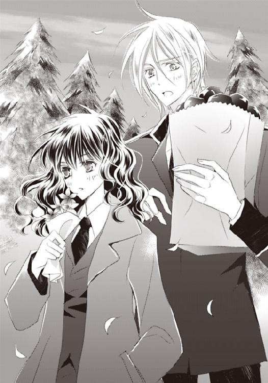
「あの、あの、コート、似合って」
「センス悪」
エローラはそう吐き捨てて来た道を戻る。
「えっ、エローラさん」
「ほら、教会戻るんでしょ」
「え」
「そんなもん持ってどこにいくのよ」
ことの顚末を聞いたエルンストは、二人にジャム作りを命じた。
「皮むいて芯取って砂糖入れて煮るだけだから！」
と紙にざっと、作りかたを書かれて、二人で食堂で作業にあたった。
エルンストは外に用事があると言って出ていってしまった。
すみません先輩、こんな世話まで焼かせてしまって、とヴァーツラフは思う。
エローラは不器用にリンゴの皮をむく。
ヴァーツラフはむいているうちに慣れてきたので、
「皮むきは僕がやります」
「......む、むかしは、こんなの簡単だったんだけど......」
泣きそうな顔でエローラが言う。
「......デービッドと戦ってるうちに？」
「......かな」
やんなっちゃう、と息を吐くエローラにヴァーツラフは言う。希望を示して励まそうと思った。
「でも、八月十日がくれば、もう全部終わりますから。そしたら、そうだ」
それは、とてもいい思いつきに思えた。
「ドルカ諸島知ってますか。あそこ、親交が深いんですよ王室と。子供のころ何度か連れて行ってもらって、少し知ってるんです。温暖な気候で、サンダルで歩けるんです。エロさんこれだけ尽力してくれたんだから、国で旅費とか持って、しばらくゆっくりするのはどうでしょう。僕と先輩も一緒に行って、海遊びしたり、日光浴したり、本を読んだり。ほんとは教会全員で行けるといいんだけど。防衛隊の人も。......あーでもアレかな、国の人みんな、好きなとこに好きな様に行けるようになるのか。それで戻ってこられる。うん、いいですよね。国庫金に余裕があれば、補助とか」
言いながらさらさらとリンゴの皮をむく。
エローラは言う。
「いいわね」
ちらりと視線を上げたら、エローラはとても穏やかに微笑んでいた。
「すてきね」
まるで光の妖精のようだった。
とても綺麗だ。
「ねぇ、ヴァル」
あっ呼び方戻った。嬉しい。
「あなた気がついてるかな」
「......なんです？」
「みんなのことちゃんと気にしてくれる様になったね」
「......」
「すごくいいと思うよ」
それから少し間があって、ヴァーツラフは言った。
「あの」
「うん」
「やっぱり、仲間ってもんなのかなって」
「当然よ」
エローラは視線をちらりとだけ上げて笑う。
「私の家族よ」
ヴァーツラフは少し唇をとがらせる。子供扱いされているような。仲間はずれにされているような。
「そしてあなたの家族でもあるもん」
言われて、胸が温かくなった。
「食堂の花、誰に渡されたの」
「......ホーフマンさんです」
「みんな相談にのってくれた？」
「はい」
「あなたもがんばっているもの。みんな見ててくれてるよ」
「はい。......ありがたいです」
「......このあと。全部終わって王宮に戻って。どうするの」
「おそらく、兄の補佐をする大臣になると思います」
「うん。いい国にしてね」
「......はい」
このあと。
全部終わって王宮に戻ったら。
......自分は大臣になって、エローラは......
「あなたは、八月十日以降どうするんですか？」
ぷつり、となにか空気の中の見えない糸が切れたような感じがした。
それが何かわからなかったがヴァーツラフはそれを感じた。違和感。
「うーんわかんないな」
エローラはああ肩こったとばかり首を回して答える。
「あの、なんだろ、あれかな。教会の手伝いとか！......あっでも、こんなんで役に立てんのかな」
「こんなんって」
「......ぼんやりするしさ。ちょっとなんか年々手足動かないし。まぁそうでなくてもドジで間抜けだしなぁ」
「誰ですかそんなこと言ったの」
「あんたよ」
ぐぅ、と喉を鳴らしてヴァーツラフは黙る。
そりゃそうなんだけど。
それで迷惑もかけられて、尻ぬぐいも補助も大変なんだけれど。
「......エローラさんが、僕に、どんな迷惑かけても、別に、もう、いいです」
「発情して娼婦みたいにセックスねだっても？」
エローラは視線を上げず、淡々とナイフを使ってリンゴをむいている。
床に落ちたリンゴの皮は短く、削っているといった方がいいような有様だ。
ヴァーツラフは驚いてエローラを見る。
「......何言って」
「夕べそんなんだったもん自覚ある。ごめんね、迷惑かけて。中に出されてとりあえず治まったわ。精液って効果あんのね」
光のない瞳で淡々と言われて、ヴァーツラフは怒りだか悲しみだか分からない気持ちが胸にわき上がるのを感じた。
食堂での職員たちのやりとりを思い出す。
この場を作ってくれたエルンストを思い出す。
落ち着かなきゃ。
「......エローラさん」
「具合よかった？」
はっ、とエローラは口端を上げる。
「やめて下さいそういうの」
「いいじゃん」
「嫌です」
「そ」
どうでもいいやと言いたげにエローラは言う。
「そういうはなしじゃなくて」
「違うの」
「......エローラさん」
ヴァーツラフは考える。
エローラの言葉はどう考えても挑発だ。
以前の自分だったら、かっとなってケンカにもなっただろうか、今日はなんだか違った。
何が違うのか分からないが、ただ、エローラのために何かしたかった。
エローラさん。
エローラさん。
エローラさん。
あなたには今どんな言葉が、どんな気持ちが必要なんですか。
僕にそれがみつけられるかしら。
したことはないけど、したい。
あなたに寄り添う、あなたにもきっと分かっていない、あなたに必要なことば。
「好きです」
「いいよ、そういうの。一回したからって、ないでしょ」
「そういうことじゃなくて」
「そういうことにしかなんないじゃん！」
エローラはナイフをリンゴに突き刺して怒鳴った。
「もうそういうの言わないで！ 泣きたくなるから」
はっきりそう言われてヴァーツラフは黙り込んだ。
じゃあ、これがだめなら。
「デートをしましょう」
「バカじゃないの」
間髪容れず、エローラが突っ込んだ。
「うっ、ぐ、なんだよ、人が」
「あんた誘ったからって何で私がおおよろこびで、あーんうれしいデートだわなんてならなくちゃなんないの」
「別にそういうの期待したわけじゃないです」
「へー。なによ。じゃぁ。僕いけてるし王子だから、エロさんなんかちょろっと誘えば機嫌直すしとか思ってたんじゃないの」
二人の視線が合う。
緊張感が走る。
二人でにらみ合ったまま同時に立ち上がった。
「やんのかコラ」
とエローラ。
「いいですよ。表出ましょうよ」
「望むところよ」
二人で並んで手を洗う。
「ちょっとそっち寄って下さいよ」
「あんたが寄ればいいじゃない」
ぎゅーぎゅーと子供のように場所を取り合い、タオルで手を拭いてコートも着ずに外に出る。
途中でエローラは髪をまとめて上で縛り、庭に出た。
指でヴァーツラフをさして言う。
「泣かす！」
「できるわけない。手加減はしませんよ」
両肘を浮かせ、腰を軽く落としてヴァーツラフは言う。
職員たちがざわざわと外に出てきた。
小脇に本とノートを抱えたエルンストも。
「うわ何やってんだおまえら！」
「先輩」
と気がそれた一瞬に、エローラはすいっと野生動物か、影の様な動きでヴァーツラフの懐に入り、片手をとってひねり上げてバランスを崩すと同時に、後ろ向きで足を足で払った。
「うわ！」
あっという間に倒れて背中が地面につき、白い曇り空とエローラの顔が目にはいる。
エローラの片足の靴底がヴァーツラフの胸の急所を踏んで動けない。
「はっはー！ どうよ！」
ヴァーツラフが顔を真っ赤にして言う。
「エローラさんパンツ見えてます！」
「何よ今さら」
言われてヴァーツラフはおかしくなって笑う。
「っ、あは、そりゃそうだ、あはははは、いててててていててててて！」
靴底で胸を踏みにじられてヴァーツラフは悲鳴を上げる。
「ちょ、エロさん、勝負ついてるんだから、いたたた、おとなげ、ない、いたたた」
「うるさい泣けぇ！」
「あはは、あはは、いたたた、いたた」
職員たちが笑って見ている。
エルンストも。
「仲直りするのに取っ組み合いとか、子供か」
苦笑して二人に歩き寄る。
「おーいリンゴどうしたんだよ、さぼってんじゃねぇよ、ジャム食えねぇぞー」
二ヶ月後。
出現が夕刻限定になったとはいえ、デービッドはどこに出るか分からない。
エローラたちは今日は街の中心にある広場に待機して、連絡が来るのを待つことにした。
時刻は夕方。
街には誰もいない。
足下には薄い長い影がある。
デービッドが出れば、街の四方にある教会の鐘が鳴って、伝令が動く。
「電話が持ち運びできて、どこにでもあればいいんだけど」
エルンストが、人気のない広場に立って呟く。
「線引きずるしかないですからね。そんな長い線、扱いづらいでしょ」
ヴァーツラフは答える。エローラは馬車の後部座席で、足だけ外に放り出して寝ている。
ミロシュとの遭遇から二ヶ月経って、ヴァライはそろそろ春になろうとしている。
マンディラ河の氷が溶けはじめて、軋んでぎいぎい鳴っている。あの音が最大になって弾けるのが、ヴァライの春のファンファーレだ。
街路の氷が溶けてそこら中水浸しで、夜にはまた凍るが昼にブラシで水を集めて排水溝に落とすことも市民の習慣だったから、日に日に雪も氷も少なくなっている。
その間からはゆっくり休んだ黒い土と、眠っていた緑がほんの少し顔を出してもいる。
太陽が沈んでいく夕刻。
街のガス灯が、点灯員によってつけられていく。
「あーぶないでーすよー」
エルンストが言うと、点灯員が帽子のつばを持ちあげて言う。
「仕事です」
「ったってさ」
「通達回ってるでしょ。夕方から三時間外出禁止！」
「仕事ですし」
「もっと早めに点灯作業できるように僕掛け合いますから」
ヴァーツラフの言葉に点灯員が帽子を胸に礼をする。
「ありがとうございます殿下」
「僕、大抵ここで待機してますから、なにかあったら手紙を渡して頂けたら対処できます。皆さんにそう告げて下さい」
「はぁ？ そんな畏れ多い」
驚いて言われた言葉に、ヴァーツラフは両手を広げてみせる。
「広場で立ってる暇な若造に、手紙渡したっていいでしょ。別にそんなの。話早いですようちのとーちゃん王様ですから」
その砕けた、ふざけた物言いに点灯員は笑う。
「じゃ、こんど、そのとーちゃんにいっつもありがとさんって手紙書きますわ」
「はい、うちのとーちゃん喜びますよ。ほら、デービッドが一カ所に出るとは限らないしここに出るかもしれないんだから。最寄りの知人のお宅ありますか。なければ防衛隊の詰め所があそこにありますから、時間が終わるまで待っていて下さい」
「あ、はい。家近いですから。ではどうも、へぇ」
点灯員は頭を下げると去って行った。
夕日が落ちかけて、街が闇に沈む。
塔の上部にだけ光が当たり、それが反射している。
遠く、マンディラ河の氷のきしみ。
ヴァーツラフはウィスキーフラスコを取り出して、蓋をまわし、中の強い酒を気付け用に一口だけ飲んだ。
ごぽんと中で酒が鳴った。
風が吹いて、骨のような木々をがらがらと鳴らす。
雲が静かに流れていく。家々の窓に控えめに灯がともる。
日が、遠い山脈に沈んでいって夕焼けが始まる。
燃え落ちる太陽が光る線になり、点になったその時、西の教会で鐘が鳴り響いた。
エルンストとヴァーツラフは、エローラの脚を抱えて畳むような形にして馬車に乗り込む。
扉を閉めるなり、馬車は車輪が外れそうな勢いで走り出す。
道には誰もいない。
夕焼けに輝く赤い空からの光で、街はまだ暗闇ではない。
道の角々に防衛隊が立っていて、こっちだとカンテラをまわしている。彼らを巻き込んでひいてしまいそうな動きで馬車が曲がる。
馬車の中でエローラが目を覚ます。
ゆっくり、しかし、黒猫のような動きで目を開ける。
馬車が停まる。
エローラが起き上がる。
「......行くよ」
「はい」
ヴァーツラフが手袋をはめ、エルンストがスーツケースを持って、エローラに続いて馬車を降りる。
路地のどん詰まり。半地下の扉の前に防衛隊の制服を着た二人が立っている。
「よろしくお願いします、エローラさん、王子、先輩」
二人の声が重なり、三人の声が重なる。
「ヤーハイディア」
エルンストが言う。
「規模は」
「一階が満杯です。市民が一人取り込まれてます」
「おっし、やるかぁ」
拳を手のひらに打ち付けてエローラが言い、ああ、元気だとヴァーツラフはほっとする。
眠くて寝ているだけならいいのだが、最近エローラはうとうとしていることが多くてなんだか気になった。
けれど八月十日が来れば、そんなこともきっとなくなるだろう。
デービッド共は消え去り、みんな平穏で穏やかな暮らしに戻る。
そうしたら、エローラさんだって！
休みの日にデートくらいは誘ったっていいだろう。エローラさんの恋人に僕が立候補したっていいだろう。あらためて申し込んで、断られたら友達になる。それでいい。いつか気が変わってくれることを望みながらそばにいる。
だがまぁ八月十日がすぎてからだ。
そこまでのりきってしまえば！
バチンバチンと音がしてエルンストが鞄の留め金を外す。
杖をそれぞれに渡して、試験管を取り出す。カウントする。
「トゥリーン、ドヴァー、アイ、開始」
防衛隊の二人が両開きの扉を開けると。中からピンク色のゲルが床一面に見えた。
エローラ、ヴァーツラフ、エルンストが試験管を投げてたたき壊す。
反応ビーズに試薬が触れて、デービッドたちは揮発する。
三人は家の中に入る。
「王室直属正教会実行監査部対不把握敵流動体第二課、エローラ・バララーエルオヴァです！」
「以下二名です」
ヴァーツラフが、指で杖を回して手のひらに納めながら言う。
エローラが続けて言う。
「助けに来ました！ 意識はありますか？ 返事をしてください！」
「うあああ」
うめき声に視線を向けると螺旋階段の途中に女が引っかかっていた。
「僕上行きます」
「うん」
ヴァーツラフとエローラがやりとりをする。
ヴァーツラフの手には聖典がある。
ヴァーツラフは試薬を撒きながら歩き、エローラはエルンストに手を差し出して言った。
「聖典」
今にもばらばらになりそうな聖典をエルンストは渡す。
試薬であいた空間に、デービッドが波打つように広がる。
エローラは背筋を伸ばし、かつかつと歩くと乾いた床に立ち、デービッドに杖を突き立て聖典をめくった。
「二二二ページ下段二段落から三行」
エローラが言い、階段に立って同様に聖典を開くヴァーツラフが、デービッドに杖を突き立てた。
ヴァーツラフも聖典を開く。
呼吸を合わせる。
「深海よりの密会があるとするならそれは暗闇であるべきだと神が語った」
ぴたりと合った聖典の語句で、デービッドがさらにうねった。
二人は同時ににやりと笑う。
いい反応。
今夜は調子よく決まりそうだ。
戦いの結果として現れた、深紅のねじれたハートのチャーム。
中空に浮くチャームを取って、ヴァーツラフは階段の途中からエローラに投げた。
エローラはそれを受け止め損なって追いかけて拾って、エルンストに渡した。
「エロさんおつかれさま」
「うん、別のとこで鐘鳴った？」
「まだです。ここだけだといいんですけど」
エルンストとエローラは親密な距離で話をし、視線を交わす。
室内ではヴァーツラフが被害を受けた女性を助け起こそうとしていた。手を伸ばせば届く距離だったからだ。
「お嬢さん、大丈夫ですか」
その声にエルンストが室内に駆け込む。
「ヴァル！ バカッ！ 防衛隊、中入れ急げ！」
ヤーハイディアと焦った声がして、防衛隊が靴音を鳴らして家の中に入る。
けだるい動きで女性の腕が伸びて、ヴァーツラフの身体に巻き付いた。
「ああ、あああ、身体が、ああ、したい、したいの、おねがい、私のあそこにあなたのをちょうだい、すぐしていいから、このままでしていいから、お願い」
女性の力とは言え、ヴァーツラフは不意を衝かれた。ヴァーツラフを階段に押し倒して荒い息を繰り返す女性はドレスの端をめくり、白い股をむき出しにしてヴァーツラフの上にまたがって腰を振った。
「ああ、おねがい、してちょうだい、もうたまらないのよ」
「やっ、やめ」
ヴァーツラフの制止もむなしく、女性はヴァーツラフの股間のファスナーを下ろす。
嬉しげに股間を撫で、摑みだしてしごき上げようとする。
「ああ、すてき！」
「やめなさい！」
真っ赤になって恐怖と嫌悪にひきつるヴァーツラフの声が響く。ヴァーツラフは浄化はできる。だが、突発事態にヴァーツラフは混乱して身動きがとれなくなっていた。
「お嬢さん、落ち着いてください！ 浄化できますから！」
後ろから防衛隊が二人で羽交い締めにして拘束しようとする。
「邪魔しないでぇえ！ 私いれて欲しいのよ!! かきまわしてほしいのよおお！」
獣のように女性が暴れる。
その目は正気を保っておらず、涎が垂れていた。
加勢しようと階段の下で様子をうかがっていたエルンストの横を、エローラが静かな気配で上がっていく。
背筋を伸ばし、目線を上げて。
「やだぁあああしたいのぉおおおおしたいのぉぉおお」
泣き叫んで、階段を膝立ちで引きずり下ろされようとしていた女性の前でエローラは足を止める。
圧倒されるような気配があった。
女性は動きを止めて、視線を上げる。
「大丈夫。いいのよ。何もかも許されるわ」
エローラはそう言って微笑み、女性の顎を人差し指で上げさせると、そっと口づけた。
上の唇と、下の唇を自分の唇で挟んで吸い上げる。
女性は次第に落ち着いていく。
エローラは優しく髪を撫でてやり、唇を合わせて呼吸を合わせて、一度強く吸い込み、そして送り込んだ。
女性の身体から力が抜け、涙が零れ、震えながらエローラを見た。
「......ああ......ありがとうございます......ありがとうございます天使様......」
それを聞いて、エローラは女性を強く抱き締める。
「守りきれなくてごめんなさい。こわかったでしょう。なにかあったら、私のところにいらっしゃい。教会に。私、だれよりあなたのことわかってあげられる」
女性はそれを聞いてぽろぽろと涙をこぼして、しまいには号泣した。
「いいんです、いいんですこんなの！ ありがとうございます天使様！」
「デービッドのことだけじゃなくて、困ってたらなにか力になれるかも知れないわ。それと、わたし、女の子のともだちほしいんだ。遊びにきてね！」
「......はい！」
女性はきつくエローラに抱きついた。
男たちはほっと息を吐く。
「じゃあ今から一度正教会に来て、私が帰るの待っててくれる？ ご家族への連絡は今できるかしら。なんなら伝令使ってくれていいのよ」
「家、家族はいません。デービッドに......」
エローラは唇を震わせて、涙をこらえて頭を下げた。
「......ごめんなさい」
「え！」
「......わたしのせいです。ごめんなさい」
「エロさんやめろ」
エルンストがきつく言う。
ヴァーツラフが言う。
「......僕のせいだろ」
「ヴァル！」
エルンストが鼻に皺を寄せて言った。
「王子、やめなよ」
防衛隊の男もぼそりと。
「エローラさんもさ。そんなの始まったら、俺たち立場なくない？」
ふふ、と語尾が上がって笑われ、二人は恥ずかしさに赤くなる。
女性は何のことかしらときょとんとしていた。
エローラは気を取り直して言う。
「じゃ、この方教会に送って下さる？ 食事と、甘い物をさしあげて」
「ヤーハイディア」
ぴしりと敬礼して防衛隊の二人は女性を立たせて、丁重にエスコートして去った。
ヴァーツラフは、
「ふう」
と息を吐いて階段に座る。
「失敗した......こわかったぁ......」
両手で顔を押さえてぬぐう。
「前閉めたら」
エローラに言われてヴァーツラフは真っ赤になって直した。
「はじめてじゃないでしょ。浄化やってんだから」
エローラが杖をしまいながら言う。
「まぁそうなんですけど、やっぱり防衛隊とか職員さんとかありがたいですよ。いざというとき助けてくれるし。エロさんずっとあんなことやってきたんですよね、すごいな......」
言われて、エローラの頰が染まる。
そして胸を張った。
「えへへ、ありがとう！」
そして不意に膝からがくりとくずおれた。
「！」
ヴァーツラフが反射的に抱き留める。
「......ああ、ごめん......大丈夫......」
エローラは笑って立ち直す。
「さて、馬車に戻って待機しよう！」
陽気に言って早足で扉に向かう。
それをヴァーツラフは痛々しく見つめた。
「......先輩。エロさん体調よくないですよね」
ヴァーツラフのささやきに、スーツケースに杖と聖典とチャームをしまいながらエルンストは返事をする。
「......まあな」
「どうしてですか。前より出動楽にはなってるのに」
「今までの疲れが出たのかもしれない」
「......僕、がんばりますからエローラさん休ませて」
「本人やだってんだから仕方ないじゃん」
「でも」
「一応、お医者さんにも診てもらってるしさ......おれたちにはどうしようもないよ」
「八月十日が待ち遠しいですね......そしたら、みんなでバカンス行きましょうよ。エローラさんにも言ったんですけど、気候のいいところに」
エルンストはスーツケースの留め金をバチバチ締めて、それから言った。
「そうだな。いいかもしれない。けど、切符はとらないでくれ」
「え、どうしてですか」
エルンストは顔を上げずに言った。
「まぁ。事後処理とか。あるだろ。なんか。落ち着いてから手配してくれ」
「......はあ」
曖昧に返事をして、ヴァーツラフはエルンストに訊いた。
ずっと訊きたかったこと。
けれど訊いてはならないような気がしていたことだ。
「......僕が知らないことが、なにかあるんですか」
だがエルンストが返事をする前に御者が戸口に立って言った。
「あのーまだです？」
「今行くよ」
「エローラさんは？」
「今行ったろ」
「来てませんよ？」
エルンストとヴァーツラフは顔を見合わせる。
「ミロシュ？」
エルンストが吐き捨てる。
「だろうよ」
「探れますか、行き先」
「無理だな」
じゃあどうするんですかとくってかかりそうになったヴァーツラフは自分を抑えた。
エルンストはちゃんと考えているし、できることは全てしている。
そういう信頼があったから、言葉を待った。
考え込んでいたエルンストはふっと顔を上げて言った。
「市内の高級ホテルを片っ端からあたってくれ。あいつ、いそうだから。値段の高い部屋から、全室扉を開けて確認。ああいや、ダメだ、ミロシュ相手だもんな、速攻やられるわ、あー、うん、あれだ、むしろ大丈夫だっていう方を全部確認して、怪しい部屋は開けないで。そこおれたち行くよ。うん、これだな。伝令呼んで。僕等はここ本部にして待機して情報集めるから全員ここに呼んで」
「ヤーハイディア！」
御者が駆けだして行き、馬車の音がして静寂が戻る。
エルンストは玄関ホールに行き、言う。
螺旋階段のある、なかなか広いホールだ。
「おあつらえ向きじゃないか。椅子とテーブルもある。少々デービッドくさいが」
「作戦用にしては低すぎやしませんか」
「贅沢言うない」
長椅子と、それに合わせた低いテーブルだ。
客人が少し休むだけのための。
エルンストは再度鞄を開けると中から市内の地図を出して広げた。
色鉛筆で、ホテルに丸をつけていく。
「ヴァーツラフ、知ってるホテル教えて」
「はい」
その作業をしながら、エルンストが言う。
「あのさヴァル」
「はい。あっ、ここ......はい」
「エロさん抱いてやってよ」
「あとここ......え!? はぁ!?」
驚いて声を上げるヴァーツラフに、エルンストは苦笑した。
「ほんとおまえらいい加減にしろって」
金色の巻き毛が照明に光って、本当に天使のようだった。
第四話 八月十日を楽しみに
馬車に戻ろうとエローラが外に出たら、闇からにじみ出るように赤毛の男が現れた。
上質な黒のマント。
「やあエローラ。デートの誘いだ」
「ごめんなさい、しつこい男は嫌いなの。しつこくなくてもあんたは嫌いなの」
ハッ、と笑い飛ばしてエローラは身を低くしてその横を通り過ぎようとしたが、ミロシュの腕が伸びてエローラを抱き留めた。
「放して！」
と叫んだエローラの声が響いたのは、もう知らない部屋の中だ。
「どうだいすてきだろう。ヴァライ・レイフセン・ホテルの一番いい部屋だ。さぁくつろぎたまえ」
そう言ってミロシュは大きく両手をひろげて歩き、隣の部屋に消えた。
「何を飲む？」
「......なんでもいいわ」
高い天井、シャンデリア。壁には絵画とレリーフ。足下はヒールの沈む大きなチューリップ柄の絨毯で、エローラはなんとなくブーツの裏を見て泥がついていないか確認する。
どっさりついていた。ため息を吐く。ゴミ箱を寄せて靴の泥を払う。
「エローラー？ おいでー」
呼ばれて腹が立つ。
下唇をとがらせて鼻息を吐く。
まぁいい、これはチャンスと考えよう。知りたいことがある。
エローラは立ち上がって移動する。
スイートルームのメインリビングだ。
クリスタルの飾りが真ん中に置かれたテーブルセットの肘掛け椅子に座ると、ミロシュが果実酒のグラスを持ってきた。
グラスの脚を持って一口飲む。
「甘いわ」
「好きだろ」
ミロシュは向かいに座ってグラスを揺らしている。
「ねぇエローラ。君は女王になりたくないの」
「あんたは王になってどうするのよ」
「君と暮らす」
ミロシュの瞳が幸せに沈んで潤む。温かい水に浸る人の様な。
「......君と暮らす。......ずっと。それだけがしたい......」
「はん」
エローラはぐいっとグラスを呷った。
「八月十日にデービッドは消えるわ」
残った酒をエローラは光り輝くニス仕上げの樫のテーブルの上に零した。
「それは、液体はいずれ蒸発するのと一緒の確定した事実。それをわたしは知っている」
グラスをテーブルの上に置いてエローラは続ける。
「デービッドはなにで、何のためにいて、なぜわたしたちはあの事故でデービッドに支配される形で身体が残っているのかしら？」
ミロシュは淡々と答えた。
「デービッドは地下で生まれた生命体。知性を持ってはいないがいずれ持つ可能性があり本能的に知性獲得のために行動する。デービッドが人間を取り込むのはそのためだ。催淫効果があるのは人間は欲望のためなら知性が高まるとデービッドが、考えて、いるから。その思い込みはいずれ修正しないといけないね。俺たちはデービッドに選ばれたんだ。アダムとイヴとして」
「気ッ持ち悪い神様ね。ご遠慮申し上げるわ」
「君だってそんなことは知ってるくせに、なんなんだい、この問答は」
「ちょっと知りたいことがあって」
「俺が知ってることは君も知ってるさ」
「そうかしら」
ミロシュはグラスに口をつけて微笑む。
「君もデービッドに身を委ねればいいのに」
「......あなたは私より、より、デービッドに依存してるわよね。いかが？ お体の調子は」
映画の美しい俳優の様に、ミロシュは微笑んだまま黙ってグラスを持っている。
その右の眼球が、人間にありえない動きでぐるりと回転した。
エローラは鼻に皺を寄せてそれを見つめる。
ミロシュの微笑みは変わらない。
エローラは違和感を感じて、言ってみる。
「あんた、デービッドの意識ね。九年かかって、出せるようになったんだ」
「わ、わかって、くれた」
その言葉にエローラはくすっと笑った。
「うん、わかった」
「は、はなしを、したい」
「私もよ」
「なに」
「......デービッド。ミロシュじゃなくてあんたたちに言うんだけど、あんたたちが地上に出てくるのにはまだ早いわ」
ミロシュは銀幕に投影された映像のように、変わらずに微笑んでいる。
「人間が滅んでからにしなさい。恐竜よりは時間かからないわよ」
「それ、まで、まつ、の、か」
エローラは微笑んだ。子供の仕方のない相談を受けるような気分だった。
「そうよ。あのねえ、もうさんざん分かってんでしょ？ 人間なんてろくなもんじゃないのよ。馬鹿だし、残酷だし、わがままだしくだらないの。仕方がないことがいっぱいあって」
ああ、ヴァーツラフ。
わたしあなたが好きなのに。
バカンスに行きたいな。
あなたと一緒におばあちゃんになりたいな。
八月十日のそのあとで。
暖かい砂浜で。
夏みたいな日差しで。
波の音がして。
手をつないで歩くの。
思ったらぽろっと涙が出た。
「あっごめん、デービッド。気にしないで」
ぐす、と鼻が鳴った。気を取り直す。
「だからさ、あんたたちは気にしないで、人間よりもまともなもんになってよ」
はあっと息を吐いてエローラは言う。
「あーなんかさ！ あんたたちと話できると思ってなかったから、なんか嬉しいやぁ」
エローラは笑って言う。
「ねぇ、あんまりあんたたちとばっかりつきあってきたからさぁ。わたし、すっかり普通の人間とかより、全然あんたたちのほうが親しい気分だよ。コワイしきもいしやだけど、こんだけずっとあんたたちのこと考えて、まるで恋でもしてるみたい」
おかしいよね、とエローラは呟く。
「八月十日までもう時間がなくて、あんたたちだって分かってるでしょう。これ以上なんにもないってさ。たくさん人間溶かして分かったでしょ？ みんなそんなにかわんないのよ。みんな馬鹿でどうしようもなくて、そんでなんとかやってんの。あんたたちは地下に戻るんでしょ？ そしたら時間があるんでしょ？ 何の刺激もなくてもさ。それも分かってる。人間のやり方だけ持って帰って、あともうちょっとマシななんかになんなよ」
「でも、きみ、は」
「うん、人間でいたいよ？ 好きだもん」
「おろかなのに」
「えへへ、わたしもおろかだもの。たぶんね、好きな人のためにならなんでもできるくらいバカだもん」
ヴァーツラフ。ヴァーツラフ。あなたどんどんかわっちゃって。なによ、最近の笑い顔。ねぇ、みんなの中で、王子様じゃないただ自分だけの自分のまんまでいられる気持ちはステキでしょ。だいすき。だいすき。だいすき。
思ったら涙が止まらなかった。
「うえ、ええええ、うええええええ、うええええええだいすきだよううううう」
どうせ誰も見てない。鼻水も出た。シャツの袖で鼻水を拭く。
「どうした」
「バカンスにいきたいよおおおおおおばあちゃんになりたいようううう。砂遊びすんの、日光浴すんのうえええええええ」
ひとしきり泣いて、真っ赤になった目をごしごしこする。
「ごめん、許して、バカだから！」
デービッドがなにも言わないのでエローラは言った。
「あのさ、ごめんデービッド。わたしこれ初めて言うんだけど、あんたにならいいよねぇ」
「なんだ」
エローラの唇が震える。
一瞬躊躇してから、エローラは吐き出すように言った。
「死にたくないよううううう」
八月十日にデービッドは消える。正確に言うと、情報を手にして地下に戻るのだ。
エローラの中にはデービッドが入っていて、だから、エローラはデービッドに対して支配力がある。
八月十日にデービッドが消えたら、エローラは、デービッドに依存しているエローラの肉体は崩壊する。すでにその兆候は現れていて、それは、よりデービッドへの依存度が高いミロシュに顕著に出ているはずだ。
「われらは、あのひおまえたちに、ふくらまされた」
「知ってるよ見てたもん九年前！ 培養効果が高すぎたんだよ！ あっというまだったもん！ あんときのレシピはもうないけど、奇跡みたいに最悪だったもん！」
「ちかくにいて、はいれるからだに、はいった、おまえたち、だけが、しななかった、てきおうした、おとこは、みかたになった、おんなは、てきになった」
「エローラちゃんってなまえがあるもんバカぁあああ」
「えろーらちゃんは」
「ごめんちゃんやっぱいらない」
「えろーらちゃんは、人間を、まもった」
「融通きかねぇなゲルは」
「ごめんなさい」
それを最後に、ミロシュの気配が変わった。
「体調は悪くはないよ。君こそどうなんだい」
「うっわぁツッコミいれられて逃げるとか子供か」
「......何の話だ」
エローラは軽く手を振る。
「なんでもない。体調、悪いわよ。だるいしねむいし」
「だから、人間などやめたらいいのに」
「まるでしっぽを呑んだ蛇ね」
「なにがだい」
「話がよ。あなた、こんな風に話をする人ではなかったわ。思ってるより、どうかしらね。悪いんじゃないの」
「そうか。では、頭がしっかりしているうちに、君に報復をしなくてはならないね」
ミロシュはぱんと手を鳴らした。
扉が開かれて、そこには欲情の気配を身にまといつかせて息を荒くしている男たちがいた。
どの男もいい服を着てはいたが目つきがおかしい。正気ではない。
ミロシュは美しく微笑んだ。
「誰でもいいんだろう？ だから適当に見繕って連れてきた。見ててやるから犯してもらえよ」
エローラは反射的に立ち上がって後ずさる。
「ミロシュ」
「なんだい可愛い人」
「このげす野郎」
ミロシュは嬉しそうに笑ってグラスを上げた。
「乾杯！」
だが、この九年、デービッド相手に鍛えたエローラの体技は、エローラを捕まえようと伸ばされた腕を物ともしなかった。
するりと懐に入り込み、軽く急所を突く。昏倒して倒れる身体からするりと抜け出てその身体を踏み台に高く飛んで、別の男の首元に踵を落とす。その背中を蹴って回転し、別の男のこめかみを蹴り飛ばした。
あっという間に男たちはバタバタ倒れ、ミロシュが呆れる。
「......なんだい、すごいじゃないか」
「おとなしく思い通りになるなんて思わないでね」
髪を払ってエローラは言い、ミロシュはもう一度手を打った。
また別の男たちが入って来た。
「性懲りもない」
呟くエローラの背後にいつの間にかミロシュが立って、その首を軽く叩く。気絶して倒れるエローラを抱き締めてミロシュは呟く。
「意識がある方が面白かったんだけどなぁ」
そのまま抱き上げて、ベッドルームへと運ぶ。
恭しく横にして、嬉しそうにミロシュが言う。
「ああ、エローラ。強がったことを後悔して、俺に懇願してよ、お願い許してって。許さないけど。たくさんの男に犯された君を、俺は受け入れてあげる。だって恋人だから。愛しているから。大丈夫、俺の愛は永遠だエローラ、俺は」
話しているうちに気分が高ぶってきて、軽く腕を振った。
その拍子に、服の中で腕がぐすりと崩れて曲がった。
ミロシュは忌々しげに顔をゆがめる。
「......またか」
立ち上がると、扉に向かって歩き出す。
「あとは好きな様に」
と男たちに言い残してミロシュは外に出た。
男たちは鼻息も荒く、意識のないエローラに手を伸ばし、好きな様に衣服を乱し始めた。
エローラは起きない。
男たちは性急にブラウスを破り、ストッキングを脱がそうとしてまた破った。
くたりとした力のない柔らかな小さな身体は、男たちの手で揺れる。
男の手がスカートの中に入り、下着を下ろそうとしたとき、その男の襟首が捕まれて、後ろに引き倒され床に思い切り後頭部からたたきつけられた。
他の男たちも同様に、殴られ、蹴られて昏倒する。
「回収お願いしますッ！」
腹立ちのままに、きつい言葉でヴァーツラフは防衛隊に言う。
「ヤーハイディア！」
防衛隊もどかどかと入ってきていささか乱暴にさっさと回収して去る。
一人残った防衛隊員がヴァーツラフに問う。
「王子どうするよ」
「......危険もないみたいだし、エローラさん意識ないし......ちょっと様子見て、エローラさん起きたら帰る」
エローラは目を閉じて動かない。呼吸と鼓動を確かめてほっとする。
「王子」
「ん」
がつ、と拳で横面を殴られてヴァーツラフはくらくらする。
「なんっ」
防衛隊の男はにかっと笑う。
「ちくしょう色男！ 今のは俺たち全員からだからな。これくらいで済んでよかったと思えよ！」
驚いて目を見開くヴァーツラフに、男は手を振って退室した。
扉が閉まる。
ヴァーツラフは静まりかえった部屋で、自分の鼓動がうるさいのを知る。
エルンストに言われたこと。
「エロさん、八月十日で死ぬんだ」
「......は」
「それまで保たないかもな」
「......うそ......です......よね......」
なんて陳腐なことを言うんだろう。我ながらそう思う。
がんがんする。全身が。なにも考えられない。手足がつめたい。
何だろう。
なにが？
エローラが？
「だってエロさんデービッド入りだもん。エロさんの身体って、よくわかんない機構で動いてんだよ。普通じゃないとこってたぶんデービッドなんだよね。心臓とか」
「......え」
「だから、デービッドが消えたらエロさんも死ぬし、デービッドは今弱ってきてるからエロさんも弱ってんじゃないかって」
「いやだ」
「おれもさ」
はっきりと言い返されて、ヴァーツラフははっとする。エルンストは諦めていない。
「教会では今その研究ばっかりやってんのさ。知らなかったろ？」
クク、と喉を鳴らしてエルンストは笑う。
「......はい」
「おれね、人間の一番ヨくて一番だめなとこって、諦めの悪さだと思ってんだ。結局自分が納得するようにしかできねぇしさぁ！ みんな、エロさん死なせたくねぇのさ。......でも当のエロさんが......まぁわかるけどな。九年かけて覚悟つけてきたんだろうと思うけど。なぁヴァーツラフ」
「はい」
「お前エロさんの心残りになってやってくれ」
心残り。未練。
それは死にたくないという気持ち。生きる理由だ。
「機会があったら抱いてやって。エロさんは死ぬ覚悟してんだ。それ考えたら色々吹っ切れるだろ」
死ぬ覚悟。
冗談じゃない。
そんなもの、打ち砕いてやる。
「はい」
エローラさん。
ねぇ。
生きることは。手があるのなら諦めていいことじゃないと思います。
どうしようもない病や、寿命。
それに対するために諦めることというのがあるかもしれない。
でもそれは結局よりよく生きるためのことだと僕は思う。
あと一日でも、僕があなたを幸せにできる可能性があるなら僕はそれをしたい。
あなたが微笑んでくれるならなんでもしよう。
僕の屈託や、変なこだわりや、意地や、立場なんか、あなたの笑顔の前ではどうでもいいや。
僕は王子で。
だから？
あなたは素直じゃなくて。
だから？
僕は僕で、そして僕が素直になればいいだけだ。
「それに」
ヴァーツラフは笑って言った。
「エローラさん、僕だって死んじゃうんですよ。いつだって。そうなるかもしれないんですよ。忘れてるでしょ、自分のことで精一杯で」
そう呟いて、ヴァーツラフは意識のないエローラに口づけた。
愛する気持ちを隠さずにする口接けは、今までのこともこれからの不安も全て溶かしてしまった。
自分の名も立場も地位も、お互いの困難な状況も、全てだ。
ずっとこうしたかった。
ヴァーツラフは意識をなくしてぐったりと力のない相手の身体を抱きしめた。
「愛してる、大好きです。愛してる、エローラ......！」
自覚なく声は零れた。
腕の中の柔らかい肉体が身もだえる。小柄で、胸と腰の張った、くびれた腰の黒髪の。
「......ヴァーツラフ......？」
ヴァーツラフはたまらずきつく抱きしめる。
「黙って」
「ヴァーツラフ......」
エローラは思う。
人形の様に整ったヴァーツラフの顔が微笑むと、なんて素敵なんだろう。
「ここで抱きます。いいですね？」
「......え？」
ぼんやりしていたエローラの視線に生気が戻る。
そういえばここはどこだったっけ、私なにしてたっけと見まわすエローラは見知らぬ寝台の上で半裸だった。
制服のボタンは外され、ネクタイもどこかに消えている。
豊満な乳房は下着のレースの上からはみ出してしまいそうで、ガーターで留めていたストッキングは大きく穴が開いていた。
「あっ、や、ぁあ、なにこれやだぁはずかしいいい」
真っ赤になるエローラの唇をヴァーツラフは吸い上げる。
何度も。
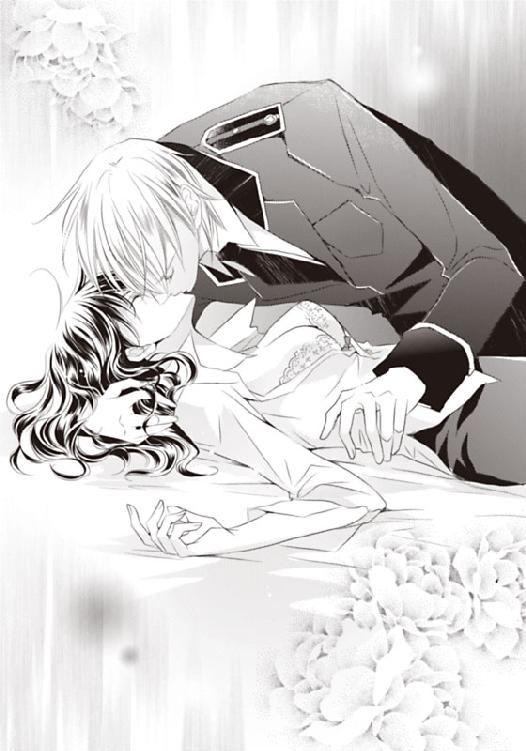
何度も。
「んっ......ぁ」
その心地よさにエローラは視線をとろりと溶かす。
「だめ......ぇ......」
「どうして」
「だって、そんなことしてる場合じゃ、あん」
スカートの奥に指が入り込み、下着の上からエローラのそこを、線を描くように上から下に何度も何度も撫で上げる。
「や、やだっ、いじらないで、はずかしい、やだ」
「いいんです」
「だって、ミロシュが見てるかもしれないんだよ？」
その言葉と、真っ赤になって本気で困っている顔を見て、ヴァーツラフは微笑んだまま下着の横から指をエローラの中に入れた。濡れていて、熱かった。
「あああああ！」
エローラの甘い声が上がる。
ヴァーツラフはあっという間に興奮した。欲情と、独占欲の混ざった目に、エローラは背筋にゾクゾクしたものが駆け上がるのを感じる。
「だったら、見せつけてやります。あなたを今抱いていいのは僕なんだって」
「ひッ、いや、あ、ああっ、だめ、みられ、ちゃ、したぎ、よごれひゃ、ああっ」
「ああ、中熱い......」
下着の中から濡れた音が響く。その度にエローラの形のいい脚がビクビクと動いた。
「だめっ、いや......！」
「好きです」
エローラはその言葉で、唇を引き結んだ。
何も言えなくなる。
ずっと聞きたかった言葉だ。
けれど聞いてはいけない言葉だった。
私もよと心が叫んだけれどそれは言ってはいけない言葉だった。
「好きです、エローラ」
「......っ......ずるい......ずるい......ずるい......」
涙でにじんだ声でエローラが言う。
「それ、言ったら、私が、あんっ、許すと思ってる、ずるい」
「......だって、そうでしょ......」
エローラがその言葉にぱっと顔を上げて何か言い返そうとしたとき、ヴァーツラフがエローラの淫核を親指で押した。
「きゃぁああああッ！」
エローラの全身に甘くしびれる快感が走り、それが強すぎて身体が痙攣する。
「くひ、あああ」
「本当のことですし。ああ、エローラ、かわいい......愛してます。ああ、ようやく言える」
ヴァーツラフは片腕でエローラを深く抱きしめ、中で指を動かして派手に水音を立て、祈りを捧げるように敬虔な調子で言った。
「愛してますエローラ。僕にあなたを滅茶苦茶にさせてください」
「......えっ」
エローラはまっかになって目を見開く。
「ヴァ、ヴァーツラフ、そういうこと、いうんだ」
「......余裕ありますね」
ヴァーツラフは中の奥を指で強く押して出口まで行き来させた。
「はひ、いっ、嫌、それ、いや、あっ、は、ぁああ」
「......奥から、熱いの、零れて......」
エローラの髪に鼻を埋めて、立つ香りを楽しみ息を荒くしながらヴァーツラフが言う。
「いわ、ないで、いわないで、ぇ、なにこれ、なに出てるの、やだ、やだっあ、なんかこわい、こわいよう」
泣きながらエローラは言うと、ヴァーツラフにしがみついた。身体をすり寄せ、腰を回す。
「エロさん、ちょっと、ぐいぐいされたら、困る、倒れる、あ、もう！」
ヴァーツラフは押されて倒れそうになって逆にエローラをベッドに押し倒す。
「きゃあん！」
驚いてヴァーツラフを見上げ、上気した顔で膝頭をくっつけて上げたエローラは、ひどく小さくて、可憐で、庇護欲をそそった。性欲も。
ぞくっと背筋を震わせてヴァーツラフは低い声で言う。
「いいな今の」
「え」
「声、かわいくて」
なに、とエローラが言うより早く、ヴァーツラフは愛液に濡れた手で服の上からエローラの乳房をもみしだいた。
「やっ、い、いた！ いたい、ヴァル、乱暴だよう、あっあっ、あんっ」
「そう？」
すり、と親指で乳首をこすり上げると、エローラは焦点を散らして背筋を反らした。
「ううあああ、やぁああ」
「大きいと感度って上がるんですか」
「ひっ、しっ、しるか、ぁ、あっあ、いや、おっぱいいや、いじんないで」
「気持ちよさそうですけど？」
ヴァーツラフは唾を飲み込んで、両手でそれぞれの乳房をもみしだく。
「いや、やだ、なんか、なんかね、もぞもぞするし、おなかのおく、きゅうって、うえ、なる、し、なんか、やだ、ぐす、せつない、ヴァル、おっぱいやめて、やだ」
「じゃあ、ここだけにしましょう......」
本気で譲歩するつもりで、ヴァーツラフは指で両方の乳首をつまんで捏ねた。
「きゃ、あ！」
がくんとエローラの腰が跳ね、息が詰まる。
「かッ、ひ、ぁん、んっう、うっう」
口元に手を当てて鼻をぐずらせて泣く。
「う、う、う、やだ、やだ、びりびりするよう」
「び、びりびり、する、んですか」
エローラは恥ずかしそうに何度もうなずいた。
「だから、やめて？ ね？」
泣きそうな顔で上目遣いで言われて、ヴァーツラフはこの言葉をどううけとめていいのか心底迷った。
「わ、わかり、ましたやめます」
と口では言うものの手が勝手に動く。やっぱりしたくて、下から乳房を摑んで大きく揉み込む。
「や、あああ......」
甘い声をあげてエローラの身体がうねる。
「きもちよさそうなんですけど」
「よ、よくわかんないよう、なんかやなの、もっとしてほしい気もするし、そうじゃ、ない気も」
「あっさっきのいいです」
「え」
「もっとって」
「いえるかバカぁああああ」
「だって、僕だって不安だもの」
唇を引き結んで、少し情けなさそうにヴァーツラフが言う。言っている間も手がとまらない。
「王室で、一応、十五になると、それ用のひとが来てくれて、するんですけど」
「あん、んっ、うん、あは」
「だからって、もう、そんなの、全然役に、たたない、なって今」
「ど、どうしてよ、ちょっと、もう、おっぱいやめてぇええ、身体の奥がびくびくする、くるしいよう」
「すみません、頭全然まわんなくて、エロさんかわいい、やらしい、いいの、エロさん、気持ちいいの」
「もう、なんか、わたしもよくわかんな、あっあっ」
またがくんと腰が跳ね上がる。その拍子に脚の奥で濡れた音がした。
「！」
二人で同時に気がついて、エローラは膝と太ももをびたりと合わせる。
「ちょっと！」
ヴァーツラフが責めるように言ってエローラが怒鳴る。
「はずかしいもんー！」
「セックスしてんだからいいでしょ!?」
「はーずーかーしーいーのー！」
膝から下の足をバタバタふってエローラは言い、ヴァーツラフはその膝を取って横に倒した。
「卑怯よ！」
「違うと思う」
ヴァーツラフはそう言って、後ろからスカートをめくろうとしたが、大きく広がる形のスカートではないのでずり上げた。
半端に脚の付け根を拘束しているような形になって卑猥だった。
下の空間から見える下着が濡れて透けている。
それだけではなく、愛液で濡れて、内ももが光っていた。
「あの」
「言わないで！」
「びしょぬれ」
「言うなっつったじゃぁあああああん!!」
恥ずかしくてエローラはシーツに顔を埋めて叫ぶ。
「あの、気持ち、いい、ですか」
エローラは反射的に首を振ろうとしたが、押し殺して、ちいさく、本当に少しだけうなずいた。
ヴァーツラフは目の前が明るくなるほど嬉しかったが、ごくりと唾を飲み込むと言った。
「......もうひとつ、訊いて、いいですか」
返事がないのは、肯定の意味かなと思って、ヴァーツラフは続けた。
「ぼ」
いざとなると、言葉がつっかえる。
耳のそばで鼓動がする。
こんなとこに心臓があるわけないのに。
肯定以外の言葉を聞いたら、心臓が弾けて壊れてしまうかもしれない。
「エローラさんは」
訊かない方がいい。
ほんとは。
わかってる。
許してくれてるんだから、いいじゃないか。
それだけで。
訊いて台無しにしてどうする。
否定の言葉を聞いたら、この先続けられないのに。
そう思うと言葉が続かない。
まごまごしていたら、エローラが、ヴァーツラフの顔を見て言った。
「わたしあなたが好きよ、ヴァーツラフ......」
ヴァーツラフは息が止まるほど驚いてエローラを見た。
エローラは、潤んだ目で、紅潮した頰で、春の女神のように美しかった。
光り輝いてすら見えた。
虹色の布をまとっているようだった。
「あなたは、勇敢で、向こう見ずで、やさしくて、かしこくて、すてきよ」
エローラの声が、胸に入り込んでヴァーツラフの胸を温かくひたす。
目の奥が潤む。
「人の優しさや、つよさを、弱さを、ちゃんと認めて、自分を寄りそわせて、信頼して、信頼してもらって、明るい、よい関係をつくれるって、最初はちっとも思ってなかったのに、あなたは今はもう、そうじゃないわ」
エローラの声はヴァーツラフの心の渇いた部分を潤して広がっていく。
「あなたが好きよ、ヴァーツラフ。あは、ほんとはね」
エローラが微笑んでいる。
「......あなたなら、ダメな人でもいいのかもしれないくらい、すきよ」
幸せそうな声で言って、エローラは微笑んだ。
ヴァーツラフも微笑んで、自然に唇を重ねた。
「僕もです」
「すき」
「すきです」
重ねるだけの口づけを何度もして、ふっとたまらなくなって舌を貪り合う。
「ん、んっん」
ちゅ、と、濡れた音がして唾液が交わる。
汚いとか、どうしようとか思う暇もない。
エローラはヴァーツラフの身体に両腕を回して身体を揺らす。
幸せな気持ち。
唇を離して見つめ合う。
微笑み合って、ヴァーツラフはエローラの耳たぶに唇をつけてささやく。
「エローラさん、あのね僕、エルンスト先輩からたぶん全部聞きました。あなた八月十日に死んじゃうんですってね」
ぎく、とエローラが身体を震わせてヴァーツラフをみつめた。
「......」
泣きそうな顔が歪んで、強く目を閉じた。
「後腐れない、と思って、くれて、いい、から......」
「だめですよ、バカンス行くんです」
首筋をちゅうっと吸い上げて、心から楽しくヴァーツラフは言った。
「きゃあああッ！ そこだめ、感じる！」
「ミロシュが言ってました、あなたここが感じるって」
「う」
またエローラの顔が泣きそうに歪む。
「あいつの記憶がなくなるくらい、僕がいじめてあげます」
「きゃ、いや、いや、あああ」
「そう、僕たちはバカンスに行って熱い砂を踏んで、僕は大臣になって、あなたは教会の仕事をして、そして結婚して僕の子供を産んで。三人？ もっと？ できるだけ！ 僕あなたとたくさんセックスがしたいから、たくさん生まれちゃうかも。あなたが辛くないといいなあ。身体壊しちゃうならだめ。でも、毎日、何度でもしたいから、すごくたくさんできちゃうかも」
その言葉にエローラがくすくす笑う。
「......計画は、しても。わたし死んじゃうのに」
「一人でいいや。長生きして」
「......わたしね、やっぱり死にたくないよ」
「よくできました」
ヴァーツラフがエローラの胸元にキスをする。
「ばーちゃんになって死にたい」
「となりにはじーちゃんの僕がいます」
「いいわね」
「エロさんがんばったから、僕より一日先に死んでいいですよ」
その言葉に、エローラは目を開ける。
ヴァーツラフは真剣に言っているのだと分かる顔で微笑んでいた。
「......ありがとう。なによりのご褒美だわ」
エローラの両脇に腕を回して、ヴァーツラフはエローラを抱いて、耳元に鼻面を突っ込んで顔をすり寄せた。
満ち足りた気分で、このまま死ねたらいいほど幸せだ。
ヴァーツラフの手のひらが服の上から背中を辿り、エローラは促すように腰を上げた。
ヴァーツラフの手はエローラの尻を包みこみ、布をどかして素肌に触れる。
その感触に二人共が息を漏らす。
蕩けるように視線を交わしたまま、ヴァーツラフの手がエローラの秘所に触れ、つるりと中に入った。
「......ああ」
「言、わないで、よ......っ」
「ぐちゃぐちゃ」
「ばか」
エローラの呼吸が変わる。
切なく途切れて弾けて溶ける。
ちゅ、ちゅ、と下から水音がひびいて、エローラは目を閉じて声を耐えている。
その顔をヴァーツラフは愉悦と興奮を感じながらながめていた。
エローラが身体をくねらせながら目を開けて、潤んだ目でにらみつけて、唇をとがらせ吐息で言った。
「......すけべ」
「あなたほどじゃぁ」
ヴァーツラフは指を二本深く突き込んで、親指で陰核を揺すりながら言った。
「ないかな」
「ひゃ、いやぁああああ、ああ、ああ、いや、いやぁああああ、ダメ、だめそれ。おかひくなっ、だめ、いや、やだぁあああ」
「いい声だなぁ」
「はず、かしいよう、やんっ、なか、きゃぁあ」
「中が恥ずかしいの？」
「あ、あふ、ああ」
正気の薄い目でエローラが言う。
それを見て、ヴァーツラフが唾を飲み込み、情けない顔で言う。
「ごめんなさいエローラさん」
「え」
エローラの顔を見たまま、ヴァーツラフはフー、と低い鼻息を漏らした。獣のように。
「もっといたぶってあげたかったんだけど」
ヴァーツラフは指を抜くと、その手をエローラの膝にかけて脚を閉じさせたまま逆がわに倒した。
「え!? なに!?」
そして肘で起き上がると、下着を股の下までずらし、脚を閉じさせたまま挿入した。
「いやぁあああ！」
「あっ、すごい、すごい、エローラさんの中、すごい」
「やだっ、やだってぇえ、あああ」
「いや？ ほんとに？」
腰を突き入れては戻し、戻して突き入れる。
中は熱く絡みつき、内部の凹凸が分かるほどに締め上げてくる。
「きゅひっ、き、ゃ、ああああ、あああ」
完全に正気の飛んだ目でエローラが啼く。
「きもちいい、なか、きもちいいよ、ヴァル、ああ、きもちいい、はっ、はっ、ああ、きゃぁああっ、きゃぁあああ、きもちいい」
端から見たら滑稽な動きなんだろうなと思いながら、がくがくと腰を動かす。
脳が焼き付きそうに気持ちよかった。
「あっあっあ、エローラさん、エローラさん、エローラさん」
「きゃん、いや、きぁ、そこ、そこ、いや、ああ、やあああ」
水音と皮膚のあたる音が響き、ヴァーツラフはエローラを抱き締めて、唇の届くところ全てにキスをした。
エローラはそれで愛されている気分に浸れた。
ヴァーツラフはエローラの脇から両手をいれて、きつく抱き締める。
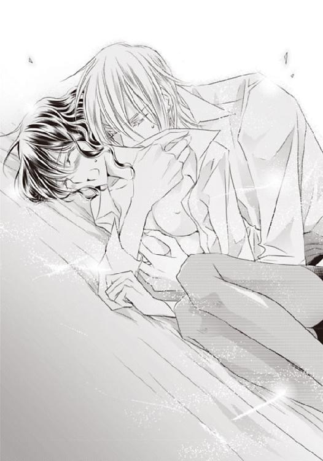
深く突き込んで吐き出した。
「エローラ、さん」
「ヴァル、ああ、あっああああああ！ 中、あつい、あついよおお」
喘ぎながらふたりとも、同時に高みに達し、そしてぐったりとベッドに沈んだ。
走り込んだときの様な息をふたりでして、つながったままヴァーツラフは手を伸ばして、下に敷き込んでしまっていた上掛けをひっぱってエローラにかける。
「......かけ布団は横にずらしてからしようね」
「次からそうしましょう」
次。
次がある。
それが嬉しくて、ふたりは笑った視線を見交わしヴァーツラフはエローラの鼻にキスした。
「服、ぬぎたぁい。もぞもぞする」
「だめ」
「どうして？」
「僕、絶対もういっかいしちゃうから」
バツが悪そうな顔でてれくさそうに言われ、エローラは身体を震わせて笑った。
「あは、あはははは、ははは」
「ちょ、まだ、中、ダメ、」
「えいっ」
「うわ締めないでッ！」
「......していいよ？」
エローラは蕩けるような笑顔で、幸せそうにそう言った。
とてもかわいらしくて、とても美しかった。
自分の恋人の魅力にひどく満悦して、ヴァーツラフはエローラの手を取って指先にキスしながら獰猛に言った。
「......後悔しても知りませんよ？」
結局ふたりが教会の自室に戻ったのは、次の朝だった。
なんとなくエルンストと顔を合わせづらかったが、エルンストはいつも通り食堂にいる気配がしていたのでそっと扉を開いた。
「よう朝帰り」
エルンストは食卓にノートと本と筆記具を広げて、煮物をしながら勉強していた。
テーブルの上には花があった。
「たったただいまー」
エローラがぶんぶんと手を振る。
「もっもどりました」
ヴァーツラフが意味なく敬礼をする。
嫌そうにエルンストが返事をした。
「......ヤーハイディア......」
なんとなくモジモジしているふたりを、下あごを横にずらして見ながらエルンストは立ち上がる。
「なあ」
「はいっ」
なぜかふたりの声が重なった。
「セックス気持ちいいの」
エローラは全身真っ赤になってうつむき、ヴァーツラフは真っ赤になって怒鳴るように言った。
「はいっ先輩最高でした！」
エルンストがどういう反応をするか、ふたりは正直不安ではあった。
だってエルンストはエローラが好きだって言ってたし。とヴァーツラフ。
だって三人で暮らしてるみたいなのにそのうちふたりがくっついちゃったら居心地悪いんじゃないの、とエローラ。
それでも誤魔化したくはなかったので、ホテルからの帰り道、ふたりは真っ白い息を雲の様に吐きながら、
「ちゃんとやろうね」
「がんばります」
「うん」
「はい」
「うん」
「はい」
と一歩ごとに言い交わしていたのだ。
エローラの服は、ホテルの制服とコートを借りた。
エルンストがどういう返事をするかな、とふたりは思っていたが、実際の返事はふたりの想像のようではなかった。
エルンストは、立ち上がると、ふたりの前に立つ。
「忘れないで欲しいんだけど」
「......はい」
ヴァーツラフは目を瞬き、エローラはエルンストを見つめる。
朝の食堂の中は、うすい、新しい光と湯気が満ちている。
「......この先、どうなってもさ」
「はい」
「ヴァルが、大臣になって、もしかしたら王様になっても、革命が起こって、犯罪者になっても」
エルンストはエローラを見た。
「エローラさんが、結局死んでも、怪物になっても、王妃になっても犯罪者になっても」
「はい」
「おれ、エルンスト・ムハは、お前らの家族で、友人だ」
そう言い放ったエルンストは、堂々としていた。
「忘れないでくれ。お前らが、どう思っていても、必ずそうだとおれがきめた」
「......ちびちゃん」
エローラは思わず出会った時の名前で呟いてしまう。
「その言い方やめろ巨乳のおばはん」
目を潤ませるエローラを、エルンストはにらみつける。
ヴァーツラフはエルンストの真摯さに打たれて感動した。
僕は、年若の立派な友人を手に入れた。
「そうだ、ついでだ、言っておこう。エローラ？」
「ん？」
エルンストはエローラの手を取って優雅に腰を折る。
「実はおれはあんたがすきなんだ。ズリネタにもしてる。そういう意味ですきだ。そんなわけなんで、この身分ある大馬鹿野郎に愛想が尽きたら、そのことを是非思い出してくれ。愛してる、エローラ」
手の甲に軽くキスをして、男の顔でエルンストは微笑んだ。エローラがその顔に思わず見入る。
「先輩、僕が惚れそうです」
横でヴァーツラフが目を潤ませて言って、エローラが呟く。
「いやな三角関係つくんないでくんないかな」
エルンストははははと声を上げて笑い、テーブルの上を片付けた。
「着替えて来いよ！ エルンスト様の超極上の朝飯だ！ お前らのちゃんとした初セックスのお祝いメニューだぞ。そこの花は職員たちのプレゼントだ。全員知ってるからな、羞恥にもだえやがれ！」
第五話 さらば愛しき
その日を境に、なぜかデービッドの出現は極端に減った。
「話通じたのかな」
とエローラは思う。
一部始終を話して、教会全体で事態を見守ることにした。
「こうなると、問題はミロシュと私の寿命だけね」
街のカフェで、すみれ色の複雑な編み目の毛糸のドレスを着たエローラが言う。
向かいに座っているのはヘリンボーンのジャケットを着たヴァーツラフだ
「八月十日は諸外国にも通達してるし、用心のために交通の解禁は調査期間半年のあとってことにはなってるけど、まぁ、僕等がバカンス行く分には問題ないだろう」
「そう？ なにかあったらって待機命令出るんじゃないの」
「それならそれで、休暇になるだろ」
「やだバカンス行きたいー！ 海ー！」
チーズをつまんでビールを飲んで、ふたりは楽しく話をしている。
「来年になったら絶対行けますよ。あとは、あれだなぁ、身分がどうのとか、うちのかーちゃんが言いそうだから」
「あ、ね......それね。わたし、最悪愛人でもいいよ......」
エローラがしょんぼりして言うのに、ヴァーツラフがコーヒーを噴き出した。
「ぎゃあああちょっとあんた服どーしてくれんのよ！」
「ま、また買ってあげますよ脱がさせてくれるなら！」
「それはいいけどこれ気にいってんのよ！」
店員が、濡らしたタオルを持ってきてくれて、エローラはとんとんと叩いてコーヒーを落としながら言う。
「だいたいなによそれ、脱がす前提で買うとか、普通に脱ぎますし」
「うふふ、はい」
「にこにこすんなもう」
「それで、身分の話なんですけども」
エローラがまたあっという間にしょんぼりする。
わかってる。
ヴァーツラフと自分なんか釣り合わない。
「国民功労褒章で、エローラさんには第一等公爵の地位が与えられ」
今度はエローラが噴き出して咳き込んだ。
ヴァーツラフは黙って治まるまでコーヒーを飲んでいた。
ぜひーぜひーと喉を鳴らしてエローラは言う。
「は？」
「公爵と王族なら結婚普通でしょ。かーちゃんだって公爵家から嫁いだし」
「え、へ、あ？ わたしが公爵？」
「誰も文句ないと思いますよ。あったらバカだ」
平然とヴァーツラフは言う。
「もし、うちのかーちゃんあたりがなにか言ったら、僕が締めます」
「ちょっと殿下言葉遣いが」
「僕のすきなひとのがうつりました。楽しいなー」
「う」
「いいですか、エローラさん。何がどうであれ、この九年あなたは国民を守ったんです。そのことをみんな知っていて、あなたに報いたいと思っていて、それを体現するべきは王家なんです。僕との結婚のことがなくても、第一等公爵の位はかならず授与されますよ。謹んで受けて頂きたい、国民の総意なのですから......って、なんで顔赤いんですか」
エローラは顔を赤くして、全ての動きを止めて、少々汗をかいていた。
「暑いですか？ つめたいものでも？ シードルなんかあるかしら。すみません、あの」
店員を呼ぼうとするヴァーツラフに、エローラは言う。
「シ、シードルは頼んでほしいけど」
「ですよね。すみません、シードル。つめたいのを。あればリンゴを切って浮かして下さい。ミントはある？ はい、お願いします」
店員は注文を聞いて去って行く。
「結婚？」
エローラが聞いて、ヴァーツラフが立ち上がる。
「えっ僕言ってませんでしたか!?」
「きいてません。座りなさい」
「あっ、す、すみません、うわ、どうしよう、僕すっかりその気で、父上と兄上に相談して手はず整えて」
「っていうか、わたし死ぬ予定」
「あっないんで」
ヴァーツラフはあっさり否定した。
「だから、結婚して下さいエローラさん」
エローラの目からぼろっと涙が零れた。
「生きてたら」
「生きてます。だから、結婚して下さい」
ヴァライは平和な日々が続いていた。
春になって、マンディラ河は雪解け水を滔々と流し、木々は緑で花が咲き乱れる。新鮮な葉物の野菜が食卓に並び、ベリー類の果実も豊富だ。
窓を開けて風を楽しむこともできるし、重たいオーバーなどはタンスにしまわれる。
エローラとヴァーツラフの仲むつまじさとは別に最近、エルンストがふさいでいると噂になった。
「そりゃあそうだろうよ」
「いくら家族になりたいとか言ってもさ」
「好きな女、別の男に取られたあげく一緒の屋根の下に住んでてさ」
職員たちは同情と、少々の下世話さとを伴ってそう噂した。
当のエルンストはひとりでいることが多くなった。
いつも分厚い本とノートを持ち歩いて、どこででもそれを開いて勉強している。
今日は天気がよすぎて、花が咲きすぎて、外の世界がまぶしすぎて、と言うような風情でエルンストは聖堂に向かった。
大尖塔を擁する聖堂の、華麗なステンドグラスをしばらくながめてから、エルンストは告解室に入った。
「ようこそ、罪の子よ。ここでの話はここで始まりここで終わり、ここで消えます。安心して語りなさい」
「はい」
エルンストは外では決して見せない悄然とした様子で語り出す。
小さな木製の部屋は、つるバラの模様が彫り出されて飾られている。ニス装飾で彩られたそれは、暗い部屋の中、鈍く光る。
告解師との間の窓には紗の黒布がかけられて顔は見えない。
「......おれは罪人です。嘘をついて生きてる。ほんとは、悔しくてしかたない。エローラさんをヴァーツラフなんかに渡したくないんだ......！」
エルンストの声と肩が震える。
「エローラさんはおれのものだ！ ずっとそう思ってる！ なのにあの二人はおれの嘘を都合よく信じて......どこまでおれの気持ちを踏みにじれば気が済むんだ!!」
慟哭にも似た叫びをエルンストは吐き出し、告解師は笑みを言葉に含ませる。
「......では、俺の手を取れよエルンスト」
桃色の光が、告解室の仕切りを取り払う。
そこにいたのは赤毛の男だ。
シルクの赤いスカーフと黒いコートを着ていた。
「......ミロシュ！」
エルンストは目を見開いて、腰を浮かせる。
「逃げてもいいが、いいのかな。俺は協力者だ。お前に力を貸せるぞ、ちびちゃん？」
懐かしい呼び名で呼ばれる。
「どう......する、んだ」
その言葉にミロシュは微笑む。
「ヴァーツラフがいなければいいだけの話なんだろう？ ならば簡単だ。殺してしまえ」
「殺す？」
「俺がここにいる。その意味をお前なら分かるだろう。俺にとって結界は無意味だが、あいつを殺す栄誉はお前に譲ろうと言うんだ。なに簡単だ。街の薬屋で毒薬を買ってきた。これを」
「おいおい市販かよ」
ボリボリと頭をかいてエルンストが言う。
その言葉にミロシュは驚愕の表情を浮かべた。
「焼きが回るにもほどがあんじゃねぇのミロシュ」
エルンストは持ち歩いていた大判の本を開く。
「まあ、結界くぐり抜けて必死こいてヒィヒィでここにいる根性は認めてやるよ。お前がそんだけ追い詰められてるってこともな」
「な、なにを言う。お前、最後のチャンスだぞ。エローラを手に入れる手伝いをしてやろうというんだ」
「お前がァ？」
エルンストは横目でミロシュを見て笑う。
「エロさん手に入れたいのはお前だろうがよ。おれにくれてどうしようってんだよ。まるで理屈がとおらねぇわ。おれ、お前の手駒になれるほどバカじゃねぇよ」
本の中からエルンストはぼろぼろの本を取り出す。
エローラがずっと使っていた聖典だ。
「なぁ、どんな気分？ 今どんな気分？ 絶ッ対拗ねてそねんで焼き餅焼いて自分のついた嘘に押しつぶされて、ぐすぐずしてるはずのこのちびちゃんが、言ったこと全部本気で、心底それを実行してて、嘘もごまかしも一個もねぇなんて、サイッコーにかっこいい男に成長してた気分はよ！ お前なんかにこのエルンスト様が計り知れるか！」
エルンストは、聖典の綴じ糸の端を摑むと一気にひっぱった。
聖典がばらける。同時にエルンストは告解室の扉を中から蹴り開けた。
外の光と風に聖典のページがミロシュに襲いかかるようにへばりついた。
「ああ、ああ、ああああ」
エルンストがいかにも痛快でたまらないと言うように叫んだ。
「トゥリーン、ドヴァー、アイ、開始！」
「暗闇の、深淵の、遠い夜の、一粒の黒真珠」
扉の外で声がした。
ミロシュはぎょっとそちらに視線を向けた。
杖を構えたヴァーツラフがいた。
凜とした姿勢で、冷ややかな視線でミロシュを睥睨していた。
「僕が送ろう、ミロシュ。もうデービッドに力はない。エローラさんを辱めたお前を許せはしないが、苦しめるほどバカでもないさ」
「な、な、な、生意気、な」
ミロシュのざらついた樹皮の様な声を、ヴァーツラフは物ともしなかった。
ただ、呪文を続ける。
杖が力の圧力で震えるのを押さえるように力を込める。
「その中で鳴り響く太鼓のことを、死という名の、再生という名の約束のことをだれもただ忘れていただけなのだ」
「知っているのか、八月十日にはエローラだって」
知ってるさ。
ヴァーツラフは重い、最後の言葉を告げた。
「おいで、私の呼び声に従い、ここへ！」
びったりと覆い尽くして動かない教典の紙に身動きを封じられ、全身を震わせ、ミロシュは叫んだ。
「が、あ、あああ、ああああああああ!!」
チャームは出ない。
ただミロシュが老人のようにしなびていった。ただでさえ弱っているミロシュの中のデービッドが今度は消える前にミロシュの生命力を吸い取っているのだ。
「エローラ......エローラ......エローラ......俺の......」
しぼんだ眼球から、涙が流れた。
「私はここよ。ミロシュ」
から、と音がして外から車いすに乗ったエローラが現れた。頭を上げていられず、首の後ろにいれた枕に頭をもたせかけていた。
「ああ、エローラ」
「がんばっちゃったねぇ」
エローラは穏やかに言った。
「わたしがこんなんなんだから、あんたも大変なんだろうなって想像つくよ。わたしもう立てないんだ。なあにそのスカーフ。かっこつけちゃって」
ミロシュの瞳が穏やかに潤む。
「君に、恥ずかしい思いを、させたくなくて」
エローラも笑う。
「ビール零しても、わたしはよかったのよ」
「嫌さ、みっともない......」
その言葉を最後に、ミロシュの気配が消える。
「......さよなら」
エローラがしんみり言った。
「あんなに優しくしてやることなかったのに」
ヴァーツラフが面白くなさそうに言う。
「おれは啖呵切れて気持ちよかった」
エルンストの言葉にエローラとヴァーツラフが言った。
「いずれあれが恥ずかしくなる日が来るわよ」
「来ないとまずいですよ先輩」
「こねぇしまずくねぇし。外に職員いるの？」
「ええ、待機してもらって」
と、話をしている三人の視界の隅で、ミロシュが動いた。
「あの」
エルンストとヴァーツラフは驚いて飛び退る。エローラは動けないので目を見開いた。
「なんっだよ死んでろよ！」
とエルンストが言う。
「首とか切らなきゃダメですか」
「えろーらちゃん」
その呼び声。
エルンストとヴァーツラフが軽く手を取り合う。
「なにがエローラちゃんだ死んでろ図々しい」
「全身なますにしなきゃだめですかね先輩」
「待って、待って。あの」
エローラは息を吸って、言った。
「デービッド......だよね」
「そう」
「ミロシュは？」
「いった」
「......そっか」
そっか、とエローラは再度小さな声で呟いた。
本当にいなくなってしまったんだ、と思う。
「で、なあに、デービッド」
「われらは、はちがつとおかに、いなくなる。もう、ずいぶんすくない」
エローラは目を上げて、それから目を閉じて笑って言った。
「そのようね。わたしもう動けないもの」
「えろーらちゃんはばかんすにいきたい」
言われてエローラは驚き、そして笑った。
「やだなにそれ恥ずかしい」
「えろーらちゃんはおばーちゃんになりたい」
「......はい」
「えろーらちゃんはにっこうよくしてすなあそびがしたい」
「......はい。したいです」
エローラはこらえきれずに涙を落とした。
たとえば死病を得た人もこうなのだろうか。
当たり前のはずの、望めばすぐにでもかなえられた希望が、遠くて、遠くて。
簡単に届くと思っていたはずのそれは、いきなり飾り窓のむこうにもっていかれてしまったみたいで。
そうなってしまって初めてあの輝きは得がたい物だったのだと知って。
ヴァーツラフとエルンストはただ黙っている。
外の職員も待っている。
「われらはえろーらちゃんをたすける」
「......え」
「われらはえろーらちゃんのなかでいきたらいいとおもう。そのぶんのわれらが、えろーらちゃんのなかにのこればよいのだ。やりかたを、つくろう」
その言葉に、エローラは呆然とする。
「ミロシュは？」
だって、それができるならミロシュでやればよかったのに。
「えろーらちゃんははなしをしてくれたのでえろーらちゃんをたすけたい。みろしゅははなしをしてくれなかったのでたすけようとおもわない」
「......人間くさいな！」
ヴァーツラフが感心して言った。
「ヴァル、あなた......どう？」
「なにが」
「いや、デービッド入りの女と、結婚できる？」
真剣な顔で訊いたエローラに、ヴァーツラフはきょとんとした顔でうなずいた。
「できるよ」
「すごいね」
「だって今でもそうじゃない」
エローラもきょとんとしてから言った。
「そうか」
「いまからやりかたをていあんする」
「待っててデービッド！」
エルンストが外に飛び出した。
少ししてから筆記具を携えた職員たちが詰めかけた。
「エローラさん、ここは任せて、戻ろう」
ヴァーツラフがひそりと言って、エローラがおっくうそうに微笑んで頷いた。
「ん。ごめん。寝ちゃうかも」
「いいよ。あなた軽くなっちゃった」
「うん」
二人は部屋に戻り、エローラはベッドに横になってすぐ眠った。
ヴァーツラフは、その骨が浮いてしまったエローラの手を取って、両手に挟んで暖め続けた。
デービッドの話は長くて複雑だった。夜までかかった。
最後にデービッドは聞いた。
「できるか」
エローラは先に休ませて、ずっとデービッドの話を聞いていた全員が頷いた。
エルンストが言った。エローラが眠ってしまったので、戻ってきていたヴァーツラフが隣にいた。
「やるのさ」
「うむ」
そのデービッドの返事は不思議なことに満足そうで、嬉しそうだと全員が思った。
「まず、われらは、えろーらちゃんがおばーちゃんになるまでえろーらちゃんのなかにいるどりょくをする」
「うん」
「いまいったてじゅんで、われらをていちゃくさせろ」
「......わかった」
「がんばれ。ではわれらは、いどうする」
「あ、待って。おーいマーフ。ねぇ、結界解いたよね？ おれさっき言ったよね？ あ、できてる？ よし、移動してくれデービッド」
「ああ」
デービッドはそういうと、ミロシュの身体からピンクの光になって浮き、そのまま流星の様に尾を引いて流れていった。
一同は待った。
必ず来る。
必ず。
こちらから行ってもいいが。
裸足の足音がした。
「裸足かよ」
とエルンスト。
「らしいじゃないですか」
とヴァーツラフ。
「幸せにしねぇとゆるさねぇからな王子」
と職員のひとり。
「生涯をかけてと誓います」
裸足で、部屋に駆け込んできたのはエローラだった。
「みて！」
と、全員を外に呼び寄せてからエローラは両手を伸ばしてくるりと回転してみせた。
大聖堂の中には明かりはともされてはいなかったが、その日は見事な満月だった。
極彩色のステンドグラスの向こうから、月光が降り注いでエローラを照らしていた。
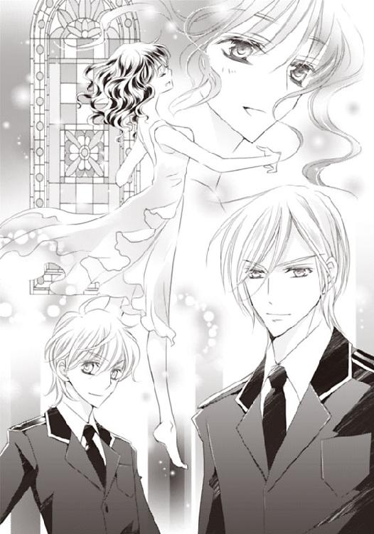
エローラは美しかった。
まるで映画の場面のようだった。
「ヴァル、やっぱさ」
エルンストが言った。
「だめです」
ヴァーツラフが言った。
「チッ」
「がんばって僕、先輩よりいい男になりますから」
「それは無理だ。おれは生まれながらに世界一いい男だから」
「否定はしませんがそのままだと完璧すぎて彼女できませんよ」
「お前がそれを言うかな」
ぐっとヴァーツラフが詰まる。
「すみません」
「結婚式いつすんの」
「国を挙げての式典になりますから、来年ですね」
「バカンスおれもつれてってくれんの」
「もちろん」
「ちょっとあんたたち感動がたりないわー！ すごいとか言ってよ！」
エローラがどなった。
全員で笑った。
誰からともなく拍手がおこる。
エローラは思いがけなかった反応に、あれっ、ありがとうと、照れた。
「デービッドをエローラさんの中に定着させる術式か。死に物狂いでやるぞ。ありったけ、金も技術も知識も経験も使うからな。覚悟しろ」
エルンストの言葉に、ヴァーツラフ以下、職員たちの返事がひとつになった。
「ヤーハイディア！」
エローラは身体が動くのが嬉しくてしかたがない。
自分の足で立って、軽々と回転する。
翻るスカートの裾。
黒髪に散る、月光のステンドグラス。
えろーらちゃんはばかんすにいきたい。
えろーらちゃんはおばーちゃんになりたい。
えろーらちゃんはすなあそびをしてにっこうよくをしたい。
えろーらちゃんはすきなひととてをつないであるきたい。
たったそれだけのことが、
かなわないこともあって。
少女は王宮の廊下、肖像画の前で語る。
王家の肖像。
銀髪に青い目の王弟、ヴァーツラフ。就任式のときのものだ。
「でもねぇ、それはみんなそうなんだって」
語りかけられている老年の男は静かに聞いている。
金髪をなでつけ、背筋のびっと張ったスーツ姿。顔には皺はあったが、眼光が鋭く、浮かべる表情が弾けるようで、誰も年のことなどすぐ忘れ、彼の魅力の虜になるだろうと思うような男だった。
「生きてる人はいつ死ぬかわかんないからって。だから、できることをちゃんとしてかなきゃいけないし、バカンスにはちゃんといかなくちゃって。私、バカンスとか興味ないんだけどなー」
「そうかい」
老人がくく、と笑う。
「でもおばあさまがそう言うならいこうかって気になったわ」
「そうさ、ちびちゃん！ おれが連れてってやる。最新の車に乗ろうな、イカスぜ!?」
「それをきいたら楽しみになってきたわエルンスト」
黒い髪青い目の少女は身を震わせてにこにこした。
「いいかいちびちゃん、覚えておきな、人生はお前のものだ、死ぬまで楽しめ。世界の全てが、お前を助けてくれるさ」
エルンストは、少女を抱き上げて廊下を歩きながらささやいた。
「そして恋をしたまえ、ちびちゃん。愛する人をつかまえるのさ。罠のかけかたは、おれがおしえてやろうじゃないか」
「わるい先生なんじゃないの」
言って二人でクスクス笑った。
「あっ、私、この絵がいちばんすきなの」
少女がそう言うのでエルンストが足を止める。
「ああ、いい絵だよな」
海辺に椅子を出して座っている老夫婦の絵だ。
銀髪と黒髪の老夫婦が笑っている。
ヴァーツラフ・ツインマーマン・ハース殿下とエローラ・デービッド・ハース妃殿下夫妻。
題名はそうで、日付は今年だ。
「明日、ここにいこうな、ちびエローラ！ ドルカ諸島で、バカンスだ！」
エルンストは言って、少女を抱き締めた。
あとがき
はじめましての方にははじめまして、そうでない方には、またお目にかかれましたね！
初めてこちらお邪魔しました。
ティアラ文庫さん。
男女エロものブランドさんですって言わなくてもいいか別に。みんな知ってるわ。
初めて男女エロを書きましたが、毎度通常運転ですみません......。
担当さんにプロット出したら
「すみませんがこれは......」
「でもこれかきたいなー」
って口説かせて頂いて、口頭で説明し、
「だったらなんとかなるかなぁああ」
って言って頂いて書かせてもらったものです。
書きたかったから楽しかったです！
でもそのプロットにいなかったエルンスト先輩が話を引っ張ってくれたという不思議。
この三人、書いててかわいらしかったです。
読んで下さった方に気に入っていただけるといいなぁと思います。
三人でいちゃいちゃ退デービッドやってるところを、もっと意味なくだらだら書きたかった気もしますが、意味ないのでね......。
タイトルは担当さんがつけてくださいました！ いいの!? これでいいの!?
またティアラさんで近いうちに書かせて頂けそうです。
話の構成上この話の続きというわけにはたぶんいかないんだと思うんですが、書くのを楽しみにしています。
本編に八月十日の描写は出てきませんが、きっと綺麗に晴れ渡った、緑と夏の花溢れる美しい日だったと思っています。
ではあなたさえよければまたどこかで！
２０１２ 野梨原花南
８月10日を楽しみに 守護天使（巨乳でチビ）と王子（イヤミで口が悪い）
2012/2/1 電子版発行
東京都千代田区飯田橋３－３－１
著者 野梨原花南
挿絵 椎名咲月
発行 プランタン出版
本データには購買者を特定できる個別のシリアル番号が刻印されています。
複製・頒布・転売等、著作権を侵害する行為は法律で禁じられており、
違反した場合は刑事罰および民事罰を招来することになります。
（c)2012 KANAN NORIHARA,SATSUKI SHEENA